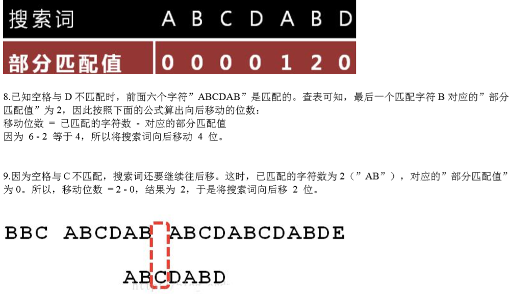
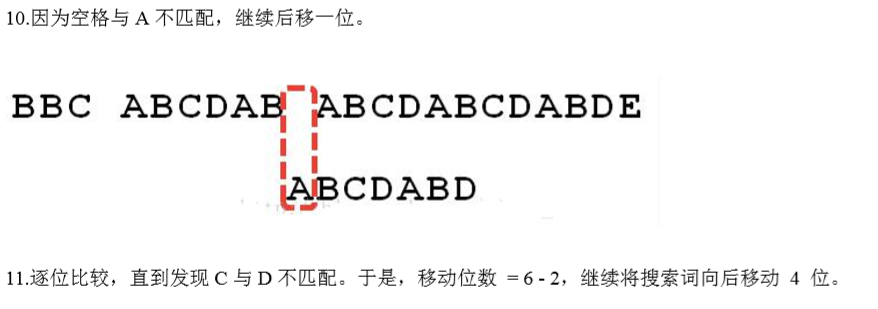
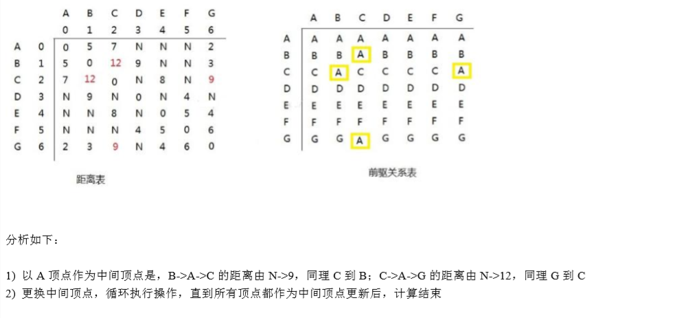

<!DOCTYPE html>
<html>
<head><meta name="generator" content="Hexo 3.9.0">
  <meta charset="utf-8">
  
  <meta name="renderer" content="webkit">
  <meta http-equiv="X-UA-Compatible" content="IE=edge">
  <link rel="dns-prefetch" href="https://RuanGuoHui.github.io">
  <title>数据结构与算法之程序员常用10种算法 | Mr Nguyen的博客</title>
  <meta name="viewport" content="width=device-width, initial-scale=1, maximum-scale=1">
  <meta name="description" content="1.二分查找算法（非递归）1.1 二分查找算法（非递归）介绍1）前面我们讲过了二分查找算法，是使用递归的方式，下面我们讲解二分查找算法的非递归方式">
<meta name="keywords" content="数据结构与算法,程序员常用10种算法">
<meta property="og:type" content="article">
<meta property="og:title" content="数据结构与算法之程序员常用10种算法">
<meta property="og:url" content="https://RuanGuoHui.github.io/2019/07/28/数据结构与算法之程序员常用10种算法/index.html">
<meta property="og:site_name" content="Mr Nguyen的博客">
<meta property="og:description" content="1.二分查找算法（非递归）1.1 二分查找算法（非递归）介绍1）前面我们讲过了二分查找算法，是使用递归的方式，下面我们讲解二分查找算法的非递归方式">
<meta property="og:locale" content="default">
<meta property="og:image" content="https://ruanguohui.github.io/2019/07/28/数据结构与算法之程序员常用10种算法/001.PNG">
<meta property="og:image" content="https://ruanguohui.github.io/2019/07/28/数据结构与算法之程序员常用10种算法/002.PNG">
<meta property="og:image" content="https://ruanguohui.github.io/2019/07/28/数据结构与算法之程序员常用10种算法/003.PNG">
<meta property="og:image" content="https://ruanguohui.github.io/2019/07/28/数据结构与算法之程序员常用10种算法/004.PNG">
<meta property="og:image" content="https://ruanguohui.github.io/2019/07/28/数据结构与算法之程序员常用10种算法/005.PNG">
<meta property="og:image" content="https://ruanguohui.github.io/2019/07/28/数据结构与算法之程序员常用10种算法/006.PNG">
<meta property="og:image" content="https://ruanguohui.github.io/2019/07/28/数据结构与算法之程序员常用10种算法/007.PNG">
<meta property="og:image" content="https://ruanguohui.github.io/2019/07/28/数据结构与算法之程序员常用10种算法/008.PNG">
<meta property="og:image" content="https://ruanguohui.github.io/2019/07/28/数据结构与算法之程序员常用10种算法/009.PNG">
<meta property="og:image" content="https://ruanguohui.github.io/2019/07/28/数据结构与算法之程序员常用10种算法/010.PNG">
<meta property="og:image" content="https://ruanguohui.github.io/2019/07/28/数据结构与算法之程序员常用10种算法/011.PNG">
<meta property="og:image" content="https://ruanguohui.github.io/2019/07/28/数据结构与算法之程序员常用10种算法/012.PNG">
<meta property="og:image" content="https://ruanguohui.github.io/2019/07/28/数据结构与算法之程序员常用10种算法/013.PNG">
<meta property="og:image" content="https://ruanguohui.github.io/2019/07/28/数据结构与算法之程序员常用10种算法/014.PNG">
<meta property="og:image" content="https://ruanguohui.github.io/2019/07/28/数据结构与算法之程序员常用10种算法/015.PNG">
<meta property="og:image" content="https://ruanguohui.github.io/2019/07/28/数据结构与算法之程序员常用10种算法/016.PNG">
<meta property="og:image" content="https://ruanguohui.github.io/2019/07/28/数据结构与算法之程序员常用10种算法/017.PNG">
<meta property="og:image" content="https://ruanguohui.github.io/2019/07/28/数据结构与算法之程序员常用10种算法/018.PNG">
<meta property="og:image" content="https://ruanguohui.github.io/2019/07/28/数据结构与算法之程序员常用10种算法/019.PNG">
<meta property="og:image" content="https://ruanguohui.github.io/2019/07/28/数据结构与算法之程序员常用10种算法/020.PNG">
<meta property="og:image" content="https://ruanguohui.github.io/2019/07/28/数据结构与算法之程序员常用10种算法/021.PNG">
<meta property="og:image" content="https://ruanguohui.github.io/2019/07/28/数据结构与算法之程序员常用10种算法/022.PNG">
<meta property="og:image" content="https://ruanguohui.github.io/2019/07/28/数据结构与算法之程序员常用10种算法/023.PNG">
<meta property="og:image" content="https://ruanguohui.github.io/2019/07/28/数据结构与算法之程序员常用10种算法/024.PNG">
<meta property="og:image" content="https://ruanguohui.github.io/2019/07/28/数据结构与算法之程序员常用10种算法/025.PNG">
<meta property="og:image" content="https://ruanguohui.github.io/2019/07/28/数据结构与算法之程序员常用10种算法/026.PNG">
<meta property="og:image" content="https://ruanguohui.github.io/2019/07/28/数据结构与算法之程序员常用10种算法/027.PNG">
<meta property="og:image" content="https://ruanguohui.github.io/2019/07/28/数据结构与算法之程序员常用10种算法/028.PNG">
<meta property="og:image" content="https://ruanguohui.github.io/2019/07/28/数据结构与算法之程序员常用10种算法/029.PNG">
<meta property="og:image" content="https://ruanguohui.github.io/2019/07/28/数据结构与算法之程序员常用10种算法/030.PNG">
<meta property="og:image" content="https://ruanguohui.github.io/2019/07/28/数据结构与算法之程序员常用10种算法/031.PNG">
<meta property="og:image" content="https://ruanguohui.github.io/2019/07/28/数据结构与算法之程序员常用10种算法/032.PNG">
<meta property="og:image" content="https://ruanguohui.github.io/2019/07/28/数据结构与算法之程序员常用10种算法/033.PNG">
<meta property="og:image" content="https://ruanguohui.github.io/2019/07/28/数据结构与算法之程序员常用10种算法/034.PNG">
<meta property="og:image" content="https://ruanguohui.github.io/2019/07/28/数据结构与算法之程序员常用10种算法/035.PNG">
<meta property="og:image" content="https://ruanguohui.github.io/2019/07/28/数据结构与算法之程序员常用10种算法/036.PNG">
<meta property="og:image" content="https://ruanguohui.github.io/2019/07/28/数据结构与算法之程序员常用10种算法/037.PNG">
<meta property="og:image" content="https://ruanguohui.github.io/2019/07/28/数据结构与算法之程序员常用10种算法/038.PNG">
<meta property="og:image" content="https://ruanguohui.github.io/2019/07/28/数据结构与算法之程序员常用10种算法/039.PNG">
<meta property="og:image" content="https://ruanguohui.github.io/2019/07/28/数据结构与算法之程序员常用10种算法/040.PNG">
<meta property="og:updated_time" content="2019-07-28T03:07:15.835Z">
<meta name="twitter:card" content="summary">
<meta name="twitter:title" content="数据结构与算法之程序员常用10种算法">
<meta name="twitter:description" content="1.二分查找算法（非递归）1.1 二分查找算法（非递归）介绍1）前面我们讲过了二分查找算法，是使用递归的方式，下面我们讲解二分查找算法的非递归方式">
<meta name="twitter:image" content="https://ruanguohui.github.io/2019/07/28/数据结构与算法之程序员常用10种算法/001.PNG">
  
    <link rel="alternative" href="/atom.xml" title="Mr Nguyen的博客" type="application/atom+xml">
  
  
    <link rel="icon" href="/tupian/010.jpg">
  
  <link rel="stylesheet" type="text/css" href="/./main.0cf68a.css">
  <style type="text/css">
  
    #container.show {
      background: linear-gradient(200deg,#a0cfe4,#e8c37e);
    }
  </style>
  

  

</head>
</html>
<body>
  <div id="container" q-class="show:isCtnShow">
    <canvas id="anm-canvas" class="anm-canvas"></canvas>
    <div class="left-col" q-class="show:isShow">
      
<div class="overlay" style="background: #4d4d4d"></div>
<div class="intrude-less">
	<header id="header" class="inner">
		<a href="/" class="profilepic">
			
		</a>
		<hgroup>
		  <h1 class="header-author"><a href="/">阮国辉</a></h1>
		</hgroup>
		
		<p class="header-subtitle">Code阮的技术博客</p>
		

		<nav class="header-menu">
			<ul>
			
				<li><a href="/">主页</a></li>
	        
				<li><a href="/categories">随笔</a></li>
	        
				<li><a href="/archives">归档</a></li>
	        
			</ul>
		</nav>
		<nav class="header-smart-menu">
    		
    			
    			<a q-on="click: openSlider(e, 'innerArchive')" href="javascript:void(0)">所有文章</a>
    			
            
    			
            
    			
    			<a q-on="click: openSlider(e, 'aboutme')" href="javascript:void(0)">关于我</a>
    			
            
		</nav>
		<nav class="header-nav">
			<div class="social">
				
					<a class="github" target="_blank" href="https://github.com/RuanGuoHui" title="github" rel="external nofollow noopener noreferrer"><i class="icon-github"></i></a>
		        
					<a class="weibo" target="_blank" href="https://weibo.com/u/6030438153" title="weibo" rel="external nofollow noopener noreferrer"><i class="icon-weibo"></i></a>
		        
					<a class="jianshu" target="_blank" href="https://www.jianshu.com/nb/38689523" title="jianshu" rel="external nofollow noopener noreferrer"><i class="icon-jianshu"></i></a>
		        
					<a class="bilibili" target="_blank" href="https://space.bilibili.com/434955930" title="bilibili" rel="external nofollow noopener noreferrer"><i class="icon-bilibili"></i></a>
		        
			</div>
			
			<!-- 网易云音乐插件 -->
			
				<div style="position:absolute; bottom:120px left:auto; width:85%">
					<iframe frameborder="no" border="0" marginwidth="0" marginheight="0" width="240" height="52" src="//music.163.com/outchain/player?type=2&id=1334445174&auto=0&height=32"></iframe>
				</div>
			 
			
			

			
		</nav>
		
		
		
	</header>		
</div>
 

    
	 

	


    </div>
    <div class="mid-col" q-class="show:isShow,hide:isShow|isFalse">
      
<nav id="mobile-nav">
  	<div class="overlay js-overlay" style="background: #4d4d4d"></div>
	<div class="btnctn js-mobile-btnctn">
  		<div class="slider-trigger list" q-on="click: openSlider(e)"><i class="icon icon-sort"></i></div>
	</div>
	<div class="intrude-less">
		<header id="header" class="inner">
			<div class="profilepic">
				
			</div>
			<hgroup>
			  <h1 class="header-author js-header-author">阮国辉</h1>
			</hgroup>
			
			<p class="header-subtitle"><i class="icon icon-quo-left"></i>Code阮的技术博客<i class="icon icon-quo-right"></i></p>
			
			
			
				
			
				
			
				
			
			
			
			<nav class="header-nav">
				<div class="social">
					
						<a class="github" target="_blank" href="https://github.com/RuanGuoHui" title="github" rel="external nofollow noopener noreferrer"><i class="icon-github"></i></a>
			        
						<a class="weibo" target="_blank" href="https://weibo.com/u/6030438153" title="weibo" rel="external nofollow noopener noreferrer"><i class="icon-weibo"></i></a>
			        
						<a class="jianshu" target="_blank" href="https://www.jianshu.com/nb/38689523" title="jianshu" rel="external nofollow noopener noreferrer"><i class="icon-jianshu"></i></a>
			        
						<a class="bilibili" target="_blank" href="https://space.bilibili.com/434955930" title="bilibili" rel="external nofollow noopener noreferrer"><i class="icon-bilibili"></i></a>
			        
				</div>
			</nav>

			<nav class="header-menu js-header-menu">
				<ul style="width: 70%">
				
				
					<li style="width: 33.333333333333336%"><a href="/">主页</a></li>
		        
					<li style="width: 33.333333333333336%"><a href="/categories">随笔</a></li>
		        
					<li style="width: 33.333333333333336%"><a href="/archives">归档</a></li>
		        
				</ul>
			</nav>
		</header>				
	</div>
	<div class="mobile-mask" style="display:none" q-show="isShow"></div>
</nav>

      <div id="wrapper" class="body-wrap">
        <div class="menu-l">
          <div class="canvas-wrap">
            <canvas data-colors="#eaeaea" data-sectionheight="100" data-contentid="js-content" id="myCanvas1" class="anm-canvas"></canvas>
          </div>
          <div id="js-content" class="content-ll">
            <article id="post-数据结构与算法之程序员常用10种算法" class="article article-type-post " itemscope itemprop="blogPost">
  <div class="article-inner">
    
      <header class="article-header">
        
  
    <h1 class="article-title" itemprop="name">
      数据结构与算法之程序员常用10种算法
    </h1>
  

        
        <a href="/2019/07/28/数据结构与算法之程序员常用10种算法/" class="archive-article-date">
  	<time datetime="2019-07-28T01:44:41.000Z" itemprop="datePublished"><i class="icon-calendar icon"></i>2019-07-28</time>
</a>
		
		 <!-- 开始添加字数统计-->
        
          <div style="margin-top:10px;">
    <span class="post-time">
      <span class="post-meta-item-icon">
        <i class="fa fa-keyboard-o"></i>
        <span class="post-meta-item-text">  字数统计: </span>
        <span class="post-count">12.5k字</span>
      </span>
    </span>

    <span class="post-time">
      &nbsp; | &nbsp;
      <span class="post-meta-item-icon">
        <i class="fa fa-hourglass-half"></i>
        <span class="post-meta-item-text">  阅读时长: </span>
        <span class="post-count">54分</span>
      </span>
    </span>
</div>
          
        <!-- 添加完成 -->
		
        
		
		
			<span class="archive-article-date">
				阅读量 <span id="busuanzi_value_page_pv"></span>
			</span>
		
		
      </header>
    
    <div class="article-entry" itemprop="articleBody">
      
        <h2 id="1-二分查找算法（非递归）"><a href="#1-二分查找算法（非递归）" class="headerlink" title="1.二分查找算法（非递归）"></a>1.二分查找算法（非递归）</h2><h3 id="1-1-二分查找算法（非递归）介绍"><a href="#1-1-二分查找算法（非递归）介绍" class="headerlink" title="1.1 二分查找算法（非递归）介绍"></a>1.1 二分查找算法（非递归）介绍</h3><p>1）前面我们讲过了二分查找算法，是使用递归的方式，下面我们讲解二分查找算法的非递归方式  <a id="more"></a><br>2）二分查找法只适用于从有序的数列中进行查找（比如数字和字母等），将数列排序后再进行查找<br>3）二分查找法的运行时间为对数时间O（log2 n），即查找到需要的目标位置最多只需要log2n步，假设从[0，99]的队列（100个数，即n=100）中寻到目标数30，则需要查找步数为log2100，即最多需要查找7次（2^6&lt;100&lt;2^7）</p>
<h3 id="1-2-二分查找算法（非递归）代码实现"><a href="#1-2-二分查找算法（非递归）代码实现" class="headerlink" title="1.2 二分查找算法（非递归）代码实现"></a>1.2 二分查找算法（非递归）代码实现</h3><p>数组{1，3，8，10，11，67，100}，编程实现二分查找，要求使用非递归的方式完成.<br>1）思路分析：<br>2）代码实现：  </p>
<figure class="highlight java"><table><tr><td class="gutter"><pre><span class="line">1</span><br><span class="line">2</span><br><span class="line">3</span><br><span class="line">4</span><br><span class="line">5</span><br><span class="line">6</span><br><span class="line">7</span><br><span class="line">8</span><br><span class="line">9</span><br><span class="line">10</span><br><span class="line">11</span><br><span class="line">12</span><br><span class="line">13</span><br><span class="line">14</span><br><span class="line">15</span><br><span class="line">16</span><br><span class="line">17</span><br><span class="line">18</span><br><span class="line">19</span><br><span class="line">20</span><br><span class="line">21</span><br><span class="line">22</span><br><span class="line">23</span><br><span class="line">24</span><br><span class="line">25</span><br><span class="line">26</span><br><span class="line">27</span><br><span class="line">28</span><br><span class="line">29</span><br><span class="line">30</span><br><span class="line">31</span><br><span class="line">32</span><br><span class="line">33</span><br><span class="line">34</span><br><span class="line">35</span><br><span class="line">36</span><br><span class="line">37</span><br><span class="line">38</span><br></pre></td><td class="code"><pre><span class="line"></span><br><span class="line"></span><br><span class="line"><span class="keyword">package</span> com.rgh.binarysearchnorecursion;</span><br><span class="line"></span><br><span class="line"><span class="keyword">public</span> <span class="class"><span class="keyword">class</span> <span class="title">BinarySearchNoRecur</span> </span>&#123;</span><br><span class="line"></span><br><span class="line">	<span class="function"><span class="keyword">public</span> <span class="keyword">static</span> <span class="keyword">void</span> <span class="title">main</span><span class="params">(String[] args)</span> </span>&#123;</span><br><span class="line">		<span class="comment">//测试</span></span><br><span class="line">		<span class="keyword">int</span>[] arr = &#123;<span class="number">1</span>,<span class="number">3</span>, <span class="number">8</span>, <span class="number">10</span>, <span class="number">11</span>, <span class="number">67</span>, <span class="number">100</span>&#125;;</span><br><span class="line">		<span class="keyword">int</span> index = binarySearch(arr, <span class="number">100</span>);</span><br><span class="line">		System.out.println(<span class="string">"index="</span> + index);<span class="comment">//</span></span><br><span class="line">	&#125;</span><br><span class="line">	</span><br><span class="line">	<span class="comment">//二分查找的非递归实现</span></span><br><span class="line">	<span class="comment">/**</span></span><br><span class="line"><span class="comment">	 * </span></span><br><span class="line"><span class="comment">	 * <span class="doctag">@param</span> arr 待查找的数组, arr是升序排序</span></span><br><span class="line"><span class="comment">	 * <span class="doctag">@param</span> target 需要查找的数</span></span><br><span class="line"><span class="comment">	 * <span class="doctag">@return</span> 返回对应下标，-1表示没有找到</span></span><br><span class="line"><span class="comment">	 */</span></span><br><span class="line">	<span class="function"><span class="keyword">public</span> <span class="keyword">static</span> <span class="keyword">int</span> <span class="title">binarySearch</span><span class="params">(<span class="keyword">int</span>[] arr, <span class="keyword">int</span> target)</span> </span>&#123;</span><br><span class="line">		</span><br><span class="line">		<span class="keyword">int</span> left = <span class="number">0</span>;</span><br><span class="line">		<span class="keyword">int</span> right = arr.length - <span class="number">1</span>;</span><br><span class="line">		<span class="keyword">while</span>(left &lt;= right) &#123; <span class="comment">//说明继续查找</span></span><br><span class="line">			<span class="keyword">int</span> mid = (left + right) / <span class="number">2</span>;</span><br><span class="line">			<span class="keyword">if</span>(arr[mid] == target) &#123;</span><br><span class="line">				<span class="keyword">return</span> mid;</span><br><span class="line">			&#125; <span class="keyword">else</span> <span class="keyword">if</span> ( arr[mid] &gt; target) &#123;</span><br><span class="line">				right = mid - <span class="number">1</span>;<span class="comment">//需要向左边查找</span></span><br><span class="line">			&#125; <span class="keyword">else</span> &#123;</span><br><span class="line">				left = mid + <span class="number">1</span>; <span class="comment">//需要向右边查找</span></span><br><span class="line">			&#125;</span><br><span class="line">		&#125;</span><br><span class="line">		<span class="keyword">return</span> -<span class="number">1</span>;</span><br><span class="line">	&#125;</span><br><span class="line"></span><br><span class="line">&#125;</span><br></pre></td></tr></table></figure>

<h2 id="2-分治算法"><a href="#2-分治算法" class="headerlink" title="2.分治算法"></a>2.分治算法</h2><h3 id="2-1-分治算法介绍"><a href="#2-1-分治算法介绍" class="headerlink" title="2.1 分治算法介绍"></a>2.1 分治算法介绍</h3><p>1）分治法是一种很重要的算法。字面上的解释是“分而治之”，就是把一个复杂的问题分成两个或更多的相同或相似的子问题，再把子问题分成更小的子问题……直到最后子问题可以简单的直接求解，原问题的解即子问题的解的合并。这个技巧是很多高效算法的基础，如排序算法（快速排序，归并排序），傅立叶变换（快速傅立叶变换）……<br>2）分治算法可以求解的一些经典问题<br>√二分搜索<br>√大整数乘法<br>√棋盘覆盖<br>√合并排序<br>√快速排序<br>√线性时间选择<br>√最接近点对问题<br>√循环赛日程表<br>√汉诺塔  </p>
<h3 id="2-2-分治算法的基本步骤"><a href="#2-2-分治算法的基本步骤" class="headerlink" title="2.2 分治算法的基本步骤"></a>2.2 分治算法的基本步骤</h3><p>分治法在每一层递归上都有三个步骤：<br>1）分解：将原问题分解为若干个规模较小，相互独立，与原问题形式相同的子问题<br>2）解决：若子问题规模较小而容易被解决则直接解，否则递归地解各个子问题<br>3）合并：将各个子问题的解合并为原问题的解。  </p>
<h3 id="2-3-分治（Divide-and-Conquer（P））算法设计模式如下："><a href="#2-3-分治（Divide-and-Conquer（P））算法设计模式如下：" class="headerlink" title="2.3 分治（Divide-and-Conquer（P））算法设计模式如下："></a>2.3 分治（Divide-and-Conquer（P））算法设计模式如下：</h3><p>  </p>
<h3 id="2-4-分治算法最佳实践-汉诺塔"><a href="#2-4-分治算法最佳实践-汉诺塔" class="headerlink" title="2.4 分治算法最佳实践-汉诺塔"></a>2.4 分治算法最佳实践-汉诺塔</h3><h4 id="2-4-1-汉诺塔的传说"><a href="#2-4-1-汉诺塔的传说" class="headerlink" title="2.4.1 汉诺塔的传说"></a>2.4.1 汉诺塔的传说</h4><p>汉诺塔：汉诺塔（又称河内塔）问题是源于印度一个古老传说的益智玩具。大梵天创造世界的时候做了三根金刚石柱子，在一根柱子上从下往上按照大小顺序摞着64片黄金圆盘。大梵天命令婆罗门把圆盘从下面开始按大小顺序重新摆放在另一根柱子上。并且规定，在小圆盘上不能放大圆盘，在三根柱子之间一次只能移动一个圆盘。<br>假如每秒钟一次，共需多长时间呢？移完这些金片需要5845.54亿年以上，太阳系的预期寿命据说也就是数百亿年。真的过了5845.54亿年，地球上的一切生命，连同梵塔、庙宇等，都早已经灰飞烟灭。  </p>
<h4 id="2-4-2-汉诺塔游戏的演示和思路分析："><a href="#2-4-2-汉诺塔游戏的演示和思路分析：" class="headerlink" title="2.4.2 汉诺塔游戏的演示和思路分析："></a>2.4.2 汉诺塔游戏的演示和思路分析：</h4><p>1）如果是有一个盘，A-&gt;C<br>如果我们有n&gt;=2情况，我们总是可以看做是两个盘1.最下边的盘2.上面的盘<br>2）先把最上面的盘A-&gt;B<br>3）把最下边的盘A-&gt;C<br>4）把B塔的所有盘从B-&gt;C  </p>
<h4 id="2-4-3-汉诺塔游戏的代码实现："><a href="#2-4-3-汉诺塔游戏的代码实现：" class="headerlink" title="2.4.3 汉诺塔游戏的代码实现："></a>2.4.3 汉诺塔游戏的代码实现：</h4><p>看代码演示：  </p>
<figure class="highlight java"><table><tr><td class="gutter"><pre><span class="line">1</span><br><span class="line">2</span><br><span class="line">3</span><br><span class="line">4</span><br><span class="line">5</span><br><span class="line">6</span><br><span class="line">7</span><br><span class="line">8</span><br><span class="line">9</span><br><span class="line">10</span><br><span class="line">11</span><br><span class="line">12</span><br><span class="line">13</span><br><span class="line">14</span><br><span class="line">15</span><br><span class="line">16</span><br><span class="line">17</span><br><span class="line">18</span><br><span class="line">19</span><br><span class="line">20</span><br><span class="line">21</span><br><span class="line">22</span><br><span class="line">23</span><br><span class="line">24</span><br><span class="line">25</span><br><span class="line">26</span><br><span class="line">27</span><br><span class="line">28</span><br><span class="line">29</span><br><span class="line">30</span><br><span class="line">31</span><br></pre></td><td class="code"><pre><span class="line"></span><br><span class="line"></span><br><span class="line"></span><br><span class="line"><span class="keyword">package</span> com.rgh.dac;</span><br><span class="line"></span><br><span class="line"><span class="keyword">public</span> <span class="class"><span class="keyword">class</span> <span class="title">Hanoitower</span> </span>&#123;</span><br><span class="line"></span><br><span class="line">	<span class="function"><span class="keyword">public</span> <span class="keyword">static</span> <span class="keyword">void</span> <span class="title">main</span><span class="params">(String[] args)</span> </span>&#123;</span><br><span class="line">		hanoiTower(<span class="number">10</span>, <span class="string">'A'</span>, <span class="string">'B'</span>, <span class="string">'C'</span>);</span><br><span class="line">	&#125;</span><br><span class="line">	</span><br><span class="line">	<span class="comment">//汉诺塔的移动的方法</span></span><br><span class="line">	<span class="comment">//使用分治算法</span></span><br><span class="line">	</span><br><span class="line">	<span class="function"><span class="keyword">public</span> <span class="keyword">static</span> <span class="keyword">void</span> <span class="title">hanoiTower</span><span class="params">(<span class="keyword">int</span> num, <span class="keyword">char</span> a, <span class="keyword">char</span> b, <span class="keyword">char</span> c)</span> </span>&#123;</span><br><span class="line">		<span class="comment">//如果只有一个盘</span></span><br><span class="line">		<span class="keyword">if</span>(num == <span class="number">1</span>) &#123;</span><br><span class="line">			System.out.println(<span class="string">"第1个盘从 "</span> + a + <span class="string">"-&gt;"</span> + c);</span><br><span class="line">		&#125; <span class="keyword">else</span> &#123;</span><br><span class="line">			<span class="comment">//如果我们有 n &gt;= 2 情况，我们总是可以看做是两个盘 1.最下边的一个盘 2. 上面的所有盘</span></span><br><span class="line">			<span class="comment">//1. 先把 最上面的所有盘 A-&gt;B， 移动过程会使用到 c</span></span><br><span class="line">			hanoiTower(num - <span class="number">1</span>, a, c, b);</span><br><span class="line">			<span class="comment">//2. 把最下边的盘 A-&gt;C</span></span><br><span class="line">			System.out.println(<span class="string">"第"</span> + num + <span class="string">"个盘从 "</span> + a + <span class="string">"-&gt;"</span> + c);</span><br><span class="line">			<span class="comment">//3. 把B塔的所有盘 从 B-&gt;C , 移动过程使用到 a塔  </span></span><br><span class="line">			hanoiTower(num - <span class="number">1</span>, b, a, c);</span><br><span class="line">			</span><br><span class="line">		&#125;</span><br><span class="line">	&#125;</span><br><span class="line"></span><br><span class="line">&#125;</span><br></pre></td></tr></table></figure>

<h2 id="3-动态规划算法"><a href="#3-动态规划算法" class="headerlink" title="3.动态规划算法"></a>3.动态规划算法</h2><h3 id="3-1应用场景-背包问题"><a href="#3-1应用场景-背包问题" class="headerlink" title="3.1应用场景-背包问题"></a>3.1应用场景-背包问题</h3><p>背包问题：有一个背包，容量为4磅，现有如下物品<br><br>1）要求达到的目标为装入的背包的总价值最大，并且重量不超出<br>2）要求装入的物品不能重复  </p>
<h3 id="3-2-动态规划算法介绍"><a href="#3-2-动态规划算法介绍" class="headerlink" title="3.2 动态规划算法介绍"></a>3.2 动态规划算法介绍</h3><p>1）动态规划（Dynamic Programming）算法的核心思想是：<strong>将大问题划分为小问题</strong>进行解决，从而一步步获取最优解的处理算法<br>2）动态规划算法与分治算法类似，其基本思想也是将待求解问题分解成若干个子问题，先求解子问题，然后从这些子问题的解得到原问题的解。<br>3）与分治法不同的是，适合于用动态规划求解的问题，经分解得到<strong>子问题往往不是互相独立的</strong>。（即下一个子阶段的求解是建立在上一个子阶段的解的基础上，进行进一步的求解）<br>4）动态规划可以通过填表的方式来逐步推进，得到最优解.  </p>
<h3 id="3-3-动态规划算法最佳实践-背包问题"><a href="#3-3-动态规划算法最佳实践-背包问题" class="headerlink" title="3.3 动态规划算法最佳实践-背包问题"></a>3.3 动态规划算法最佳实践-背包问题</h3><p>背包问题：有一个背包，容量为4磅，现有如下物品<br><br>1）要求达到的目标为装入的背包的总价值最大，并且重量不超出<br>2）要求装入的物品不能重复<br>思路分析和图解<br>3）背包问题主要是指一个给定容量的背包、若干具有一定价值和重量的物品，如何选择物品放入背包使物品的价值最大。其中又分<strong>01背包</strong>和<strong>完全背包</strong>（完全背包指的是：每种物品都有无限件可用）<br>4）这里的问题属于<strong>01</strong>背包，即每个物品最多放一个。而无限背包可以转化为01背包。<br>5）算法的主要思想，利用动态规划来解决。每次遍历到的第i个物品，根据w[i]和vi]来确定是否需要将该物品放入背包中。即对于给定的n个物品，设v[i]、wi]分别为第i个物品的价值和重量，C为背包的容量。再令v[ii]<br>表示在前i个物品中能够装入容量为j的背包中的最大价值。则我们有下面的结果：  </p>
<pre><code>（1）v[i][0]=v[0][j]=0；//表示填入表第一行和第一列是0
（2）当w[i]&gt;j时：v[i][j]=v[i-1][i]//当准备加入新增的商品的容量大于当前背包的容量时，就直接使用上一个单元格的装入策略
（3）当j&gt;=w[i]时：v[i][j]-max{v[i-1][j]，v[i]+v[i-1][j-w[i]]}
//当准备加入的新增的商品的容量小于等于当前背包的容量，
//装入的方式：
v[i-1][j]：就是上一个单元格的装入的最大值
v[i]：表示当前商品的价值
v[i-1][j-w[i]]：装入i-1商品，到剩余空间j-w[i]的最大值  
当j&gt;=w[i]时：v[i][j]-max{v[i-1][j]，v[i]+v[i-1][i-w[i]]}：</code></pre><p>6）图解的分析<br>  </p>
<h3 id="3-4-动态规划-背包问题的代码实现"><a href="#3-4-动态规划-背包问题的代码实现" class="headerlink" title="3.4 动态规划-背包问题的代码实现"></a>3.4 动态规划-背包问题的代码实现</h3><figure class="highlight java"><table><tr><td class="gutter"><pre><span class="line">1</span><br><span class="line">2</span><br><span class="line">3</span><br><span class="line">4</span><br><span class="line">5</span><br><span class="line">6</span><br><span class="line">7</span><br><span class="line">8</span><br><span class="line">9</span><br><span class="line">10</span><br><span class="line">11</span><br><span class="line">12</span><br><span class="line">13</span><br><span class="line">14</span><br><span class="line">15</span><br><span class="line">16</span><br><span class="line">17</span><br><span class="line">18</span><br><span class="line">19</span><br><span class="line">20</span><br><span class="line">21</span><br><span class="line">22</span><br><span class="line">23</span><br><span class="line">24</span><br><span class="line">25</span><br><span class="line">26</span><br><span class="line">27</span><br><span class="line">28</span><br><span class="line">29</span><br><span class="line">30</span><br><span class="line">31</span><br><span class="line">32</span><br><span class="line">33</span><br><span class="line">34</span><br><span class="line">35</span><br><span class="line">36</span><br><span class="line">37</span><br><span class="line">38</span><br><span class="line">39</span><br><span class="line">40</span><br><span class="line">41</span><br><span class="line">42</span><br><span class="line">43</span><br><span class="line">44</span><br><span class="line">45</span><br><span class="line">46</span><br><span class="line">47</span><br><span class="line">48</span><br><span class="line">49</span><br><span class="line">50</span><br><span class="line">51</span><br><span class="line">52</span><br><span class="line">53</span><br><span class="line">54</span><br><span class="line">55</span><br><span class="line">56</span><br><span class="line">57</span><br><span class="line">58</span><br><span class="line">59</span><br><span class="line">60</span><br><span class="line">61</span><br><span class="line">62</span><br><span class="line">63</span><br><span class="line">64</span><br><span class="line">65</span><br><span class="line">66</span><br><span class="line">67</span><br><span class="line">68</span><br><span class="line">69</span><br><span class="line">70</span><br><span class="line">71</span><br><span class="line">72</span><br><span class="line">73</span><br><span class="line">74</span><br><span class="line">75</span><br><span class="line">76</span><br><span class="line">77</span><br><span class="line">78</span><br><span class="line">79</span><br><span class="line">80</span><br><span class="line">81</span><br><span class="line">82</span><br><span class="line">83</span><br><span class="line">84</span><br><span class="line">85</span><br><span class="line">86</span><br><span class="line">87</span><br><span class="line">88</span><br></pre></td><td class="code"><pre><span class="line"></span><br><span class="line"></span><br><span class="line"></span><br><span class="line"><span class="keyword">package</span> com.rgh.dynamic;</span><br><span class="line"></span><br><span class="line"><span class="keyword">public</span> <span class="class"><span class="keyword">class</span> <span class="title">KnapsackProblem</span> </span>&#123;</span><br><span class="line"></span><br><span class="line">	<span class="function"><span class="keyword">public</span> <span class="keyword">static</span> <span class="keyword">void</span> <span class="title">main</span><span class="params">(String[] args)</span> </span>&#123;</span><br><span class="line">		<span class="comment">// TODO Auto-generated method stub</span></span><br><span class="line">		<span class="keyword">int</span>[] w = &#123;<span class="number">1</span>, <span class="number">4</span>, <span class="number">3</span>&#125;;<span class="comment">//物品的重量</span></span><br><span class="line">		<span class="keyword">int</span>[] val = &#123;<span class="number">1500</span>, <span class="number">3000</span>, <span class="number">2000</span>&#125;; <span class="comment">//物品的价值 这里val[i] 就是前面讲的v[i]</span></span><br><span class="line">		<span class="keyword">int</span> m = <span class="number">4</span>; <span class="comment">//背包的容量</span></span><br><span class="line">		<span class="keyword">int</span> n = val.length; <span class="comment">//物品的个数</span></span><br><span class="line">		</span><br><span class="line">		</span><br><span class="line">		</span><br><span class="line">		<span class="comment">//创建二维数组，</span></span><br><span class="line">		<span class="comment">//v[i][j] 表示在前i个物品中能够装入容量为j的背包中的最大价值</span></span><br><span class="line">		<span class="keyword">int</span>[][] v = <span class="keyword">new</span> <span class="keyword">int</span>[n+<span class="number">1</span>][m+<span class="number">1</span>];</span><br><span class="line">		<span class="comment">//为了记录放入商品的情况，我们定一个二维数组</span></span><br><span class="line">		<span class="keyword">int</span>[][] path = <span class="keyword">new</span> <span class="keyword">int</span>[n+<span class="number">1</span>][m+<span class="number">1</span>];</span><br><span class="line">		</span><br><span class="line">		<span class="comment">//初始化第一行和第一列, 这里在本程序中，可以不去处理，因为默认就是0</span></span><br><span class="line">		<span class="keyword">for</span>(<span class="keyword">int</span> i = <span class="number">0</span>; i &lt; v.length; i++) &#123;</span><br><span class="line">			v[i][<span class="number">0</span>] = <span class="number">0</span>; <span class="comment">//将第一列设置为0</span></span><br><span class="line">		&#125;</span><br><span class="line">		<span class="keyword">for</span>(<span class="keyword">int</span> i=<span class="number">0</span>; i &lt; v[<span class="number">0</span>].length; i++) &#123;</span><br><span class="line">			v[<span class="number">0</span>][i] = <span class="number">0</span>; <span class="comment">//将第一行设置0</span></span><br><span class="line">		&#125;</span><br><span class="line">		</span><br><span class="line">		</span><br><span class="line">		<span class="comment">//根据前面得到公式来动态规划处理</span></span><br><span class="line">		<span class="keyword">for</span>(<span class="keyword">int</span> i = <span class="number">1</span>; i &lt; v.length; i++) &#123; <span class="comment">//不处理第一行 i是从1开始的</span></span><br><span class="line">			<span class="keyword">for</span>(<span class="keyword">int</span> j=<span class="number">1</span>; j &lt; v[<span class="number">0</span>].length; j++) &#123;<span class="comment">//不处理第一列, j是从1开始的</span></span><br><span class="line">				<span class="comment">//公式</span></span><br><span class="line">				<span class="keyword">if</span>(w[i-<span class="number">1</span>]&gt; j) &#123; <span class="comment">// 因为我们程序i 是从1开始的，因此原来公式中的 w[i] 修改成 w[i-1]</span></span><br><span class="line">					v[i][j]=v[i-<span class="number">1</span>][j];</span><br><span class="line">				&#125; <span class="keyword">else</span> &#123;</span><br><span class="line">					<span class="comment">//说明:</span></span><br><span class="line">					<span class="comment">//因为我们的i 从1开始的， 因此公式需要调整成</span></span><br><span class="line">					<span class="comment">//v[i][j]=Math.max(v[i-1][j], val[i-1]+v[i-1][j-w[i-1]]);</span></span><br><span class="line">					<span class="comment">//v[i][j] = Math.max(v[i - 1][j], val[i - 1] + v[i - 1][j - w[i - 1]]);</span></span><br><span class="line">					<span class="comment">//为了记录商品存放到背包的情况，我们不能直接的使用上面的公式，需要使用if-else来体现公式</span></span><br><span class="line">					<span class="keyword">if</span>(v[i - <span class="number">1</span>][j] &lt; val[i - <span class="number">1</span>] + v[i - <span class="number">1</span>][j - w[i - <span class="number">1</span>]]) &#123;</span><br><span class="line">						v[i][j] = val[i - <span class="number">1</span>] + v[i - <span class="number">1</span>][j - w[i - <span class="number">1</span>]];</span><br><span class="line">						<span class="comment">//把当前的情况记录到path</span></span><br><span class="line">						path[i][j] = <span class="number">1</span>;</span><br><span class="line">					&#125; <span class="keyword">else</span> &#123;</span><br><span class="line">						v[i][j] = v[i - <span class="number">1</span>][j];</span><br><span class="line">					&#125;</span><br><span class="line">					</span><br><span class="line">				&#125;</span><br><span class="line">			&#125;</span><br><span class="line">		&#125;</span><br><span class="line">		</span><br><span class="line">		<span class="comment">//输出一下v 看看目前的情况</span></span><br><span class="line">		<span class="keyword">for</span>(<span class="keyword">int</span> i =<span class="number">0</span>; i &lt; v.length;i++) &#123;</span><br><span class="line">			<span class="keyword">for</span>(<span class="keyword">int</span> j = <span class="number">0</span>; j &lt; v[i].length;j++) &#123;</span><br><span class="line">				System.out.print(v[i][j] + <span class="string">" "</span>);</span><br><span class="line">			&#125;</span><br><span class="line">			System.out.println();</span><br><span class="line">		&#125;</span><br><span class="line">		</span><br><span class="line">		System.out.println(<span class="string">"============================"</span>);</span><br><span class="line">		<span class="comment">//输出最后我们是放入的哪些商品</span></span><br><span class="line">		<span class="comment">//遍历path, 这样输出会把所有的放入情况都得到, 其实我们只需要最后的放入</span></span><br><span class="line"><span class="comment">//		for(int i = 0; i &lt; path.length; i++) &#123;</span></span><br><span class="line"><span class="comment">//			for(int j=0; j &lt; path[i].length; j++) &#123;</span></span><br><span class="line"><span class="comment">//				if(path[i][j] == 1) &#123;</span></span><br><span class="line"><span class="comment">//					System.out.printf("第%d个商品放入到背包\n", i);</span></span><br><span class="line"><span class="comment">//				&#125;</span></span><br><span class="line"><span class="comment">//			&#125;</span></span><br><span class="line"><span class="comment">//		&#125;</span></span><br><span class="line">		</span><br><span class="line">		<span class="comment">//动脑筋</span></span><br><span class="line">		<span class="keyword">int</span> i = path.length - <span class="number">1</span>; <span class="comment">//行的最大下标</span></span><br><span class="line">		<span class="keyword">int</span> j = path[<span class="number">0</span>].length - <span class="number">1</span>;  <span class="comment">//列的最大下标</span></span><br><span class="line">		<span class="keyword">while</span>(i &gt; <span class="number">0</span> &amp;&amp; j &gt; <span class="number">0</span> ) &#123; <span class="comment">//从path的最后开始找</span></span><br><span class="line">			<span class="keyword">if</span>(path[i][j] == <span class="number">1</span>) &#123;</span><br><span class="line">				System.out.printf(<span class="string">"第%d个商品放入到背包\n"</span>, i); </span><br><span class="line">				j -= w[i-<span class="number">1</span>]; <span class="comment">//w[i-1]</span></span><br><span class="line">			&#125;</span><br><span class="line">			i--;</span><br><span class="line">		&#125;</span><br><span class="line">		</span><br><span class="line">	&#125;</span><br><span class="line"></span><br><span class="line">&#125;</span><br></pre></td></tr></table></figure>

<h2 id="4-KMP算法"><a href="#4-KMP算法" class="headerlink" title="4.KMP算法"></a>4.KMP算法</h2><h3 id="4-1-应用场景-字符串匹配问题"><a href="#4-1-应用场景-字符串匹配问题" class="headerlink" title="4.1 应用场景-字符串匹配问题"></a>4.1 应用场景-字符串匹配问题</h3><h4 id="4-1-1-字符串匹配问题：："><a href="#4-1-1-字符串匹配问题：：" class="headerlink" title="4.1.1 字符串匹配问题：："></a>4.1.1 字符串匹配问题：：</h4><p>1）有一个字符串str1=””硅硅谷尚硅谷你尚硅尚硅谷你尚硅谷你尚硅你好””，和一个子串str2=”尚硅谷你尚硅你”<br>2）现在要判断str1是否含有str2，如果存在，就返回第一次出现的位置，如果没有，则返回-1  </p>
<h3 id="4-2-暴力匹配算法"><a href="#4-2-暴力匹配算法" class="headerlink" title="4.2 暴力匹配算法"></a>4.2 暴力匹配算法</h3><p>如果用暴力匹配的思路，并假设现在strl匹配到i位置，子串str2匹配到j位置，则有：<br>1）如果当前字符匹配成功（即str1[i]==str2[j]），则i++，j++，继续匹配下一个字符<br>2）如果失配（即str1[i]！=str2[j]），令i=i-（j-1），j=0。相当于每次匹配失败时，i回溯，j被置为0。<br>3）用暴力方法解决的话就会有大量的回溯，每次只移动一位，若是不匹配，移动到下一位接着判断，浪费了大量的时间。（不可行！）<br>4）暴力匹配算法实现.<br>5）代码  </p>
<figure class="highlight java"><table><tr><td class="gutter"><pre><span class="line">1</span><br><span class="line">2</span><br><span class="line">3</span><br><span class="line">4</span><br><span class="line">5</span><br><span class="line">6</span><br><span class="line">7</span><br><span class="line">8</span><br><span class="line">9</span><br><span class="line">10</span><br><span class="line">11</span><br><span class="line">12</span><br><span class="line">13</span><br><span class="line">14</span><br><span class="line">15</span><br><span class="line">16</span><br><span class="line">17</span><br><span class="line">18</span><br><span class="line">19</span><br><span class="line">20</span><br><span class="line">21</span><br><span class="line">22</span><br><span class="line">23</span><br><span class="line">24</span><br><span class="line">25</span><br><span class="line">26</span><br><span class="line">27</span><br><span class="line">28</span><br><span class="line">29</span><br><span class="line">30</span><br><span class="line">31</span><br><span class="line">32</span><br><span class="line">33</span><br><span class="line">34</span><br><span class="line">35</span><br><span class="line">36</span><br><span class="line">37</span><br><span class="line">38</span><br><span class="line">39</span><br><span class="line">40</span><br><span class="line">41</span><br><span class="line">42</span><br><span class="line">43</span><br><span class="line">44</span><br><span class="line">45</span><br><span class="line">46</span><br><span class="line">47</span><br></pre></td><td class="code"><pre><span class="line"></span><br><span class="line"></span><br><span class="line"><span class="keyword">package</span> com.rgh.kmp;</span><br><span class="line"></span><br><span class="line"><span class="keyword">public</span> <span class="class"><span class="keyword">class</span> <span class="title">ViolenceMatch</span> </span>&#123;</span><br><span class="line"></span><br><span class="line">	<span class="function"><span class="keyword">public</span> <span class="keyword">static</span> <span class="keyword">void</span> <span class="title">main</span><span class="params">(String[] args)</span> </span>&#123;</span><br><span class="line">		<span class="comment">// TODO Auto-generated method stub</span></span><br><span class="line">		<span class="comment">//测试暴力匹配算法</span></span><br><span class="line">		String str1 = <span class="string">"硅硅谷 尚硅谷你尚硅 尚硅谷你尚硅谷你尚硅你好"</span>;</span><br><span class="line">		String str2 = <span class="string">"尚硅谷你尚硅你~"</span>;</span><br><span class="line">		<span class="keyword">int</span> index = violenceMatch(str1, str2);</span><br><span class="line">		System.out.println(<span class="string">"index="</span> + index);</span><br><span class="line"></span><br><span class="line">	&#125;</span><br><span class="line"></span><br><span class="line">	<span class="comment">// 暴力匹配算法实现</span></span><br><span class="line">	<span class="function"><span class="keyword">public</span> <span class="keyword">static</span> <span class="keyword">int</span> <span class="title">violenceMatch</span><span class="params">(String str1, String str2)</span> </span>&#123;</span><br><span class="line">		<span class="keyword">char</span>[] s1 = str1.toCharArray();</span><br><span class="line">		<span class="keyword">char</span>[] s2 = str2.toCharArray();</span><br><span class="line"></span><br><span class="line">		<span class="keyword">int</span> s1Len = s1.length;</span><br><span class="line">		<span class="keyword">int</span> s2Len = s2.length;</span><br><span class="line"></span><br><span class="line">		<span class="keyword">int</span> i = <span class="number">0</span>; <span class="comment">// i索引指向s1</span></span><br><span class="line">		<span class="keyword">int</span> j = <span class="number">0</span>; <span class="comment">// j索引指向s2</span></span><br><span class="line">		<span class="keyword">while</span> (i &lt; s1Len &amp;&amp; j &lt; s2Len) &#123;<span class="comment">// 保证匹配时，不越界</span></span><br><span class="line"></span><br><span class="line">			<span class="keyword">if</span>(s1[i] == s2[j]) &#123;<span class="comment">//匹配ok</span></span><br><span class="line">				i++;</span><br><span class="line">				j++;</span><br><span class="line">			&#125; <span class="keyword">else</span> &#123; <span class="comment">//没有匹配成功</span></span><br><span class="line">				<span class="comment">//如果失配（即str1[i]! = str2[j]），令i = i - (j - 1)，j = 0。</span></span><br><span class="line">				i = i - (j - <span class="number">1</span>);</span><br><span class="line">				j = <span class="number">0</span>;</span><br><span class="line">			&#125;</span><br><span class="line">		&#125;</span><br><span class="line">		</span><br><span class="line">		<span class="comment">//判断是否匹配成功</span></span><br><span class="line">		<span class="keyword">if</span>(j == s2Len) &#123;</span><br><span class="line">			<span class="keyword">return</span> i - j;</span><br><span class="line">		&#125; <span class="keyword">else</span> &#123;</span><br><span class="line">			<span class="keyword">return</span> -<span class="number">1</span>;</span><br><span class="line">		&#125;</span><br><span class="line">	&#125;</span><br><span class="line"></span><br><span class="line">&#125;</span><br></pre></td></tr></table></figure>

<h3 id="4-3-KMP算法介绍"><a href="#4-3-KMP算法介绍" class="headerlink" title="4.3 KMP算法介绍"></a>4.3 KMP算法介绍</h3><p>1）KMP是一个解决模式串在文本串是否出现过，如果出现过，最早出现的位置的经典算法<br>2）Knuth-Morris-Pratt 字符串查找算法，简称为“KMP算法”，常用于在一个文本串S内查找一个模式串P的出现位置，这个算法由Donald Knuth、Vaughan Pratt、James H.Morris 三人于1977年联合发表，故取这3人的姓氏命名此算法.<br>3）KMP方法算法就利用之前判断过信息，通过一个next数组，保存模式串中前后最长公共子序列的长度，每次回溯时，通过next数组找到，前面匹配过的位置，省去了大量的计算时间<br>4）<a href="https://www.cnblogs.com/ZuoAndFutureGirl/p/9028287.html" rel="external nofollow noopener noreferrer" target="_blank">参考资料</a></p>
<h3 id="4-4-KMP算法最佳应用-字符串匹配问题"><a href="#4-4-KMP算法最佳应用-字符串匹配问题" class="headerlink" title="4.4 KMP算法最佳应用-字符串匹配问题"></a>4.4 KMP算法最佳应用-字符串匹配问题</h3><h4 id="4-4-1-字符串匹配问题：："><a href="#4-4-1-字符串匹配问题：：" class="headerlink" title="4.4.1 字符串匹配问题：："></a>4.4.1 字符串匹配问题：：</h4><p>1）有一个字符串str1=”BBCABCDABABCDABCDABDE”，和一个子串str2=”ABCDABD”<br>2）现在要判断str1是否含有str2，如果存在，就返回第一次出现的位置，如果没有，则返回-1<br>3）要求：使用<strong>KMP算法</strong>完成判断，不能使用简单的暴力匹配算法.</p>
<h4 id="4-4-2-思路分析图解"><a href="#4-4-2-思路分析图解" class="headerlink" title="4.4.2 思路分析图解"></a>4.4.2 思路分析图解</h4><p><br><br><br><br><br><br><br>  </p>
<h4 id="4-4-3-代码实现"><a href="#4-4-3-代码实现" class="headerlink" title="4.4.3 代码实现"></a>4.4.3 代码实现</h4><figure class="highlight java"><table><tr><td class="gutter"><pre><span class="line">1</span><br><span class="line">2</span><br><span class="line">3</span><br><span class="line">4</span><br><span class="line">5</span><br><span class="line">6</span><br><span class="line">7</span><br><span class="line">8</span><br><span class="line">9</span><br><span class="line">10</span><br><span class="line">11</span><br><span class="line">12</span><br><span class="line">13</span><br><span class="line">14</span><br><span class="line">15</span><br><span class="line">16</span><br><span class="line">17</span><br><span class="line">18</span><br><span class="line">19</span><br><span class="line">20</span><br><span class="line">21</span><br><span class="line">22</span><br><span class="line">23</span><br><span class="line">24</span><br><span class="line">25</span><br><span class="line">26</span><br><span class="line">27</span><br><span class="line">28</span><br><span class="line">29</span><br><span class="line">30</span><br><span class="line">31</span><br><span class="line">32</span><br><span class="line">33</span><br><span class="line">34</span><br><span class="line">35</span><br><span class="line">36</span><br><span class="line">37</span><br><span class="line">38</span><br><span class="line">39</span><br><span class="line">40</span><br><span class="line">41</span><br><span class="line">42</span><br><span class="line">43</span><br><span class="line">44</span><br><span class="line">45</span><br><span class="line">46</span><br><span class="line">47</span><br><span class="line">48</span><br><span class="line">49</span><br><span class="line">50</span><br><span class="line">51</span><br><span class="line">52</span><br><span class="line">53</span><br><span class="line">54</span><br><span class="line">55</span><br><span class="line">56</span><br><span class="line">57</span><br><span class="line">58</span><br><span class="line">59</span><br><span class="line">60</span><br><span class="line">61</span><br><span class="line">62</span><br><span class="line">63</span><br><span class="line">64</span><br><span class="line">65</span><br><span class="line">66</span><br><span class="line">67</span><br><span class="line">68</span><br><span class="line">69</span><br><span class="line">70</span><br><span class="line">71</span><br><span class="line">72</span><br><span class="line">73</span><br><span class="line">74</span><br><span class="line">75</span><br></pre></td><td class="code"><pre><span class="line"></span><br><span class="line"></span><br><span class="line"></span><br><span class="line"><span class="keyword">package</span> com.atguigu.kmp;</span><br><span class="line"></span><br><span class="line"><span class="keyword">import</span> java.util.Arrays;</span><br><span class="line"></span><br><span class="line"><span class="keyword">public</span> <span class="class"><span class="keyword">class</span> <span class="title">KMPAlgorithm</span> </span>&#123;</span><br><span class="line"></span><br><span class="line">	<span class="function"><span class="keyword">public</span> <span class="keyword">static</span> <span class="keyword">void</span> <span class="title">main</span><span class="params">(String[] args)</span> </span>&#123;</span><br><span class="line">		<span class="comment">// TODO Auto-generated method stub</span></span><br><span class="line">		String str1 = <span class="string">"BBC ABCDAB ABCDABCDABDE"</span>;</span><br><span class="line">		String str2 = <span class="string">"ABCDABD"</span>;</span><br><span class="line">		<span class="comment">//String str2 = "BBC";</span></span><br><span class="line">		</span><br><span class="line">		<span class="keyword">int</span>[] next = kmpNext(<span class="string">"ABCDABD"</span>); <span class="comment">//[0, 1, 2, 0]</span></span><br><span class="line">		System.out.println(<span class="string">"next="</span> + Arrays.toString(next));</span><br><span class="line">		</span><br><span class="line">		<span class="keyword">int</span> index = kmpSearch(str1, str2, next);</span><br><span class="line">		System.out.println(<span class="string">"index="</span> + index); <span class="comment">// 15了</span></span><br><span class="line">		</span><br><span class="line">		</span><br><span class="line">	&#125;</span><br><span class="line">	</span><br><span class="line">	<span class="comment">//写出我们的kmp搜索算法</span></span><br><span class="line">	<span class="comment">/**</span></span><br><span class="line"><span class="comment">	 * </span></span><br><span class="line"><span class="comment">	 * <span class="doctag">@param</span> str1 源字符串</span></span><br><span class="line"><span class="comment">	 * <span class="doctag">@param</span> str2 子串</span></span><br><span class="line"><span class="comment">	 * <span class="doctag">@param</span> next 部分匹配表, 是子串对应的部分匹配表</span></span><br><span class="line"><span class="comment">	 * <span class="doctag">@return</span> 如果是-1就是没有匹配到，否则返回第一个匹配的位置</span></span><br><span class="line"><span class="comment">	 */</span></span><br><span class="line">	<span class="function"><span class="keyword">public</span> <span class="keyword">static</span> <span class="keyword">int</span> <span class="title">kmpSearch</span><span class="params">(String str1, String str2, <span class="keyword">int</span>[] next)</span> </span>&#123;</span><br><span class="line">		</span><br><span class="line">		<span class="comment">//遍历 </span></span><br><span class="line">		<span class="keyword">for</span>(<span class="keyword">int</span> i = <span class="number">0</span>, j = <span class="number">0</span>; i &lt; str1.length(); i++) &#123;</span><br><span class="line">			</span><br><span class="line">			<span class="comment">//需要处理 str1.charAt(i) ！= str2.charAt(j), 去调整j的大小</span></span><br><span class="line">			<span class="comment">//KMP算法核心点, 可以验证...</span></span><br><span class="line">			<span class="keyword">while</span>( j &gt; <span class="number">0</span> &amp;&amp; str1.charAt(i) != str2.charAt(j)) &#123;</span><br><span class="line">				j = next[j-<span class="number">1</span>]; </span><br><span class="line">			&#125;</span><br><span class="line">			</span><br><span class="line">			<span class="keyword">if</span>(str1.charAt(i) == str2.charAt(j)) &#123;</span><br><span class="line">				j++;</span><br><span class="line">			&#125;			</span><br><span class="line">			<span class="keyword">if</span>(j == str2.length()) &#123;<span class="comment">//找到了 // j = 3 i </span></span><br><span class="line">				<span class="keyword">return</span> i - j + <span class="number">1</span>;</span><br><span class="line">			&#125;</span><br><span class="line">		&#125;</span><br><span class="line">		<span class="keyword">return</span>  -<span class="number">1</span>;</span><br><span class="line">	&#125;</span><br><span class="line"></span><br><span class="line">	<span class="comment">//获取到一个字符串(子串) 的部分匹配值表</span></span><br><span class="line">	<span class="keyword">public</span> <span class="keyword">static</span>  <span class="keyword">int</span>[] kmpNext(String dest) &#123;</span><br><span class="line">		<span class="comment">//创建一个next 数组保存部分匹配值</span></span><br><span class="line">		<span class="keyword">int</span>[] next = <span class="keyword">new</span> <span class="keyword">int</span>[dest.length()];</span><br><span class="line">		next[<span class="number">0</span>] = <span class="number">0</span>; <span class="comment">//如果字符串是长度为1 部分匹配值就是0</span></span><br><span class="line">		<span class="keyword">for</span>(<span class="keyword">int</span> i = <span class="number">1</span>, j = <span class="number">0</span>; i &lt; dest.length(); i++) &#123;</span><br><span class="line">			<span class="comment">//当dest.charAt(i) != dest.charAt(j) ，我们需要从next[j-1]获取新的j</span></span><br><span class="line">			<span class="comment">//直到我们发现 有  dest.charAt(i) == dest.charAt(j)成立才退出</span></span><br><span class="line">			<span class="comment">//这时kmp算法的核心点</span></span><br><span class="line">			<span class="keyword">while</span>(j &gt; <span class="number">0</span> &amp;&amp; dest.charAt(i) != dest.charAt(j)) &#123;</span><br><span class="line">				j = next[j-<span class="number">1</span>];</span><br><span class="line">			&#125;</span><br><span class="line">			</span><br><span class="line">			<span class="comment">//当dest.charAt(i) == dest.charAt(j) 满足时，部分匹配值就是+1</span></span><br><span class="line">			<span class="keyword">if</span>(dest.charAt(i) == dest.charAt(j)) &#123;</span><br><span class="line">				j++;</span><br><span class="line">			&#125;</span><br><span class="line">			next[i] = j;</span><br><span class="line">		&#125;</span><br><span class="line">		<span class="keyword">return</span> next;</span><br><span class="line">	&#125;</span><br><span class="line">&#125;</span><br></pre></td></tr></table></figure>

<h2 id="5-贪心算法"><a href="#5-贪心算法" class="headerlink" title="5.贪心算法"></a>5.贪心算法</h2><h3 id="5-1-应用场景-集合覆盖问题"><a href="#5-1-应用场景-集合覆盖问题" class="headerlink" title="5.1 应用场景-集合覆盖问题"></a>5.1 应用场景-集合覆盖问题</h3><p>假设存在下面需要付费的广播台，以及广播台信号可以覆盖的地区。如何选择最少的广播台，让所有的地区都可以接收到信号<br>  </p>
<h3 id="5-2-贪心算法介绍"><a href="#5-2-贪心算法介绍" class="headerlink" title="5.2 贪心算法介绍"></a>5.2 贪心算法介绍</h3><p>1）贪婪算法（贪心算法）是指在对问题进行求解时，<strong>在每一步选择中都采取最好或者最优（即最有利）的选择</strong>，从而希望能够导致结果是最好或者最优的算法<br>2）贪婪算法所得到的结果不一定是最优的结果（有时候会是最优解），但是都是相对近似（接近）最优解的结果  </p>
<h3 id="5-3-贪心算法最佳应用-集合覆盖"><a href="#5-3-贪心算法最佳应用-集合覆盖" class="headerlink" title="5.3 贪心算法最佳应用-集合覆盖"></a>5.3 贪心算法最佳应用-集合覆盖</h3><p>1）假设存在如下表的需要付费的广播台，以及广播台信号可以覆盖的地区。如何选择最少的广播台，让所有的地区都可以接收到信号<br><br>2）思路分析：  </p>
<pre><code>如何找出覆盖所有地区的广播台的集合呢，使用穷举法实现，列出每个可能的广播台的集合，这被称为幂集。假设总的有n个广播台，则广播台的组合总共有
2n-1个，假设每秒可以计算10个子集，如图：</code></pre><p>  </p>
<pre><code>使用贪婪算法，效率高：
1）目前并没有算法可以快速计算得到准备的值，使用贪婪算法，则可以得到非常接近的解，并且效率高。选择策略上，因为需要覆盖全部地区的最小集合：  
2）遍历所有的广播电台，找到一个覆盖了最多未覆盖的地区的电台（此电台可能包含一些已覆盖的地区，但没有关系）  
3）将这个电台加入到一个集合中（比如ArrayList），想办法把该电台覆盖的地区在下次比较时去掉。  
4）重复第1步直到覆盖了全部的地区  </code></pre><p>分析的图解：<br><br>3）代码实现  </p>
<figure class="highlight java"><table><tr><td class="gutter"><pre><span class="line">1</span><br><span class="line">2</span><br><span class="line">3</span><br><span class="line">4</span><br><span class="line">5</span><br><span class="line">6</span><br><span class="line">7</span><br><span class="line">8</span><br><span class="line">9</span><br><span class="line">10</span><br><span class="line">11</span><br><span class="line">12</span><br><span class="line">13</span><br><span class="line">14</span><br><span class="line">15</span><br><span class="line">16</span><br><span class="line">17</span><br><span class="line">18</span><br><span class="line">19</span><br><span class="line">20</span><br><span class="line">21</span><br><span class="line">22</span><br><span class="line">23</span><br><span class="line">24</span><br><span class="line">25</span><br><span class="line">26</span><br><span class="line">27</span><br><span class="line">28</span><br><span class="line">29</span><br><span class="line">30</span><br><span class="line">31</span><br><span class="line">32</span><br><span class="line">33</span><br><span class="line">34</span><br><span class="line">35</span><br><span class="line">36</span><br><span class="line">37</span><br><span class="line">38</span><br><span class="line">39</span><br><span class="line">40</span><br><span class="line">41</span><br><span class="line">42</span><br><span class="line">43</span><br><span class="line">44</span><br><span class="line">45</span><br><span class="line">46</span><br><span class="line">47</span><br><span class="line">48</span><br><span class="line">49</span><br><span class="line">50</span><br><span class="line">51</span><br><span class="line">52</span><br><span class="line">53</span><br><span class="line">54</span><br><span class="line">55</span><br><span class="line">56</span><br><span class="line">57</span><br><span class="line">58</span><br><span class="line">59</span><br><span class="line">60</span><br><span class="line">61</span><br><span class="line">62</span><br><span class="line">63</span><br><span class="line">64</span><br><span class="line">65</span><br><span class="line">66</span><br><span class="line">67</span><br><span class="line">68</span><br><span class="line">69</span><br><span class="line">70</span><br><span class="line">71</span><br><span class="line">72</span><br><span class="line">73</span><br><span class="line">74</span><br><span class="line">75</span><br><span class="line">76</span><br><span class="line">77</span><br><span class="line">78</span><br><span class="line">79</span><br><span class="line">80</span><br><span class="line">81</span><br><span class="line">82</span><br><span class="line">83</span><br><span class="line">84</span><br><span class="line">85</span><br><span class="line">86</span><br><span class="line">87</span><br><span class="line">88</span><br><span class="line">89</span><br><span class="line">90</span><br><span class="line">91</span><br><span class="line">92</span><br><span class="line">93</span><br><span class="line">94</span><br><span class="line">95</span><br><span class="line">96</span><br><span class="line">97</span><br><span class="line">98</span><br><span class="line">99</span><br><span class="line">100</span><br><span class="line">101</span><br><span class="line">102</span><br><span class="line">103</span><br></pre></td><td class="code"><pre><span class="line"></span><br><span class="line"></span><br><span class="line"></span><br><span class="line"><span class="keyword">package</span> com.rgh.greedy;</span><br><span class="line"></span><br><span class="line"><span class="keyword">import</span> java.util.ArrayList;</span><br><span class="line"><span class="keyword">import</span> java.util.HashMap;</span><br><span class="line"><span class="keyword">import</span> java.util.HashSet;</span><br><span class="line"></span><br><span class="line"><span class="keyword">public</span> <span class="class"><span class="keyword">class</span> <span class="title">GreedyAlgorithm</span> </span>&#123;</span><br><span class="line"></span><br><span class="line">	<span class="function"><span class="keyword">public</span> <span class="keyword">static</span> <span class="keyword">void</span> <span class="title">main</span><span class="params">(String[] args)</span> </span>&#123;</span><br><span class="line">		<span class="comment">//创建广播电台,放入到Map</span></span><br><span class="line">		HashMap&lt;String,HashSet&lt;String&gt;&gt; broadcasts = <span class="keyword">new</span> HashMap&lt;String, HashSet&lt;String&gt;&gt;();</span><br><span class="line">		<span class="comment">//将各个电台放入到broadcasts</span></span><br><span class="line">		HashSet&lt;String&gt; hashSet1 = <span class="keyword">new</span> HashSet&lt;String&gt;();</span><br><span class="line">		hashSet1.add(<span class="string">"北京"</span>);</span><br><span class="line">		hashSet1.add(<span class="string">"上海"</span>);</span><br><span class="line">		hashSet1.add(<span class="string">"天津"</span>);</span><br><span class="line">		</span><br><span class="line">		HashSet&lt;String&gt; hashSet2 = <span class="keyword">new</span> HashSet&lt;String&gt;();</span><br><span class="line">		hashSet2.add(<span class="string">"广州"</span>);</span><br><span class="line">		hashSet2.add(<span class="string">"北京"</span>);</span><br><span class="line">		hashSet2.add(<span class="string">"深圳"</span>);</span><br><span class="line">		</span><br><span class="line">		HashSet&lt;String&gt; hashSet3 = <span class="keyword">new</span> HashSet&lt;String&gt;();</span><br><span class="line">		hashSet3.add(<span class="string">"成都"</span>);</span><br><span class="line">		hashSet3.add(<span class="string">"上海"</span>);</span><br><span class="line">		hashSet3.add(<span class="string">"杭州"</span>);</span><br><span class="line">		</span><br><span class="line">		</span><br><span class="line">		HashSet&lt;String&gt; hashSet4 = <span class="keyword">new</span> HashSet&lt;String&gt;();</span><br><span class="line">		hashSet4.add(<span class="string">"上海"</span>);</span><br><span class="line">		hashSet4.add(<span class="string">"天津"</span>);</span><br><span class="line">		</span><br><span class="line">		HashSet&lt;String&gt; hashSet5 = <span class="keyword">new</span> HashSet&lt;String&gt;();</span><br><span class="line">		hashSet5.add(<span class="string">"杭州"</span>);</span><br><span class="line">		hashSet5.add(<span class="string">"大连"</span>);</span><br><span class="line">	</span><br><span class="line">		<span class="comment">//加入到map</span></span><br><span class="line">		broadcasts.put(<span class="string">"K1"</span>, hashSet1);</span><br><span class="line">		broadcasts.put(<span class="string">"K2"</span>, hashSet2);</span><br><span class="line">		broadcasts.put(<span class="string">"K3"</span>, hashSet3);</span><br><span class="line">		broadcasts.put(<span class="string">"K4"</span>, hashSet4);</span><br><span class="line">		broadcasts.put(<span class="string">"K5"</span>, hashSet5);</span><br><span class="line">		</span><br><span class="line">		<span class="comment">//allAreas 存放所有的地区</span></span><br><span class="line">		HashSet&lt;String&gt; allAreas = <span class="keyword">new</span> HashSet&lt;String&gt;();</span><br><span class="line">		allAreas.add(<span class="string">"北京"</span>);</span><br><span class="line">		allAreas.add(<span class="string">"上海"</span>);</span><br><span class="line">		allAreas.add(<span class="string">"天津"</span>);</span><br><span class="line">		allAreas.add(<span class="string">"广州"</span>);</span><br><span class="line">		allAreas.add(<span class="string">"深圳"</span>);</span><br><span class="line">		allAreas.add(<span class="string">"成都"</span>);</span><br><span class="line">		allAreas.add(<span class="string">"杭州"</span>);</span><br><span class="line">		allAreas.add(<span class="string">"大连"</span>);</span><br><span class="line">		</span><br><span class="line">		<span class="comment">//创建ArrayList, 存放选择的电台集合</span></span><br><span class="line">		ArrayList&lt;String&gt; selects = <span class="keyword">new</span> ArrayList&lt;String&gt;();</span><br><span class="line">		</span><br><span class="line">		<span class="comment">//定义一个临时的集合， 在遍历的过程中，存放遍历过程中的电台覆盖的地区和当前还没有覆盖的地区的交集</span></span><br><span class="line">		HashSet&lt;String&gt; tempSet = <span class="keyword">new</span> HashSet&lt;String&gt;();</span><br><span class="line">		</span><br><span class="line">		<span class="comment">//定义给maxKey ， 保存在一次遍历过程中，能够覆盖最大未覆盖的地区对应的电台的key</span></span><br><span class="line">		<span class="comment">//如果maxKey 不为null , 则会加入到 selects</span></span><br><span class="line">		String maxKey = <span class="keyword">null</span>;</span><br><span class="line">		<span class="keyword">while</span>(allAreas.size() != <span class="number">0</span>) &#123; <span class="comment">// 如果allAreas 不为0, 则表示还没有覆盖到所有的地区</span></span><br><span class="line">			<span class="comment">//每进行一次while,需要</span></span><br><span class="line">			maxKey = <span class="keyword">null</span>;</span><br><span class="line">			</span><br><span class="line">			<span class="comment">//遍历 broadcasts, 取出对应key</span></span><br><span class="line">			<span class="keyword">for</span>(String key : broadcasts.keySet()) &#123;</span><br><span class="line">				<span class="comment">//每进行一次for</span></span><br><span class="line">				tempSet.clear();</span><br><span class="line">				<span class="comment">//当前这个key能够覆盖的地区</span></span><br><span class="line">				HashSet&lt;String&gt; areas = broadcasts.get(key);</span><br><span class="line">				tempSet.addAll(areas);</span><br><span class="line">				<span class="comment">//求出tempSet 和   allAreas 集合的交集, 交集会赋给 tempSet</span></span><br><span class="line">				tempSet.retainAll(allAreas);</span><br><span class="line">				<span class="comment">//如果当前这个集合包含的未覆盖地区的数量，比maxKey指向的集合地区还多</span></span><br><span class="line">				<span class="comment">//就需要重置maxKey</span></span><br><span class="line">				<span class="comment">// tempSet.size() &gt;broadcasts.get(maxKey).size()) 体现出贪心算法的特点,每次都选择最优的</span></span><br><span class="line">				<span class="keyword">if</span>(tempSet.size() &gt; <span class="number">0</span> &amp;&amp; </span><br><span class="line">						(maxKey == <span class="keyword">null</span> || tempSet.size() &gt;broadcasts.get(maxKey).size()))&#123;</span><br><span class="line">					maxKey = key;</span><br><span class="line">				&#125;</span><br><span class="line">			&#125;</span><br><span class="line">			<span class="comment">//maxKey != null, 就应该将maxKey 加入selects</span></span><br><span class="line">			<span class="keyword">if</span>(maxKey != <span class="keyword">null</span>) &#123;</span><br><span class="line">				selects.add(maxKey);</span><br><span class="line">				<span class="comment">//将maxKey指向的广播电台覆盖的地区，从 allAreas 去掉</span></span><br><span class="line">				allAreas.removeAll(broadcasts.get(maxKey));</span><br><span class="line">			&#125;</span><br><span class="line">			</span><br><span class="line">		&#125;</span><br><span class="line">		</span><br><span class="line">		System.out.println(<span class="string">"得到的选择结果是"</span> + selects);<span class="comment">//[K1,K2,K3,K5]</span></span><br><span class="line">		</span><br><span class="line">		</span><br><span class="line">		</span><br><span class="line">	&#125;</span><br><span class="line"></span><br><span class="line">&#125;</span><br></pre></td></tr></table></figure>

<h3 id="5-4-贪心算法注意事项和细节"><a href="#5-4-贪心算法注意事项和细节" class="headerlink" title="5.4 贪心算法注意事项和细节"></a>5.4 贪心算法注意事项和细节</h3><p>1）贪婪算法所得到的结果不一定是最优的结果（有时候会是最优解），但是都是相对近似（接近）最优解的结果<br>2）比如上题的算法选出的是K1，K2，K3，K5，符合覆盖了全部的地区<br>3）但是我们发现K2，K3，K4，K5也可以覆盖全部地区，如果K2的使用成本低于K1，那么我们上题的K1，K2，K3，K5虽然是满足条件，但是并不是最优的.  </p>
<h2 id="6-普里姆算法"><a href="#6-普里姆算法" class="headerlink" title="6.普里姆算法"></a>6.普里姆算法</h2><h3 id="6-1-应用场景-修路问题"><a href="#6-1-应用场景-修路问题" class="headerlink" title="6.1 应用场景-修路问题"></a>6.1 应用场景-修路问题</h3><h4 id="6-1-1-看一个应用场景和问题"><a href="#6-1-1-看一个应用场景和问题" class="headerlink" title="6.1.1 看一个应用场景和问题"></a>6.1.1 看一个应用场景和问题</h4><p><br>1）有胜利乡有7个村庄（A，B，C，D，E，F，G），现在需要修路把7个村庄连通<br>2）各个村庄的距离用边线表示（权），比如A-B距离5公里<br>3）问：如何修路保证各个村庄都能连通，并且总的修建公路总里程最短？<br><strong>思路</strong>：将10条边，连接即可，但是总的里程数不是最小.<br>正确的思路，就是尽可能的选择少的路线，并且每条路线最小，保证总里程数最少。  </p>
<h3 id="6-2-最小生成树"><a href="#6-2-最小生成树" class="headerlink" title="6.2 最小生成树"></a>6.2 最小生成树</h3><p>修路问题本质就是就是<strong>最小生成树问题</strong>，先介绍一下最小生成树（Minimum Cost Spanning Tree），简称MST。<br>给定一个带权的无向连通图，如何选取一棵生成树，使树上所有边上权的总和为最小，这叫最小生成树<br>1）N个顶点，一定有N-1条边<br>2）包含全部顶点<br>3）N-1条边都在图中<br>4）举例说明（如图：）<br>5）求最小生成树的算法主要是普里姆算法和克鲁斯卡尔算法<br>  </p>
<h3 id="6-3-普里姆算法介绍"><a href="#6-3-普里姆算法介绍" class="headerlink" title="6.3 普里姆算法介绍"></a>6.3 普里姆算法介绍</h3><p>普利姆（Prim）算法求最小生成树，也就是在包含n个顶点的连通图中，找出只有（n-1）条边包含所有n个顶点的连通子图，也就是所谓的极小连通子图<br>普利姆的算法如下：<br>1）设G=（V,E）是连通网，T-（U，D）是最小生成树，V,U是顶点集合，E，D是边的集合<br>2）若从顶点u开始构造最小生成树，则从集合V中取出顶点u放入集合U中，标记顶点v的visited[u]=1<br>3）若集合U中顶点ui与集合V-U中的顶点vj之间存在边，则寻找这些边中权值最小的边，但不能构成回路，将顶点vj加入集合U中，将边（ui，vj）加入集合D中，标记visited[vj]=1<br>4）重复步骤②，直到U与V相等，即所有顶点都被标记为访问过，此时D中有n-1条边<br>5）提示：单独看步骤很难理解，我们通过代码来讲解，比较好理解.<br>6）图解普利姆算法<br>  </p>
<h2 id="6-4-普里姆算法最佳实践（修路问题）"><a href="#6-4-普里姆算法最佳实践（修路问题）" class="headerlink" title="6.4 普里姆算法最佳实践（修路问题）"></a>6.4 普里姆算法最佳实践（修路问题）</h2><p><br>1）有胜利乡有7个村庄（A，B，C，D，E，F，G），现在需要修路把7个村庄连通<br>2）各个村庄的距离用边线表示（权），比如A-B距离5公里<br>3）问：如何修路保证各个村庄都能连通，并且总的修建公路总里程最短？<br>4）看思路分析+代码演示：  </p>
<figure class="highlight java"><table><tr><td class="gutter"><pre><span class="line">1</span><br><span class="line">2</span><br><span class="line">3</span><br><span class="line">4</span><br><span class="line">5</span><br><span class="line">6</span><br><span class="line">7</span><br><span class="line">8</span><br><span class="line">9</span><br><span class="line">10</span><br><span class="line">11</span><br><span class="line">12</span><br><span class="line">13</span><br><span class="line">14</span><br><span class="line">15</span><br><span class="line">16</span><br><span class="line">17</span><br><span class="line">18</span><br><span class="line">19</span><br><span class="line">20</span><br><span class="line">21</span><br><span class="line">22</span><br><span class="line">23</span><br><span class="line">24</span><br><span class="line">25</span><br><span class="line">26</span><br><span class="line">27</span><br><span class="line">28</span><br><span class="line">29</span><br><span class="line">30</span><br><span class="line">31</span><br><span class="line">32</span><br><span class="line">33</span><br><span class="line">34</span><br><span class="line">35</span><br><span class="line">36</span><br><span class="line">37</span><br><span class="line">38</span><br><span class="line">39</span><br><span class="line">40</span><br><span class="line">41</span><br><span class="line">42</span><br><span class="line">43</span><br><span class="line">44</span><br><span class="line">45</span><br><span class="line">46</span><br><span class="line">47</span><br><span class="line">48</span><br><span class="line">49</span><br><span class="line">50</span><br><span class="line">51</span><br><span class="line">52</span><br><span class="line">53</span><br><span class="line">54</span><br><span class="line">55</span><br><span class="line">56</span><br><span class="line">57</span><br><span class="line">58</span><br><span class="line">59</span><br><span class="line">60</span><br><span class="line">61</span><br><span class="line">62</span><br><span class="line">63</span><br><span class="line">64</span><br><span class="line">65</span><br><span class="line">66</span><br><span class="line">67</span><br><span class="line">68</span><br><span class="line">69</span><br><span class="line">70</span><br><span class="line">71</span><br><span class="line">72</span><br><span class="line">73</span><br><span class="line">74</span><br><span class="line">75</span><br><span class="line">76</span><br><span class="line">77</span><br><span class="line">78</span><br><span class="line">79</span><br><span class="line">80</span><br><span class="line">81</span><br><span class="line">82</span><br><span class="line">83</span><br><span class="line">84</span><br><span class="line">85</span><br><span class="line">86</span><br><span class="line">87</span><br><span class="line">88</span><br><span class="line">89</span><br><span class="line">90</span><br><span class="line">91</span><br><span class="line">92</span><br><span class="line">93</span><br><span class="line">94</span><br><span class="line">95</span><br><span class="line">96</span><br><span class="line">97</span><br><span class="line">98</span><br><span class="line">99</span><br><span class="line">100</span><br><span class="line">101</span><br><span class="line">102</span><br><span class="line">103</span><br><span class="line">104</span><br><span class="line">105</span><br><span class="line">106</span><br><span class="line">107</span><br><span class="line">108</span><br><span class="line">109</span><br><span class="line">110</span><br><span class="line">111</span><br><span class="line">112</span><br><span class="line">113</span><br><span class="line">114</span><br><span class="line">115</span><br><span class="line">116</span><br><span class="line">117</span><br></pre></td><td class="code"><pre><span class="line"></span><br><span class="line"></span><br><span class="line"><span class="keyword">package</span> com.rgh.prim;</span><br><span class="line"></span><br><span class="line"><span class="keyword">import</span> java.util.Arrays;</span><br><span class="line"></span><br><span class="line"><span class="keyword">public</span> <span class="class"><span class="keyword">class</span> <span class="title">PrimAlgorithm</span> </span>&#123;</span><br><span class="line"></span><br><span class="line">	<span class="function"><span class="keyword">public</span> <span class="keyword">static</span> <span class="keyword">void</span> <span class="title">main</span><span class="params">(String[] args)</span> </span>&#123;</span><br><span class="line">		<span class="comment">//测试看看图是否创建ok</span></span><br><span class="line">		<span class="keyword">char</span>[] data = <span class="keyword">new</span> <span class="keyword">char</span>[]&#123;<span class="string">'A'</span>,<span class="string">'B'</span>,<span class="string">'C'</span>,<span class="string">'D'</span>,<span class="string">'E'</span>,<span class="string">'F'</span>,<span class="string">'G'</span>&#125;;</span><br><span class="line">		<span class="keyword">int</span> verxs = data.length;</span><br><span class="line">		<span class="comment">//邻接矩阵的关系使用二维数组表示,10000这个大数，表示两个点不联通</span></span><br><span class="line">		<span class="keyword">int</span> [][]weight=<span class="keyword">new</span> <span class="keyword">int</span>[][]&#123;</span><br><span class="line">            &#123;<span class="number">10000</span>,<span class="number">5</span>,<span class="number">7</span>,<span class="number">10000</span>,<span class="number">10000</span>,<span class="number">10000</span>,<span class="number">2</span>&#125;,</span><br><span class="line">            &#123;<span class="number">5</span>,<span class="number">10000</span>,<span class="number">10000</span>,<span class="number">9</span>,<span class="number">10000</span>,<span class="number">10000</span>,<span class="number">3</span>&#125;,</span><br><span class="line">            &#123;<span class="number">7</span>,<span class="number">10000</span>,<span class="number">10000</span>,<span class="number">10000</span>,<span class="number">8</span>,<span class="number">10000</span>,<span class="number">10000</span>&#125;,</span><br><span class="line">            &#123;<span class="number">10000</span>,<span class="number">9</span>,<span class="number">10000</span>,<span class="number">10000</span>,<span class="number">10000</span>,<span class="number">4</span>,<span class="number">10000</span>&#125;,</span><br><span class="line">            &#123;<span class="number">10000</span>,<span class="number">10000</span>,<span class="number">8</span>,<span class="number">10000</span>,<span class="number">10000</span>,<span class="number">5</span>,<span class="number">4</span>&#125;,</span><br><span class="line">            &#123;<span class="number">10000</span>,<span class="number">10000</span>,<span class="number">10000</span>,<span class="number">4</span>,<span class="number">5</span>,<span class="number">10000</span>,<span class="number">6</span>&#125;,</span><br><span class="line">            &#123;<span class="number">2</span>,<span class="number">3</span>,<span class="number">10000</span>,<span class="number">10000</span>,<span class="number">4</span>,<span class="number">6</span>,<span class="number">10000</span>&#125;,&#125;;</span><br><span class="line">            </span><br><span class="line">        <span class="comment">//创建MGraph对象</span></span><br><span class="line">        MGraph graph = <span class="keyword">new</span> MGraph(verxs);</span><br><span class="line">        <span class="comment">//创建一个MinTree对象</span></span><br><span class="line">        MinTree minTree = <span class="keyword">new</span> MinTree();</span><br><span class="line">        minTree.createGraph(graph, verxs, data, weight);</span><br><span class="line">        <span class="comment">//输出</span></span><br><span class="line">        minTree.showGraph(graph);</span><br><span class="line">        <span class="comment">//测试普利姆算法</span></span><br><span class="line">        minTree.prim(graph, <span class="number">1</span>);<span class="comment">// </span></span><br><span class="line">	&#125;</span><br><span class="line"></span><br><span class="line">&#125;</span><br><span class="line"></span><br><span class="line"><span class="comment">//创建最小生成树-&gt;村庄的图</span></span><br><span class="line"><span class="class"><span class="keyword">class</span> <span class="title">MinTree</span> </span>&#123;</span><br><span class="line">	<span class="comment">//创建图的邻接矩阵</span></span><br><span class="line">	<span class="comment">/**</span></span><br><span class="line"><span class="comment">	 * </span></span><br><span class="line"><span class="comment">	 * <span class="doctag">@param</span> graph 图对象</span></span><br><span class="line"><span class="comment">	 * <span class="doctag">@param</span> verxs 图对应的顶点个数</span></span><br><span class="line"><span class="comment">	 * <span class="doctag">@param</span> data 图的各个顶点的值</span></span><br><span class="line"><span class="comment">	 * <span class="doctag">@param</span> weight 图的邻接矩阵</span></span><br><span class="line"><span class="comment">	 */</span></span><br><span class="line">	<span class="function"><span class="keyword">public</span> <span class="keyword">void</span> <span class="title">createGraph</span><span class="params">(MGraph graph, <span class="keyword">int</span> verxs, <span class="keyword">char</span> data[], <span class="keyword">int</span>[][] weight)</span> </span>&#123;</span><br><span class="line">		<span class="keyword">int</span> i, j;</span><br><span class="line">		<span class="keyword">for</span>(i = <span class="number">0</span>; i &lt; verxs; i++) &#123;<span class="comment">//顶点</span></span><br><span class="line">			graph.data[i] = data[i];</span><br><span class="line">			<span class="keyword">for</span>(j = <span class="number">0</span>; j &lt; verxs; j++) &#123;</span><br><span class="line">				graph.weight[i][j] = weight[i][j];</span><br><span class="line">			&#125;</span><br><span class="line">		&#125;</span><br><span class="line">	&#125;</span><br><span class="line">	</span><br><span class="line">	<span class="comment">//显示图的邻接矩阵</span></span><br><span class="line">	<span class="function"><span class="keyword">public</span> <span class="keyword">void</span> <span class="title">showGraph</span><span class="params">(MGraph graph)</span> </span>&#123;</span><br><span class="line">		<span class="keyword">for</span>(<span class="keyword">int</span>[] link: graph.weight) &#123;</span><br><span class="line">			System.out.println(Arrays.toString(link));</span><br><span class="line">		&#125;</span><br><span class="line">	&#125;</span><br><span class="line">	</span><br><span class="line">	<span class="comment">//编写prim算法，得到最小生成树</span></span><br><span class="line">	<span class="comment">/**</span></span><br><span class="line"><span class="comment">	 * </span></span><br><span class="line"><span class="comment">	 * <span class="doctag">@param</span> graph 图</span></span><br><span class="line"><span class="comment">	 * <span class="doctag">@param</span> v 表示从图的第几个顶点开始生成'A'-&gt;0 'B'-&gt;1...</span></span><br><span class="line"><span class="comment">	 */</span></span><br><span class="line">	<span class="function"><span class="keyword">public</span> <span class="keyword">void</span> <span class="title">prim</span><span class="params">(MGraph graph, <span class="keyword">int</span> v)</span> </span>&#123;</span><br><span class="line">		<span class="comment">//visited[] 标记结点(顶点)是否被访问过</span></span><br><span class="line">		<span class="keyword">int</span> visited[] = <span class="keyword">new</span> <span class="keyword">int</span>[graph.verxs];</span><br><span class="line">		<span class="comment">//visited[] 默认元素的值都是0, 表示没有访问过</span></span><br><span class="line"><span class="comment">//		for(int i =0; i &lt;graph.verxs; i++) &#123;</span></span><br><span class="line"><span class="comment">//			visited[i] = 0;</span></span><br><span class="line"><span class="comment">//		&#125;</span></span><br><span class="line">		</span><br><span class="line">		<span class="comment">//把当前这个结点标记为已访问</span></span><br><span class="line">		visited[v] = <span class="number">1</span>;</span><br><span class="line">		<span class="comment">//h1 和 h2 记录两个顶点的下标</span></span><br><span class="line">		<span class="keyword">int</span> h1 = -<span class="number">1</span>;</span><br><span class="line">		<span class="keyword">int</span> h2 = -<span class="number">1</span>;</span><br><span class="line">		<span class="keyword">int</span> minWeight = <span class="number">10000</span>; <span class="comment">//将 minWeight 初始成一个大数，后面在遍历过程中，会被替换</span></span><br><span class="line">		<span class="keyword">for</span>(<span class="keyword">int</span> k = <span class="number">1</span>; k &lt; graph.verxs; k++) &#123;<span class="comment">//因为有 graph.verxs顶点，普利姆算法结束后，有 graph.verxs-1边</span></span><br><span class="line">			</span><br><span class="line">			<span class="comment">//这个是确定每一次生成的子图 ，和哪个结点的距离最近</span></span><br><span class="line">			<span class="keyword">for</span>(<span class="keyword">int</span> i = <span class="number">0</span>; i &lt; graph.verxs; i++) &#123;<span class="comment">// i结点表示被访问过的结点</span></span><br><span class="line">				<span class="keyword">for</span>(<span class="keyword">int</span> j = <span class="number">0</span>; j&lt; graph.verxs;j++) &#123;<span class="comment">//j结点表示还没有访问过的结点</span></span><br><span class="line">					<span class="keyword">if</span>(visited[i] == <span class="number">1</span> &amp;&amp; visited[j] == <span class="number">0</span> &amp;&amp; graph.weight[i][j] &lt; minWeight) &#123;</span><br><span class="line">						<span class="comment">//替换minWeight(寻找已经访问过的结点和未访问过的结点间的权值最小的边)</span></span><br><span class="line">						minWeight = graph.weight[i][j];</span><br><span class="line">						h1 = i;</span><br><span class="line">						h2 = j;</span><br><span class="line">					&#125;</span><br><span class="line">				&#125;</span><br><span class="line">			&#125;</span><br><span class="line">			<span class="comment">//找到一条边是最小</span></span><br><span class="line">			System.out.println(<span class="string">"边&lt;"</span> + graph.data[h1] + <span class="string">","</span> + graph.data[h2] + <span class="string">"&gt; 权值:"</span> + minWeight);</span><br><span class="line">			<span class="comment">//将当前这个结点标记为已经访问</span></span><br><span class="line">			visited[h2] = <span class="number">1</span>;</span><br><span class="line">			<span class="comment">//minWeight 重新设置为最大值 10000</span></span><br><span class="line">			minWeight = <span class="number">10000</span>;</span><br><span class="line">		&#125;</span><br><span class="line">		</span><br><span class="line">	&#125;</span><br><span class="line">&#125;</span><br><span class="line"></span><br><span class="line"><span class="class"><span class="keyword">class</span> <span class="title">MGraph</span> </span>&#123;</span><br><span class="line">	<span class="keyword">int</span> verxs; <span class="comment">//表示图的节点个数</span></span><br><span class="line">	<span class="keyword">char</span>[] data;<span class="comment">//存放结点数据</span></span><br><span class="line">	<span class="keyword">int</span>[][] weight; <span class="comment">//存放边，就是我们的邻接矩阵</span></span><br><span class="line">	</span><br><span class="line">	<span class="function"><span class="keyword">public</span> <span class="title">MGraph</span><span class="params">(<span class="keyword">int</span> verxs)</span> </span>&#123;</span><br><span class="line">		<span class="keyword">this</span>.verxs = verxs;</span><br><span class="line">		data = <span class="keyword">new</span> <span class="keyword">char</span>[verxs];</span><br><span class="line">		weight = <span class="keyword">new</span> <span class="keyword">int</span>[verxs][verxs];</span><br><span class="line">	&#125;</span><br><span class="line">&#125;</span><br></pre></td></tr></table></figure>

<h2 id="7-克鲁斯卡尔算法"><a href="#7-克鲁斯卡尔算法" class="headerlink" title="7.克鲁斯卡尔算法"></a>7.克鲁斯卡尔算法</h2><h3 id="7-1-应用场景-公交站问题"><a href="#7-1-应用场景-公交站问题" class="headerlink" title="7.1 应用场景-公交站问题"></a>7.1 应用场景-公交站问题</h3><p>看一个应用场景和问题：<br><br>1）某城市新增7个站点（A，B，C，D，E，F，G），现在需要修路把7个站点连通<br>2）各个站点的距离用边线表示（权），比如A-B距离12公里<br>3）问：如何修路保证各个站点都能连通，并且总的修建公路总里程最短？  </p>
<h3 id="7-2-克鲁斯卡尔算法介绍"><a href="#7-2-克鲁斯卡尔算法介绍" class="headerlink" title="7.2 克鲁斯卡尔算法介绍"></a>7.2 克鲁斯卡尔算法介绍</h3><p>1）克鲁斯卡尔（Kruskal）算法，是用来求加权连通图的最小生成树的算法。<br>2）基本思想：按照权值从小到大的顺序选择n-1条边，并保证这n-1条边不构成回路<br>3）具体做法：首先构造一个只含n个顶点的森林，然后依权值从小到大从连通网中选择边加入到森林中，并使森林中不产生回路，直至森林变成一棵树为止  </p>
<h3 id="7-3-克鲁斯卡尔算法图解说明"><a href="#7-3-克鲁斯卡尔算法图解说明" class="headerlink" title="7.3 克鲁斯卡尔算法图解说明"></a>7.3 克鲁斯卡尔算法图解说明</h3><p>以城市公交站问题来图解说明克鲁斯卡尔算法的原理和步骤：<br><br><br><br><br><br><br><br>  </p>
<h3 id="7-4-克鲁斯卡尔最佳实践-公交站问题"><a href="#7-4-克鲁斯卡尔最佳实践-公交站问题" class="headerlink" title="7.4 克鲁斯卡尔最佳实践-公交站问题"></a>7.4 克鲁斯卡尔最佳实践-公交站问题</h3><p>看一个公交站问题：<br>1）有北京有新增7个站点（A，B，C，D，E，，F，G），现在需要修路把7个站点连通<br>2）各个站点的距离用边线表示（权），比如A-B距离12公里<br>3）问：如何修路保证各个站点都能连通，并且总的修建公路总里程最短？<br>4）代码实现和注解  </p>
<figure class="highlight java"><table><tr><td class="gutter"><pre><span class="line">1</span><br><span class="line">2</span><br><span class="line">3</span><br><span class="line">4</span><br><span class="line">5</span><br><span class="line">6</span><br><span class="line">7</span><br><span class="line">8</span><br><span class="line">9</span><br><span class="line">10</span><br><span class="line">11</span><br><span class="line">12</span><br><span class="line">13</span><br><span class="line">14</span><br><span class="line">15</span><br><span class="line">16</span><br><span class="line">17</span><br><span class="line">18</span><br><span class="line">19</span><br><span class="line">20</span><br><span class="line">21</span><br><span class="line">22</span><br><span class="line">23</span><br><span class="line">24</span><br><span class="line">25</span><br><span class="line">26</span><br><span class="line">27</span><br><span class="line">28</span><br><span class="line">29</span><br><span class="line">30</span><br><span class="line">31</span><br><span class="line">32</span><br><span class="line">33</span><br><span class="line">34</span><br><span class="line">35</span><br><span class="line">36</span><br><span class="line">37</span><br><span class="line">38</span><br><span class="line">39</span><br><span class="line">40</span><br><span class="line">41</span><br><span class="line">42</span><br><span class="line">43</span><br><span class="line">44</span><br><span class="line">45</span><br><span class="line">46</span><br><span class="line">47</span><br><span class="line">48</span><br><span class="line">49</span><br><span class="line">50</span><br><span class="line">51</span><br><span class="line">52</span><br><span class="line">53</span><br><span class="line">54</span><br><span class="line">55</span><br><span class="line">56</span><br><span class="line">57</span><br><span class="line">58</span><br><span class="line">59</span><br><span class="line">60</span><br><span class="line">61</span><br><span class="line">62</span><br><span class="line">63</span><br><span class="line">64</span><br><span class="line">65</span><br><span class="line">66</span><br><span class="line">67</span><br><span class="line">68</span><br><span class="line">69</span><br><span class="line">70</span><br><span class="line">71</span><br><span class="line">72</span><br><span class="line">73</span><br><span class="line">74</span><br><span class="line">75</span><br><span class="line">76</span><br><span class="line">77</span><br><span class="line">78</span><br><span class="line">79</span><br><span class="line">80</span><br><span class="line">81</span><br><span class="line">82</span><br><span class="line">83</span><br><span class="line">84</span><br><span class="line">85</span><br><span class="line">86</span><br><span class="line">87</span><br><span class="line">88</span><br><span class="line">89</span><br><span class="line">90</span><br><span class="line">91</span><br><span class="line">92</span><br><span class="line">93</span><br><span class="line">94</span><br><span class="line">95</span><br><span class="line">96</span><br><span class="line">97</span><br><span class="line">98</span><br><span class="line">99</span><br><span class="line">100</span><br><span class="line">101</span><br><span class="line">102</span><br><span class="line">103</span><br><span class="line">104</span><br><span class="line">105</span><br><span class="line">106</span><br><span class="line">107</span><br><span class="line">108</span><br><span class="line">109</span><br><span class="line">110</span><br><span class="line">111</span><br><span class="line">112</span><br><span class="line">113</span><br><span class="line">114</span><br><span class="line">115</span><br><span class="line">116</span><br><span class="line">117</span><br><span class="line">118</span><br><span class="line">119</span><br><span class="line">120</span><br><span class="line">121</span><br><span class="line">122</span><br><span class="line">123</span><br><span class="line">124</span><br><span class="line">125</span><br><span class="line">126</span><br><span class="line">127</span><br><span class="line">128</span><br><span class="line">129</span><br><span class="line">130</span><br><span class="line">131</span><br><span class="line">132</span><br><span class="line">133</span><br><span class="line">134</span><br><span class="line">135</span><br><span class="line">136</span><br><span class="line">137</span><br><span class="line">138</span><br><span class="line">139</span><br><span class="line">140</span><br><span class="line">141</span><br><span class="line">142</span><br><span class="line">143</span><br><span class="line">144</span><br><span class="line">145</span><br><span class="line">146</span><br><span class="line">147</span><br><span class="line">148</span><br><span class="line">149</span><br><span class="line">150</span><br><span class="line">151</span><br><span class="line">152</span><br><span class="line">153</span><br><span class="line">154</span><br><span class="line">155</span><br><span class="line">156</span><br><span class="line">157</span><br><span class="line">158</span><br><span class="line">159</span><br><span class="line">160</span><br><span class="line">161</span><br><span class="line">162</span><br><span class="line">163</span><br><span class="line">164</span><br><span class="line">165</span><br><span class="line">166</span><br><span class="line">167</span><br><span class="line">168</span><br><span class="line">169</span><br><span class="line">170</span><br><span class="line">171</span><br><span class="line">172</span><br><span class="line">173</span><br><span class="line">174</span><br><span class="line">175</span><br><span class="line">176</span><br><span class="line">177</span><br><span class="line">178</span><br><span class="line">179</span><br><span class="line">180</span><br><span class="line">181</span><br><span class="line">182</span><br><span class="line">183</span><br><span class="line">184</span><br><span class="line">185</span><br><span class="line">186</span><br><span class="line">187</span><br><span class="line">188</span><br><span class="line">189</span><br><span class="line">190</span><br><span class="line">191</span><br><span class="line">192</span><br><span class="line">193</span><br><span class="line">194</span><br><span class="line">195</span><br><span class="line">196</span><br><span class="line">197</span><br></pre></td><td class="code"><pre><span class="line"></span><br><span class="line"></span><br><span class="line"></span><br><span class="line"><span class="keyword">package</span> com.rgh.kruskal;</span><br><span class="line"></span><br><span class="line"><span class="keyword">import</span> java.util.Arrays;</span><br><span class="line"></span><br><span class="line"><span class="keyword">public</span> <span class="class"><span class="keyword">class</span> <span class="title">KruskalCase</span> </span>&#123;</span><br><span class="line"></span><br><span class="line">	<span class="keyword">private</span> <span class="keyword">int</span> edgeNum; <span class="comment">//边的个数</span></span><br><span class="line">	<span class="keyword">private</span> <span class="keyword">char</span>[] vertexs; <span class="comment">//顶点数组</span></span><br><span class="line">	<span class="keyword">private</span> <span class="keyword">int</span>[][] matrix; <span class="comment">//邻接矩阵</span></span><br><span class="line">	<span class="comment">//使用 INF 表示两个顶点不能连通</span></span><br><span class="line">	<span class="keyword">private</span> <span class="keyword">static</span> <span class="keyword">final</span> <span class="keyword">int</span> INF = Integer.MAX_VALUE;</span><br><span class="line">	</span><br><span class="line">	<span class="function"><span class="keyword">public</span> <span class="keyword">static</span> <span class="keyword">void</span> <span class="title">main</span><span class="params">(String[] args)</span> </span>&#123;</span><br><span class="line">		<span class="keyword">char</span>[] vertexs = &#123;<span class="string">'A'</span>, <span class="string">'B'</span>, <span class="string">'C'</span>, <span class="string">'D'</span>, <span class="string">'E'</span>, <span class="string">'F'</span>, <span class="string">'G'</span>&#125;;</span><br><span class="line">		<span class="comment">//克鲁斯卡尔算法的邻接矩阵  </span></span><br><span class="line">	      <span class="keyword">int</span> matrix[][] = &#123;</span><br><span class="line">	      <span class="comment">/*A*/</span><span class="comment">/*B*/</span><span class="comment">/*C*/</span><span class="comment">/*D*/</span><span class="comment">/*E*/</span><span class="comment">/*F*/</span><span class="comment">/*G*/</span></span><br><span class="line">	<span class="comment">/*A*/</span> &#123;   <span class="number">0</span>,  <span class="number">12</span>, INF, INF, INF,  <span class="number">16</span>,  <span class="number">14</span>&#125;,</span><br><span class="line">	<span class="comment">/*B*/</span> &#123;  <span class="number">12</span>,   <span class="number">0</span>,  <span class="number">10</span>, INF, INF,   <span class="number">7</span>, INF&#125;,</span><br><span class="line">	<span class="comment">/*C*/</span> &#123; INF,  <span class="number">10</span>,   <span class="number">0</span>,   <span class="number">3</span>,   <span class="number">5</span>,   <span class="number">6</span>, INF&#125;,</span><br><span class="line">	<span class="comment">/*D*/</span> &#123; INF, INF,   <span class="number">3</span>,   <span class="number">0</span>,   <span class="number">4</span>, INF, INF&#125;,</span><br><span class="line">	<span class="comment">/*E*/</span> &#123; INF, INF,   <span class="number">5</span>,   <span class="number">4</span>,   <span class="number">0</span>,   <span class="number">2</span>,   <span class="number">8</span>&#125;,</span><br><span class="line">	<span class="comment">/*F*/</span> &#123;  <span class="number">16</span>,   <span class="number">7</span>,   <span class="number">6</span>, INF,   <span class="number">2</span>,   <span class="number">0</span>,   <span class="number">9</span>&#125;,</span><br><span class="line">	<span class="comment">/*G*/</span> &#123;  <span class="number">14</span>, INF, INF, INF,   <span class="number">8</span>,   <span class="number">9</span>,   <span class="number">0</span>&#125;&#125;; </span><br><span class="line">	      <span class="comment">//大家可以在去测试其它的邻接矩阵，结果都可以得到最小生成树.</span></span><br><span class="line">	      </span><br><span class="line">	      <span class="comment">//创建KruskalCase 对象实例</span></span><br><span class="line">	      KruskalCase kruskalCase = <span class="keyword">new</span> KruskalCase(vertexs, matrix);</span><br><span class="line">	      <span class="comment">//输出构建的</span></span><br><span class="line">	      kruskalCase.print();</span><br><span class="line">	      kruskalCase.kruskal();</span><br><span class="line">	      </span><br><span class="line">	&#125;</span><br><span class="line">	</span><br><span class="line">	<span class="comment">//构造器</span></span><br><span class="line">	<span class="function"><span class="keyword">public</span> <span class="title">KruskalCase</span><span class="params">(<span class="keyword">char</span>[] vertexs, <span class="keyword">int</span>[][] matrix)</span> </span>&#123;</span><br><span class="line">		<span class="comment">//初始化顶点数和边的个数</span></span><br><span class="line">		<span class="keyword">int</span> vlen = vertexs.length;</span><br><span class="line">		</span><br><span class="line">		<span class="comment">//初始化顶点, 复制拷贝的方式</span></span><br><span class="line">		<span class="keyword">this</span>.vertexs = <span class="keyword">new</span> <span class="keyword">char</span>[vlen];</span><br><span class="line">		<span class="keyword">for</span>(<span class="keyword">int</span> i = <span class="number">0</span>; i &lt; vertexs.length; i++) &#123;</span><br><span class="line">			<span class="keyword">this</span>.vertexs[i] = vertexs[i];</span><br><span class="line">		&#125;</span><br><span class="line">		</span><br><span class="line">		<span class="comment">//初始化边, 使用的是复制拷贝的方式</span></span><br><span class="line">		<span class="keyword">this</span>.matrix = <span class="keyword">new</span> <span class="keyword">int</span>[vlen][vlen];</span><br><span class="line">		<span class="keyword">for</span>(<span class="keyword">int</span> i = <span class="number">0</span>; i &lt; vlen; i++) &#123;</span><br><span class="line">			<span class="keyword">for</span>(<span class="keyword">int</span> j= <span class="number">0</span>; j &lt; vlen; j++) &#123;</span><br><span class="line">				<span class="keyword">this</span>.matrix[i][j] = matrix[i][j];</span><br><span class="line">			&#125;</span><br><span class="line">		&#125;</span><br><span class="line">		<span class="comment">//统计边的条数</span></span><br><span class="line">		<span class="keyword">for</span>(<span class="keyword">int</span> i =<span class="number">0</span>; i &lt; vlen; i++) &#123;</span><br><span class="line">			<span class="keyword">for</span>(<span class="keyword">int</span> j = i+<span class="number">1</span>; j &lt; vlen; j++) &#123;</span><br><span class="line">				<span class="keyword">if</span>(<span class="keyword">this</span>.matrix[i][j] != INF) &#123;</span><br><span class="line">					edgeNum++;</span><br><span class="line">				&#125;</span><br><span class="line">			&#125;</span><br><span class="line">		&#125;</span><br><span class="line">		</span><br><span class="line">	&#125;</span><br><span class="line">	<span class="function"><span class="keyword">public</span> <span class="keyword">void</span> <span class="title">kruskal</span><span class="params">()</span> </span>&#123;</span><br><span class="line">		<span class="keyword">int</span> index = <span class="number">0</span>; <span class="comment">//表示最后结果数组的索引</span></span><br><span class="line">		<span class="keyword">int</span>[] ends = <span class="keyword">new</span> <span class="keyword">int</span>[edgeNum]; <span class="comment">//用于保存"已有最小生成树" 中的每个顶点在最小生成树中的终点</span></span><br><span class="line">		<span class="comment">//创建结果数组, 保存最后的最小生成树</span></span><br><span class="line">		EData[] rets = <span class="keyword">new</span> EData[edgeNum];</span><br><span class="line">		</span><br><span class="line">		<span class="comment">//获取图中 所有的边的集合 ， 一共有12边</span></span><br><span class="line">		EData[] edges = getEdges();</span><br><span class="line">		System.out.println(<span class="string">"图的边的集合="</span> + Arrays.toString(edges) + <span class="string">" 共"</span>+ edges.length); <span class="comment">//12</span></span><br><span class="line">		</span><br><span class="line">		<span class="comment">//按照边的权值大小进行排序(从小到大)</span></span><br><span class="line">		sortEdges(edges);</span><br><span class="line">		</span><br><span class="line">		<span class="comment">//遍历edges 数组，将边添加到最小生成树中时，判断是准备加入的边否形成了回路，如果没有，就加入 rets, 否则不能加入</span></span><br><span class="line">		<span class="keyword">for</span>(<span class="keyword">int</span> i=<span class="number">0</span>; i &lt; edgeNum; i++) &#123;</span><br><span class="line">			<span class="comment">//获取到第i条边的第一个顶点(起点)</span></span><br><span class="line">			<span class="keyword">int</span> p1 = getPosition(edges[i].start); <span class="comment">//p1=4</span></span><br><span class="line">			<span class="comment">//获取到第i条边的第2个顶点</span></span><br><span class="line">			<span class="keyword">int</span> p2 = getPosition(edges[i].end); <span class="comment">//p2 = 5</span></span><br><span class="line">			</span><br><span class="line">			<span class="comment">//获取p1这个顶点在已有最小生成树中的终点</span></span><br><span class="line">			<span class="keyword">int</span> m = getEnd(ends, p1); <span class="comment">//m = 4</span></span><br><span class="line">			<span class="comment">//获取p2这个顶点在已有最小生成树中的终点</span></span><br><span class="line">			<span class="keyword">int</span> n = getEnd(ends, p2); <span class="comment">// n = 5</span></span><br><span class="line">			<span class="comment">//是否构成回路</span></span><br><span class="line">			<span class="keyword">if</span>(m != n) &#123; <span class="comment">//没有构成回路</span></span><br><span class="line">				ends[m] = n; <span class="comment">// 设置m 在"已有最小生成树"中的终点 &lt;E,F&gt; [0,0,0,0,5,0,0,0,0,0,0,0]</span></span><br><span class="line">				rets[index++] = edges[i]; <span class="comment">//有一条边加入到rets数组</span></span><br><span class="line">			&#125;</span><br><span class="line">		&#125;</span><br><span class="line">		<span class="comment">//&lt;E,F&gt; &lt;C,D&gt; &lt;D,E&gt; &lt;B,F&gt; &lt;E,G&gt; &lt;A,B&gt;。</span></span><br><span class="line">		<span class="comment">//统计并打印 "最小生成树", 输出  rets</span></span><br><span class="line">		System.out.println(<span class="string">"最小生成树为"</span>);</span><br><span class="line">		<span class="keyword">for</span>(<span class="keyword">int</span> i = <span class="number">0</span>; i &lt; index; i++) &#123;</span><br><span class="line">			System.out.println(rets[i]);</span><br><span class="line">		&#125;</span><br><span class="line">		</span><br><span class="line">		</span><br><span class="line">	&#125;</span><br><span class="line">	</span><br><span class="line">	<span class="comment">//打印邻接矩阵</span></span><br><span class="line">	<span class="function"><span class="keyword">public</span> <span class="keyword">void</span> <span class="title">print</span><span class="params">()</span> </span>&#123;</span><br><span class="line">		System.out.println(<span class="string">"邻接矩阵为: \n"</span>);</span><br><span class="line">		<span class="keyword">for</span>(<span class="keyword">int</span> i = <span class="number">0</span>; i &lt; vertexs.length; i++) &#123;</span><br><span class="line">			<span class="keyword">for</span>(<span class="keyword">int</span> j=<span class="number">0</span>; j &lt; vertexs.length; j++) &#123;</span><br><span class="line">				System.out.printf(<span class="string">"%12d"</span>, matrix[i][j]);</span><br><span class="line">			&#125;</span><br><span class="line">			System.out.println();<span class="comment">//换行</span></span><br><span class="line">		&#125;</span><br><span class="line">	&#125;</span><br><span class="line"></span><br><span class="line">	<span class="comment">/**</span></span><br><span class="line"><span class="comment">	 * 功能：对边进行排序处理, 冒泡排序</span></span><br><span class="line"><span class="comment">	 * <span class="doctag">@param</span> edges 边的集合</span></span><br><span class="line"><span class="comment">	 */</span></span><br><span class="line">	<span class="function"><span class="keyword">private</span> <span class="keyword">void</span> <span class="title">sortEdges</span><span class="params">(EData[] edges)</span> </span>&#123;</span><br><span class="line">		<span class="keyword">for</span>(<span class="keyword">int</span> i = <span class="number">0</span>; i &lt; edges.length - <span class="number">1</span>; i++) &#123;</span><br><span class="line">			<span class="keyword">for</span>(<span class="keyword">int</span> j = <span class="number">0</span>; j &lt; edges.length - <span class="number">1</span> - i; j++) &#123;</span><br><span class="line">				<span class="keyword">if</span>(edges[j].weight &gt; edges[j+<span class="number">1</span>].weight) &#123;<span class="comment">//交换</span></span><br><span class="line">					EData tmp = edges[j];</span><br><span class="line">					edges[j] = edges[j+<span class="number">1</span>];</span><br><span class="line">					edges[j+<span class="number">1</span>] = tmp;</span><br><span class="line">				&#125;</span><br><span class="line">			&#125;</span><br><span class="line"> 		&#125;</span><br><span class="line">	&#125;</span><br><span class="line">	<span class="comment">/**</span></span><br><span class="line"><span class="comment">	 * </span></span><br><span class="line"><span class="comment">	 * <span class="doctag">@param</span> ch 顶点的值，比如'A','B'</span></span><br><span class="line"><span class="comment">	 * <span class="doctag">@return</span> 返回ch顶点对应的下标，如果找不到，返回-1</span></span><br><span class="line"><span class="comment">	 */</span></span><br><span class="line">	<span class="function"><span class="keyword">private</span> <span class="keyword">int</span> <span class="title">getPosition</span><span class="params">(<span class="keyword">char</span> ch)</span> </span>&#123;</span><br><span class="line">		<span class="keyword">for</span>(<span class="keyword">int</span> i = <span class="number">0</span>; i &lt; vertexs.length; i++) &#123;</span><br><span class="line">			<span class="keyword">if</span>(vertexs[i] == ch) &#123;<span class="comment">//找到</span></span><br><span class="line">				<span class="keyword">return</span> i;</span><br><span class="line">			&#125;</span><br><span class="line">		&#125;</span><br><span class="line">		<span class="comment">//找不到,返回-1</span></span><br><span class="line">		<span class="keyword">return</span> -<span class="number">1</span>;</span><br><span class="line">	&#125;</span><br><span class="line">	<span class="comment">/**</span></span><br><span class="line"><span class="comment">	 * 功能: 获取图中边，放到EData[] 数组中，后面我们需要遍历该数组</span></span><br><span class="line"><span class="comment">	 * 是通过matrix 邻接矩阵来获取</span></span><br><span class="line"><span class="comment">	 * EData[] 形式 [['A','B', 12], ['B','F',7], .....]</span></span><br><span class="line"><span class="comment">	 * <span class="doctag">@return</span></span></span><br><span class="line"><span class="comment">	 */</span></span><br><span class="line">	<span class="keyword">private</span> EData[] getEdges() &#123;</span><br><span class="line">		<span class="keyword">int</span> index = <span class="number">0</span>;</span><br><span class="line">		EData[] edges = <span class="keyword">new</span> EData[edgeNum];</span><br><span class="line">		<span class="keyword">for</span>(<span class="keyword">int</span> i = <span class="number">0</span>; i &lt; vertexs.length; i++) &#123;</span><br><span class="line">			<span class="keyword">for</span>(<span class="keyword">int</span> j=i+<span class="number">1</span>; j &lt;vertexs.length; j++) &#123;</span><br><span class="line">				<span class="keyword">if</span>(matrix[i][j] != INF) &#123;</span><br><span class="line">					edges[index++] = <span class="keyword">new</span> EData(vertexs[i], vertexs[j], matrix[i][j]);</span><br><span class="line">				&#125;</span><br><span class="line">			&#125;</span><br><span class="line">		&#125;</span><br><span class="line">		<span class="keyword">return</span> edges;</span><br><span class="line">	&#125;</span><br><span class="line">	<span class="comment">/**</span></span><br><span class="line"><span class="comment">	 * 功能: 获取下标为i的顶点的终点(), 用于后面判断两个顶点的终点是否相同</span></span><br><span class="line"><span class="comment">	 * <span class="doctag">@param</span> ends ： 数组就是记录了各个顶点对应的终点是哪个,ends 数组是在遍历过程中，逐步形成</span></span><br><span class="line"><span class="comment">	 * <span class="doctag">@param</span> i : 表示传入的顶点对应的下标</span></span><br><span class="line"><span class="comment">	 * <span class="doctag">@return</span> 返回的就是 下标为i的这个顶点对应的终点的下标, 一会回头还有来理解</span></span><br><span class="line"><span class="comment">	 */</span></span><br><span class="line">	<span class="function"><span class="keyword">private</span> <span class="keyword">int</span> <span class="title">getEnd</span><span class="params">(<span class="keyword">int</span>[] ends, <span class="keyword">int</span> i)</span> </span>&#123; <span class="comment">// i = 4 [0,0,0,0,5,0,0,0,0,0,0,0]</span></span><br><span class="line">		<span class="keyword">while</span>(ends[i] != <span class="number">0</span>) &#123;</span><br><span class="line">			i = ends[i];</span><br><span class="line">		&#125;</span><br><span class="line">		<span class="keyword">return</span> i;</span><br><span class="line">	&#125;</span><br><span class="line"> </span><br><span class="line">&#125;</span><br><span class="line"></span><br><span class="line"><span class="comment">//创建一个类EData ，它的对象实例就表示一条边</span></span><br><span class="line"><span class="class"><span class="keyword">class</span> <span class="title">EData</span> </span>&#123;</span><br><span class="line">	<span class="keyword">char</span> start; <span class="comment">//边的一个点</span></span><br><span class="line">	<span class="keyword">char</span> end; <span class="comment">//边的另外一个点</span></span><br><span class="line">	<span class="keyword">int</span> weight; <span class="comment">//边的权值</span></span><br><span class="line">	<span class="comment">//构造器</span></span><br><span class="line">	<span class="function"><span class="keyword">public</span> <span class="title">EData</span><span class="params">(<span class="keyword">char</span> start, <span class="keyword">char</span> end, <span class="keyword">int</span> weight)</span> </span>&#123;</span><br><span class="line">		<span class="keyword">this</span>.start = start;</span><br><span class="line">		<span class="keyword">this</span>.end = end;</span><br><span class="line">		<span class="keyword">this</span>.weight = weight;</span><br><span class="line">	&#125;</span><br><span class="line">	<span class="comment">//重写toString, 便于输出边信息</span></span><br><span class="line">	<span class="meta">@Override</span></span><br><span class="line">	<span class="function"><span class="keyword">public</span> String <span class="title">toString</span><span class="params">()</span> </span>&#123;</span><br><span class="line">		<span class="keyword">return</span> <span class="string">"EData [&lt;"</span> + start + <span class="string">", "</span> + end + <span class="string">"&gt;= "</span> + weight + <span class="string">"]"</span>;</span><br><span class="line">	&#125;</span><br><span class="line">	</span><br><span class="line">	</span><br><span class="line">&#125;</span><br></pre></td></tr></table></figure>

<h2 id="8-迪杰斯特拉算法"><a href="#8-迪杰斯特拉算法" class="headerlink" title="8.迪杰斯特拉算法"></a>8.迪杰斯特拉算法</h2><h3 id="8-1-应用场景-最短路径问题"><a href="#8-1-应用场景-最短路径问题" class="headerlink" title="8.1 应用场景-最短路径问题"></a>8.1 应用场景-最短路径问题</h3><p>看一个应用场景和问题：<br><br>1）战争时期，胜利乡有7个村庄（A，B，C，D，E，F，G），现在有六个邮差，从G点出发，需要分别把邮件分别送到A，B，C，D，E，F六个村庄<br>2）各个村庄的距离用边线表示（权），比如A-B距离5公里<br>3）问：如何计算出G村庄到其它各个村庄的最短距离？<br>4）如果从其它点出发到各个点的最短距离又是多少？  </p>
<h3 id="8-2-迪杰斯特拉（Dijkstra）算法介绍"><a href="#8-2-迪杰斯特拉（Dijkstra）算法介绍" class="headerlink" title="8.2 迪杰斯特拉（Dijkstra）算法介绍"></a>8.2 迪杰斯特拉（Dijkstra）算法介绍</h3><p>迪杰斯特拉（Dijkstra）算法是<strong>典型最短路径算法</strong>，用于计算一个结点到其他结点的最短路径。它的主要特点是以起始点为中心向外层层扩展（<strong>广度优先搜索思想</strong>），直到扩展到终点为止。</p>
<h3 id="8-3-迪杰斯特拉（Dijkstra）算法过程"><a href="#8-3-迪杰斯特拉（Dijkstra）算法过程" class="headerlink" title="8.3 迪杰斯特拉（Dijkstra）算法过程"></a>8.3 迪杰斯特拉（Dijkstra）算法过程</h3><p>1）设置出发顶点为v，顶点集合V{v1，v2，vi…}，v到V中各顶点的距离构成距离集合Dis，Dis{d1，d2，di.…}，Dis集合记录着v到图中各顶点的距离（到自身可以看作0，v到vi距离对应为di）<br>2）从Dis中选择值最小的di并移出Dis集合，同时移出V集合中对应的顶点vi，此时的v到vi即为最短路径<br>3）更新Dis集合，更新规则为：比较v到V集合中顶点的距离值，与v通过vi到V集合中顶点的距离值，保留值较小的一个（同时也应该更新顶点的前驱节点为vi，表明是通过vi到达的）<br>4）重复执行两步骤，直到最短路径顶点为目标顶点即可结束  </p>
<h3 id="8-4-迪杰斯特拉（Dijkstra）算法最佳应用-最短路径"><a href="#8-4-迪杰斯特拉（Dijkstra）算法最佳应用-最短路径" class="headerlink" title="8.4 迪杰斯特拉（Dijkstra）算法最佳应用-最短路径"></a>8.4 迪杰斯特拉（Dijkstra）算法最佳应用-最短路径</h3><p><br>1）战争时期，胜利乡有7个村庄（A，B，C，D，E，F，G），现在有六个邮差，从G点出发，需要分别把邮件分别送到A，B，C，D，E，F六个村庄<br>2）各个村庄的距离用边线表示（权），比如A-B距离5公里<br>3）问：如何计算出G村庄到其它各个村庄的最短距离？<br>4）如果从其它点出发到各个点的最短距离又是多少？<br>5）使用图解的方式分析了迪杰斯特拉（Dijkstra）算法思路<br><br>6）代码实现  </p>
<figure class="highlight java"><table><tr><td class="gutter"><pre><span class="line">1</span><br><span class="line">2</span><br><span class="line">3</span><br><span class="line">4</span><br><span class="line">5</span><br><span class="line">6</span><br><span class="line">7</span><br><span class="line">8</span><br><span class="line">9</span><br><span class="line">10</span><br><span class="line">11</span><br><span class="line">12</span><br><span class="line">13</span><br><span class="line">14</span><br><span class="line">15</span><br><span class="line">16</span><br><span class="line">17</span><br><span class="line">18</span><br><span class="line">19</span><br><span class="line">20</span><br><span class="line">21</span><br><span class="line">22</span><br><span class="line">23</span><br><span class="line">24</span><br><span class="line">25</span><br><span class="line">26</span><br><span class="line">27</span><br><span class="line">28</span><br><span class="line">29</span><br><span class="line">30</span><br><span class="line">31</span><br><span class="line">32</span><br><span class="line">33</span><br><span class="line">34</span><br><span class="line">35</span><br><span class="line">36</span><br><span class="line">37</span><br><span class="line">38</span><br><span class="line">39</span><br><span class="line">40</span><br><span class="line">41</span><br><span class="line">42</span><br><span class="line">43</span><br><span class="line">44</span><br><span class="line">45</span><br><span class="line">46</span><br><span class="line">47</span><br><span class="line">48</span><br><span class="line">49</span><br><span class="line">50</span><br><span class="line">51</span><br><span class="line">52</span><br><span class="line">53</span><br><span class="line">54</span><br><span class="line">55</span><br><span class="line">56</span><br><span class="line">57</span><br><span class="line">58</span><br><span class="line">59</span><br><span class="line">60</span><br><span class="line">61</span><br><span class="line">62</span><br><span class="line">63</span><br><span class="line">64</span><br><span class="line">65</span><br><span class="line">66</span><br><span class="line">67</span><br><span class="line">68</span><br><span class="line">69</span><br><span class="line">70</span><br><span class="line">71</span><br><span class="line">72</span><br><span class="line">73</span><br><span class="line">74</span><br><span class="line">75</span><br><span class="line">76</span><br><span class="line">77</span><br><span class="line">78</span><br><span class="line">79</span><br><span class="line">80</span><br><span class="line">81</span><br><span class="line">82</span><br><span class="line">83</span><br><span class="line">84</span><br><span class="line">85</span><br><span class="line">86</span><br><span class="line">87</span><br><span class="line">88</span><br><span class="line">89</span><br><span class="line">90</span><br><span class="line">91</span><br><span class="line">92</span><br><span class="line">93</span><br><span class="line">94</span><br><span class="line">95</span><br><span class="line">96</span><br><span class="line">97</span><br><span class="line">98</span><br><span class="line">99</span><br><span class="line">100</span><br><span class="line">101</span><br><span class="line">102</span><br><span class="line">103</span><br><span class="line">104</span><br><span class="line">105</span><br><span class="line">106</span><br><span class="line">107</span><br><span class="line">108</span><br><span class="line">109</span><br><span class="line">110</span><br><span class="line">111</span><br><span class="line">112</span><br><span class="line">113</span><br><span class="line">114</span><br><span class="line">115</span><br><span class="line">116</span><br><span class="line">117</span><br><span class="line">118</span><br><span class="line">119</span><br><span class="line">120</span><br><span class="line">121</span><br><span class="line">122</span><br><span class="line">123</span><br><span class="line">124</span><br><span class="line">125</span><br><span class="line">126</span><br><span class="line">127</span><br><span class="line">128</span><br><span class="line">129</span><br><span class="line">130</span><br><span class="line">131</span><br><span class="line">132</span><br><span class="line">133</span><br><span class="line">134</span><br><span class="line">135</span><br><span class="line">136</span><br><span class="line">137</span><br><span class="line">138</span><br><span class="line">139</span><br><span class="line">140</span><br><span class="line">141</span><br><span class="line">142</span><br><span class="line">143</span><br><span class="line">144</span><br><span class="line">145</span><br><span class="line">146</span><br><span class="line">147</span><br><span class="line">148</span><br><span class="line">149</span><br><span class="line">150</span><br><span class="line">151</span><br><span class="line">152</span><br><span class="line">153</span><br><span class="line">154</span><br><span class="line">155</span><br><span class="line">156</span><br><span class="line">157</span><br><span class="line">158</span><br><span class="line">159</span><br><span class="line">160</span><br><span class="line">161</span><br><span class="line">162</span><br><span class="line">163</span><br><span class="line">164</span><br><span class="line">165</span><br><span class="line">166</span><br><span class="line">167</span><br><span class="line">168</span><br><span class="line">169</span><br><span class="line">170</span><br><span class="line">171</span><br><span class="line">172</span><br><span class="line">173</span><br><span class="line">174</span><br><span class="line">175</span><br><span class="line">176</span><br><span class="line">177</span><br><span class="line">178</span><br><span class="line">179</span><br><span class="line">180</span><br><span class="line">181</span><br><span class="line">182</span><br><span class="line">183</span><br><span class="line">184</span><br><span class="line">185</span><br><span class="line">186</span><br><span class="line">187</span><br><span class="line">188</span><br><span class="line">189</span><br><span class="line">190</span><br><span class="line">191</span><br><span class="line">192</span><br><span class="line">193</span><br><span class="line">194</span><br><span class="line">195</span><br><span class="line">196</span><br><span class="line">197</span><br><span class="line">198</span><br><span class="line">199</span><br><span class="line">200</span><br></pre></td><td class="code"><pre><span class="line"></span><br><span class="line"></span><br><span class="line"><span class="keyword">package</span> com.rgh.dijkstra;</span><br><span class="line"></span><br><span class="line"><span class="keyword">import</span> java.util.Arrays;</span><br><span class="line"></span><br><span class="line"><span class="keyword">public</span> <span class="class"><span class="keyword">class</span> <span class="title">DijkstraAlgorithm</span> </span>&#123;</span><br><span class="line"></span><br><span class="line">	<span class="function"><span class="keyword">public</span> <span class="keyword">static</span> <span class="keyword">void</span> <span class="title">main</span><span class="params">(String[] args)</span> </span>&#123;</span><br><span class="line">		<span class="keyword">char</span>[] vertex = &#123; <span class="string">'A'</span>, <span class="string">'B'</span>, <span class="string">'C'</span>, <span class="string">'D'</span>, <span class="string">'E'</span>, <span class="string">'F'</span>, <span class="string">'G'</span> &#125;;</span><br><span class="line">		<span class="comment">//邻接矩阵</span></span><br><span class="line">		<span class="keyword">int</span>[][] matrix = <span class="keyword">new</span> <span class="keyword">int</span>[vertex.length][vertex.length];</span><br><span class="line">		<span class="keyword">final</span> <span class="keyword">int</span> N = <span class="number">65535</span>;<span class="comment">// 表示不可以连接</span></span><br><span class="line">		matrix[<span class="number">0</span>]=<span class="keyword">new</span> <span class="keyword">int</span>[]&#123;N,<span class="number">5</span>,<span class="number">7</span>,N,N,N,<span class="number">2</span>&#125;;  </span><br><span class="line">        matrix[<span class="number">1</span>]=<span class="keyword">new</span> <span class="keyword">int</span>[]&#123;<span class="number">5</span>,N,N,<span class="number">9</span>,N,N,<span class="number">3</span>&#125;;  </span><br><span class="line">        matrix[<span class="number">2</span>]=<span class="keyword">new</span> <span class="keyword">int</span>[]&#123;<span class="number">7</span>,N,N,N,<span class="number">8</span>,N,N&#125;;  </span><br><span class="line">        matrix[<span class="number">3</span>]=<span class="keyword">new</span> <span class="keyword">int</span>[]&#123;N,<span class="number">9</span>,N,N,N,<span class="number">4</span>,N&#125;;  </span><br><span class="line">        matrix[<span class="number">4</span>]=<span class="keyword">new</span> <span class="keyword">int</span>[]&#123;N,N,<span class="number">8</span>,N,N,<span class="number">5</span>,<span class="number">4</span>&#125;;  </span><br><span class="line">        matrix[<span class="number">5</span>]=<span class="keyword">new</span> <span class="keyword">int</span>[]&#123;N,N,N,<span class="number">4</span>,<span class="number">5</span>,N,<span class="number">6</span>&#125;;  </span><br><span class="line">        matrix[<span class="number">6</span>]=<span class="keyword">new</span> <span class="keyword">int</span>[]&#123;<span class="number">2</span>,<span class="number">3</span>,N,N,<span class="number">4</span>,<span class="number">6</span>,N&#125;;</span><br><span class="line">        <span class="comment">//创建 Graph对象</span></span><br><span class="line">        Graph graph = <span class="keyword">new</span> Graph(vertex, matrix);</span><br><span class="line">        <span class="comment">//测试, 看看图的邻接矩阵是否ok</span></span><br><span class="line">        graph.showGraph();</span><br><span class="line">        <span class="comment">//测试迪杰斯特拉算法</span></span><br><span class="line">        graph.dsj(<span class="number">2</span>);<span class="comment">//C</span></span><br><span class="line">        graph.showDijkstra();</span><br><span class="line">        </span><br><span class="line">        </span><br><span class="line">	&#125;</span><br><span class="line"></span><br><span class="line">&#125;</span><br><span class="line"></span><br><span class="line"><span class="class"><span class="keyword">class</span> <span class="title">Graph</span> </span>&#123;</span><br><span class="line">	<span class="keyword">private</span> <span class="keyword">char</span>[] vertex; <span class="comment">// 顶点数组</span></span><br><span class="line">	<span class="keyword">private</span> <span class="keyword">int</span>[][] matrix; <span class="comment">// 邻接矩阵</span></span><br><span class="line">	<span class="keyword">private</span> VisitedVertex vv; <span class="comment">//已经访问的顶点的集合</span></span><br><span class="line"></span><br><span class="line">	<span class="comment">// 构造器</span></span><br><span class="line">	<span class="function"><span class="keyword">public</span> <span class="title">Graph</span><span class="params">(<span class="keyword">char</span>[] vertex, <span class="keyword">int</span>[][] matrix)</span> </span>&#123;</span><br><span class="line">		<span class="keyword">this</span>.vertex = vertex;</span><br><span class="line">		<span class="keyword">this</span>.matrix = matrix;</span><br><span class="line">	&#125;</span><br><span class="line">	</span><br><span class="line">	<span class="comment">//显示结果</span></span><br><span class="line">	<span class="function"><span class="keyword">public</span> <span class="keyword">void</span> <span class="title">showDijkstra</span><span class="params">()</span> </span>&#123;</span><br><span class="line">		vv.show();</span><br><span class="line">	&#125;</span><br><span class="line"></span><br><span class="line">	<span class="comment">// 显示图</span></span><br><span class="line">	<span class="function"><span class="keyword">public</span> <span class="keyword">void</span> <span class="title">showGraph</span><span class="params">()</span> </span>&#123;</span><br><span class="line">		<span class="keyword">for</span> (<span class="keyword">int</span>[] link : matrix) &#123;</span><br><span class="line">			System.out.println(Arrays.toString(link));</span><br><span class="line">		&#125;</span><br><span class="line">	&#125;</span><br><span class="line">	</span><br><span class="line">	<span class="comment">//迪杰斯特拉算法实现</span></span><br><span class="line">	<span class="comment">/**</span></span><br><span class="line"><span class="comment">	 * </span></span><br><span class="line"><span class="comment">	 * <span class="doctag">@param</span> index 表示出发顶点对应的下标</span></span><br><span class="line"><span class="comment">	 */</span></span><br><span class="line">	<span class="function"><span class="keyword">public</span> <span class="keyword">void</span> <span class="title">dsj</span><span class="params">(<span class="keyword">int</span> index)</span> </span>&#123;</span><br><span class="line">		vv = <span class="keyword">new</span> VisitedVertex(vertex.length, index);</span><br><span class="line">		update(index);<span class="comment">//更新index顶点到周围顶点的距离和前驱顶点</span></span><br><span class="line">		<span class="keyword">for</span>(<span class="keyword">int</span> j = <span class="number">1</span>; j &lt;vertex.length; j++) &#123;</span><br><span class="line">			index = vv.updateArr();<span class="comment">// 选择并返回新的访问顶点</span></span><br><span class="line">			update(index); <span class="comment">// 更新index顶点到周围顶点的距离和前驱顶点</span></span><br><span class="line">		&#125; </span><br><span class="line">	&#125;</span><br><span class="line">	</span><br><span class="line">	</span><br><span class="line">	</span><br><span class="line">	<span class="comment">//更新index下标顶点到周围顶点的距离和周围顶点的前驱顶点,</span></span><br><span class="line">	<span class="function"><span class="keyword">private</span> <span class="keyword">void</span> <span class="title">update</span><span class="params">(<span class="keyword">int</span> index)</span> </span>&#123;</span><br><span class="line">		<span class="keyword">int</span> len = <span class="number">0</span>;</span><br><span class="line">		<span class="comment">//根据遍历我们的邻接矩阵的  matrix[index]行</span></span><br><span class="line">		<span class="keyword">for</span>(<span class="keyword">int</span> j = <span class="number">0</span>; j &lt; matrix[index].length; j++) &#123;</span><br><span class="line">			<span class="comment">// len 含义是 : 出发顶点到index顶点的距离 + 从index顶点到j顶点的距离的和 </span></span><br><span class="line">			len = vv.getDis(index) + matrix[index][j];</span><br><span class="line">			<span class="comment">// 如果j顶点没有被访问过，并且 len 小于出发顶点到j顶点的距离，就需要更新</span></span><br><span class="line">			<span class="keyword">if</span>(!vv.in(j) &amp;&amp; len &lt; vv.getDis(j)) &#123;</span><br><span class="line">				vv.updatePre(j, index); <span class="comment">//更新j顶点的前驱为index顶点</span></span><br><span class="line">				vv.updateDis(j, len); <span class="comment">//更新出发顶点到j顶点的距离</span></span><br><span class="line">			&#125;</span><br><span class="line">		&#125;</span><br><span class="line">	&#125;</span><br><span class="line">&#125;</span><br><span class="line"></span><br><span class="line"><span class="comment">// 已访问顶点集合</span></span><br><span class="line"><span class="class"><span class="keyword">class</span> <span class="title">VisitedVertex</span> </span>&#123;</span><br><span class="line">	<span class="comment">// 记录各个顶点是否访问过 1表示访问过,0未访问,会动态更新</span></span><br><span class="line">	<span class="keyword">public</span> <span class="keyword">int</span>[] already_arr;</span><br><span class="line">	<span class="comment">// 每个下标对应的值为前一个顶点下标, 会动态更新</span></span><br><span class="line">	<span class="keyword">public</span> <span class="keyword">int</span>[] pre_visited;</span><br><span class="line">	<span class="comment">// 记录出发顶点到其他所有顶点的距离,比如G为出发顶点，就会记录G到其它顶点的距离，会动态更新，求的最短距离就会存放到dis</span></span><br><span class="line">	<span class="keyword">public</span> <span class="keyword">int</span>[] dis;</span><br><span class="line">	</span><br><span class="line">	<span class="comment">//构造器</span></span><br><span class="line">	<span class="comment">/**</span></span><br><span class="line"><span class="comment">	 * </span></span><br><span class="line"><span class="comment">	 * <span class="doctag">@param</span> length :表示顶点的个数 </span></span><br><span class="line"><span class="comment">	 * <span class="doctag">@param</span> index: 出发顶点对应的下标, 比如G顶点，下标就是6</span></span><br><span class="line"><span class="comment">	 */</span></span><br><span class="line">	<span class="function"><span class="keyword">public</span> <span class="title">VisitedVertex</span><span class="params">(<span class="keyword">int</span> length, <span class="keyword">int</span> index)</span> </span>&#123;</span><br><span class="line">		<span class="keyword">this</span>.already_arr = <span class="keyword">new</span> <span class="keyword">int</span>[length];</span><br><span class="line">		<span class="keyword">this</span>.pre_visited = <span class="keyword">new</span> <span class="keyword">int</span>[length];</span><br><span class="line">		<span class="keyword">this</span>.dis = <span class="keyword">new</span> <span class="keyword">int</span>[length];</span><br><span class="line">		<span class="comment">//初始化 dis数组</span></span><br><span class="line">		Arrays.fill(dis, <span class="number">65535</span>);</span><br><span class="line">		<span class="keyword">this</span>.already_arr[index] = <span class="number">1</span>; <span class="comment">//设置出发顶点被访问过</span></span><br><span class="line">		<span class="keyword">this</span>.dis[index] = <span class="number">0</span>;<span class="comment">//设置出发顶点的访问距离为0</span></span><br><span class="line">				</span><br><span class="line">	&#125;</span><br><span class="line">	<span class="comment">/**</span></span><br><span class="line"><span class="comment">	 * 功能: 判断index顶点是否被访问过</span></span><br><span class="line"><span class="comment">	 * <span class="doctag">@param</span> index</span></span><br><span class="line"><span class="comment">	 * <span class="doctag">@return</span> 如果访问过，就返回true, 否则访问false</span></span><br><span class="line"><span class="comment">	 */</span></span><br><span class="line">	<span class="function"><span class="keyword">public</span> <span class="keyword">boolean</span> <span class="title">in</span><span class="params">(<span class="keyword">int</span> index)</span> </span>&#123;</span><br><span class="line">		<span class="keyword">return</span> already_arr[index] == <span class="number">1</span>;</span><br><span class="line">	&#125;</span><br><span class="line">	</span><br><span class="line">	<span class="comment">/**</span></span><br><span class="line"><span class="comment">	 * 功能: 更新出发顶点到index顶点的距离</span></span><br><span class="line"><span class="comment">	 * <span class="doctag">@param</span> index</span></span><br><span class="line"><span class="comment">	 * <span class="doctag">@param</span> len</span></span><br><span class="line"><span class="comment">	 */</span></span><br><span class="line">	<span class="function"><span class="keyword">public</span> <span class="keyword">void</span> <span class="title">updateDis</span><span class="params">(<span class="keyword">int</span> index, <span class="keyword">int</span> len)</span> </span>&#123;</span><br><span class="line">		dis[index] = len;</span><br><span class="line">	&#125;</span><br><span class="line">	<span class="comment">/**</span></span><br><span class="line"><span class="comment">	 * 功能: 更新pre这个顶点的前驱顶点为index顶点</span></span><br><span class="line"><span class="comment">	 * <span class="doctag">@param</span> pre</span></span><br><span class="line"><span class="comment">	 * <span class="doctag">@param</span> index</span></span><br><span class="line"><span class="comment">	 */</span></span><br><span class="line">	<span class="function"><span class="keyword">public</span> <span class="keyword">void</span> <span class="title">updatePre</span><span class="params">(<span class="keyword">int</span> pre, <span class="keyword">int</span> index)</span> </span>&#123;</span><br><span class="line">		pre_visited[pre] = index;</span><br><span class="line">	&#125;</span><br><span class="line">	<span class="comment">/**</span></span><br><span class="line"><span class="comment">	 * 功能:返回出发顶点到index顶点的距离</span></span><br><span class="line"><span class="comment">	 * <span class="doctag">@param</span> index</span></span><br><span class="line"><span class="comment">	 */</span></span><br><span class="line">	<span class="function"><span class="keyword">public</span> <span class="keyword">int</span> <span class="title">getDis</span><span class="params">(<span class="keyword">int</span> index)</span> </span>&#123;</span><br><span class="line">		<span class="keyword">return</span> dis[index];</span><br><span class="line">	&#125;</span><br><span class="line">	</span><br><span class="line">	</span><br><span class="line">	<span class="comment">/**</span></span><br><span class="line"><span class="comment">	 * 继续选择并返回新的访问顶点， 比如这里的G 完后，就是 A点作为新的访问顶点(注意不是出发顶点)</span></span><br><span class="line"><span class="comment">	 * <span class="doctag">@return</span></span></span><br><span class="line"><span class="comment">	 */</span></span><br><span class="line">	<span class="function"><span class="keyword">public</span> <span class="keyword">int</span> <span class="title">updateArr</span><span class="params">()</span> </span>&#123;</span><br><span class="line">		<span class="keyword">int</span> min = <span class="number">65535</span>, index = <span class="number">0</span>;</span><br><span class="line">		<span class="keyword">for</span>(<span class="keyword">int</span> i = <span class="number">0</span>; i &lt; already_arr.length; i++) &#123;</span><br><span class="line">			<span class="keyword">if</span>(already_arr[i] == <span class="number">0</span> &amp;&amp; dis[i] &lt; min ) &#123;</span><br><span class="line">				min = dis[i];</span><br><span class="line">				index = i;</span><br><span class="line">			&#125;</span><br><span class="line">		&#125;</span><br><span class="line">		<span class="comment">//更新 index 顶点被访问过</span></span><br><span class="line">		already_arr[index] = <span class="number">1</span>;</span><br><span class="line">		<span class="keyword">return</span> index;</span><br><span class="line">	&#125;</span><br><span class="line">	</span><br><span class="line">	<span class="comment">//显示最后的结果</span></span><br><span class="line">	<span class="comment">//即将三个数组的情况输出</span></span><br><span class="line">	<span class="function"><span class="keyword">public</span> <span class="keyword">void</span> <span class="title">show</span><span class="params">()</span> </span>&#123;</span><br><span class="line">		</span><br><span class="line">		System.out.println(<span class="string">"=========================="</span>);</span><br><span class="line">		<span class="comment">//输出already_arr</span></span><br><span class="line">		<span class="keyword">for</span>(<span class="keyword">int</span> i : already_arr) &#123;</span><br><span class="line">			System.out.print(i + <span class="string">" "</span>);</span><br><span class="line">		&#125;</span><br><span class="line">		System.out.println();</span><br><span class="line">		<span class="comment">//输出pre_visited</span></span><br><span class="line">		<span class="keyword">for</span>(<span class="keyword">int</span> i : pre_visited) &#123;</span><br><span class="line">			System.out.print(i + <span class="string">" "</span>);</span><br><span class="line">		&#125;</span><br><span class="line">		System.out.println();</span><br><span class="line">		<span class="comment">//输出dis</span></span><br><span class="line">		<span class="keyword">for</span>(<span class="keyword">int</span> i : dis) &#123;</span><br><span class="line">			System.out.print(i + <span class="string">" "</span>);</span><br><span class="line">		&#125;</span><br><span class="line">		System.out.println();</span><br><span class="line">		<span class="comment">//为了好看最后的最短距离，我们处理</span></span><br><span class="line">		<span class="keyword">char</span>[] vertex = &#123; <span class="string">'A'</span>, <span class="string">'B'</span>, <span class="string">'C'</span>, <span class="string">'D'</span>, <span class="string">'E'</span>, <span class="string">'F'</span>, <span class="string">'G'</span> &#125;;</span><br><span class="line">		<span class="keyword">int</span> count = <span class="number">0</span>;</span><br><span class="line">		<span class="keyword">for</span> (<span class="keyword">int</span> i : dis) &#123;</span><br><span class="line">			<span class="keyword">if</span> (i != <span class="number">65535</span>) &#123;</span><br><span class="line">				System.out.print(vertex[count] + <span class="string">"("</span>+i+<span class="string">") "</span>);</span><br><span class="line">			&#125; <span class="keyword">else</span> &#123;</span><br><span class="line">				System.out.println(<span class="string">"N "</span>);</span><br><span class="line">			&#125;</span><br><span class="line">			count++;</span><br><span class="line">		&#125;</span><br><span class="line">		System.out.println();</span><br><span class="line">		</span><br><span class="line">	&#125;</span><br><span class="line"></span><br><span class="line">&#125;</span><br></pre></td></tr></table></figure>

<h2 id="9-弗洛伊德算法"><a href="#9-弗洛伊德算法" class="headerlink" title="9.弗洛伊德算法"></a>9.弗洛伊德算法</h2><h3 id="9-1-弗洛伊德（Floyd）算法介绍"><a href="#9-1-弗洛伊德（Floyd）算法介绍" class="headerlink" title="9.1 弗洛伊德（Floyd）算法介绍"></a>9.1 弗洛伊德（Floyd）算法介绍</h3><p>1）和Dijkstra 算法一样，弗洛伊德（Floyd）算法也是一种用于寻找给定的加权图中顶点间最短路径的算法。该算法名称以创始人之一、1978年图灵奖获得者、斯坦福大学计算机科学系教授罗伯特·弗洛伊德命名<br>2）弗洛伊德算法（Floyd）计算图中各个顶点之间的最短路径<br>3）迪杰斯特拉算法用于计算图中某一个顶点到其他顶点的最短路径。<br>4）弗洛伊德算法VS迪杰斯特拉算法：迪杰斯特拉算法通过选定的被访问顶点，求出从出发访问顶点到其他顶点的最短路径；弗洛伊德算法中每一个顶点都是出发访问点，所以需要将每一个顶点看做被访问顶点，求出从每一个顶点到其他顶点的最短路径。  </p>
<h3 id="9-2-弗洛伊德（Floyd）算法图解分析"><a href="#9-2-弗洛伊德（Floyd）算法图解分析" class="headerlink" title="9.2 弗洛伊德（Floyd）算法图解分析"></a>9.2 弗洛伊德（Floyd）算法图解分析</h3><p>1）设置顶点vi到顶点vk的最短路径已知为Lik，顶点vk到vj的最短路径已知为Lkj，顶点vi到vj的路径为Lij，则vi到vj的最短路径为：min（(Lik+Lkj），Lij），vk的取值为图中所有顶点，则可获得vi到vj的最短路径<br>2）至于vi到vk的最短路径Lik或者vk到vj的最短路径Lkj，是以同样的方式获得<br>3）弗洛伊德（Floyd）算法图解分析-举例说明<br><br><br><br>  </p>
<h3 id="9-3-弗洛伊德（Floyd）算法最佳应用-最短路径"><a href="#9-3-弗洛伊德（Floyd）算法最佳应用-最短路径" class="headerlink" title="9.3 弗洛伊德（Floyd）算法最佳应用-最短路径"></a>9.3 弗洛伊德（Floyd）算法最佳应用-最短路径</h3><p><br>1）胜利乡有7个村庄（A，B，C，D，E，F，G）<br>2）各个村庄的距离用边线表示（权），比如A-B距离5公里<br>3）问：如何计算出各村庄到其它各村庄的最短距离？<br>4）代码实现  </p>
<figure class="highlight java"><table><tr><td class="gutter"><pre><span class="line">1</span><br><span class="line">2</span><br><span class="line">3</span><br><span class="line">4</span><br><span class="line">5</span><br><span class="line">6</span><br><span class="line">7</span><br><span class="line">8</span><br><span class="line">9</span><br><span class="line">10</span><br><span class="line">11</span><br><span class="line">12</span><br><span class="line">13</span><br><span class="line">14</span><br><span class="line">15</span><br><span class="line">16</span><br><span class="line">17</span><br><span class="line">18</span><br><span class="line">19</span><br><span class="line">20</span><br><span class="line">21</span><br><span class="line">22</span><br><span class="line">23</span><br><span class="line">24</span><br><span class="line">25</span><br><span class="line">26</span><br><span class="line">27</span><br><span class="line">28</span><br><span class="line">29</span><br><span class="line">30</span><br><span class="line">31</span><br><span class="line">32</span><br><span class="line">33</span><br><span class="line">34</span><br><span class="line">35</span><br><span class="line">36</span><br><span class="line">37</span><br><span class="line">38</span><br><span class="line">39</span><br><span class="line">40</span><br><span class="line">41</span><br><span class="line">42</span><br><span class="line">43</span><br><span class="line">44</span><br><span class="line">45</span><br><span class="line">46</span><br><span class="line">47</span><br><span class="line">48</span><br><span class="line">49</span><br><span class="line">50</span><br><span class="line">51</span><br><span class="line">52</span><br><span class="line">53</span><br><span class="line">54</span><br><span class="line">55</span><br><span class="line">56</span><br><span class="line">57</span><br><span class="line">58</span><br><span class="line">59</span><br><span class="line">60</span><br><span class="line">61</span><br><span class="line">62</span><br><span class="line">63</span><br><span class="line">64</span><br><span class="line">65</span><br><span class="line">66</span><br><span class="line">67</span><br><span class="line">68</span><br><span class="line">69</span><br><span class="line">70</span><br><span class="line">71</span><br><span class="line">72</span><br><span class="line">73</span><br><span class="line">74</span><br><span class="line">75</span><br><span class="line">76</span><br><span class="line">77</span><br><span class="line">78</span><br><span class="line">79</span><br><span class="line">80</span><br><span class="line">81</span><br><span class="line">82</span><br><span class="line">83</span><br><span class="line">84</span><br><span class="line">85</span><br><span class="line">86</span><br><span class="line">87</span><br><span class="line">88</span><br><span class="line">89</span><br><span class="line">90</span><br><span class="line">91</span><br><span class="line">92</span><br><span class="line">93</span><br><span class="line">94</span><br><span class="line">95</span><br><span class="line">96</span><br><span class="line">97</span><br><span class="line">98</span><br></pre></td><td class="code"><pre><span class="line"></span><br><span class="line"></span><br><span class="line"><span class="keyword">package</span> com.rgh.floyd;</span><br><span class="line"></span><br><span class="line"><span class="keyword">import</span> java.util.Arrays;</span><br><span class="line"></span><br><span class="line"><span class="keyword">public</span> <span class="class"><span class="keyword">class</span> <span class="title">FloydAlgorithm</span> </span>&#123;</span><br><span class="line"></span><br><span class="line">	<span class="function"><span class="keyword">public</span> <span class="keyword">static</span> <span class="keyword">void</span> <span class="title">main</span><span class="params">(String[] args)</span> </span>&#123;</span><br><span class="line">		<span class="comment">// 测试看看图是否创建成功</span></span><br><span class="line">		<span class="keyword">char</span>[] vertex = &#123; <span class="string">'A'</span>, <span class="string">'B'</span>, <span class="string">'C'</span>, <span class="string">'D'</span>, <span class="string">'E'</span>, <span class="string">'F'</span>, <span class="string">'G'</span> &#125;;</span><br><span class="line">		<span class="comment">//创建邻接矩阵</span></span><br><span class="line">		<span class="keyword">int</span>[][] matrix = <span class="keyword">new</span> <span class="keyword">int</span>[vertex.length][vertex.length];</span><br><span class="line">		<span class="keyword">final</span> <span class="keyword">int</span> N = <span class="number">65535</span>;</span><br><span class="line">		matrix[<span class="number">0</span>] = <span class="keyword">new</span> <span class="keyword">int</span>[] &#123; <span class="number">0</span>, <span class="number">5</span>, <span class="number">7</span>, N, N, N, <span class="number">2</span> &#125;;</span><br><span class="line">		matrix[<span class="number">1</span>] = <span class="keyword">new</span> <span class="keyword">int</span>[] &#123; <span class="number">5</span>, <span class="number">0</span>, N, <span class="number">9</span>, N, N, <span class="number">3</span> &#125;;</span><br><span class="line">		matrix[<span class="number">2</span>] = <span class="keyword">new</span> <span class="keyword">int</span>[] &#123; <span class="number">7</span>, N, <span class="number">0</span>, N, <span class="number">8</span>, N, N &#125;;</span><br><span class="line">		matrix[<span class="number">3</span>] = <span class="keyword">new</span> <span class="keyword">int</span>[] &#123; N, <span class="number">9</span>, N, <span class="number">0</span>, N, <span class="number">4</span>, N &#125;;</span><br><span class="line">		matrix[<span class="number">4</span>] = <span class="keyword">new</span> <span class="keyword">int</span>[] &#123; N, N, <span class="number">8</span>, N, <span class="number">0</span>, <span class="number">5</span>, <span class="number">4</span> &#125;;</span><br><span class="line">		matrix[<span class="number">5</span>] = <span class="keyword">new</span> <span class="keyword">int</span>[] &#123; N, N, N, <span class="number">4</span>, <span class="number">5</span>, <span class="number">0</span>, <span class="number">6</span> &#125;;</span><br><span class="line">		matrix[<span class="number">6</span>] = <span class="keyword">new</span> <span class="keyword">int</span>[] &#123; <span class="number">2</span>, <span class="number">3</span>, N, N, <span class="number">4</span>, <span class="number">6</span>, <span class="number">0</span> &#125;;</span><br><span class="line">		</span><br><span class="line">		<span class="comment">//创建 Graph 对象</span></span><br><span class="line">		Graph graph = <span class="keyword">new</span> Graph(vertex.length, matrix, vertex);</span><br><span class="line">		<span class="comment">//调用弗洛伊德算法</span></span><br><span class="line">		graph.floyd();</span><br><span class="line">		graph.show();</span><br><span class="line">	&#125;</span><br><span class="line"></span><br><span class="line">&#125;</span><br><span class="line"></span><br><span class="line"><span class="comment">// 创建图</span></span><br><span class="line"><span class="class"><span class="keyword">class</span> <span class="title">Graph</span> </span>&#123;</span><br><span class="line">	<span class="keyword">private</span> <span class="keyword">char</span>[] vertex; <span class="comment">// 存放顶点的数组</span></span><br><span class="line">	<span class="keyword">private</span> <span class="keyword">int</span>[][] dis; <span class="comment">// 保存，从各个顶点出发到其它顶点的距离，最后的结果，也是保留在该数组</span></span><br><span class="line">	<span class="keyword">private</span> <span class="keyword">int</span>[][] pre;<span class="comment">// 保存到达目标顶点的前驱顶点</span></span><br><span class="line"></span><br><span class="line">	<span class="comment">// 构造器</span></span><br><span class="line">	<span class="comment">/**</span></span><br><span class="line"><span class="comment">	 * </span></span><br><span class="line"><span class="comment">	 * <span class="doctag">@param</span> length</span></span><br><span class="line"><span class="comment">	 *            大小</span></span><br><span class="line"><span class="comment">	 * <span class="doctag">@param</span> matrix</span></span><br><span class="line"><span class="comment">	 *            邻接矩阵</span></span><br><span class="line"><span class="comment">	 * <span class="doctag">@param</span> vertex</span></span><br><span class="line"><span class="comment">	 *            顶点数组</span></span><br><span class="line"><span class="comment">	 */</span></span><br><span class="line">	<span class="function"><span class="keyword">public</span> <span class="title">Graph</span><span class="params">(<span class="keyword">int</span> length, <span class="keyword">int</span>[][] matrix, <span class="keyword">char</span>[] vertex)</span> </span>&#123;</span><br><span class="line">		<span class="keyword">this</span>.vertex = vertex;</span><br><span class="line">		<span class="keyword">this</span>.dis = matrix;</span><br><span class="line">		<span class="keyword">this</span>.pre = <span class="keyword">new</span> <span class="keyword">int</span>[length][length];</span><br><span class="line">		<span class="comment">// 对pre数组初始化, 注意存放的是前驱顶点的下标</span></span><br><span class="line">		<span class="keyword">for</span> (<span class="keyword">int</span> i = <span class="number">0</span>; i &lt; length; i++) &#123;</span><br><span class="line">			Arrays.fill(pre[i], i);</span><br><span class="line">		&#125;</span><br><span class="line">	&#125;</span><br><span class="line"></span><br><span class="line">	<span class="comment">// 显示pre数组和dis数组</span></span><br><span class="line">	<span class="function"><span class="keyword">public</span> <span class="keyword">void</span> <span class="title">show</span><span class="params">()</span> </span>&#123;</span><br><span class="line"></span><br><span class="line">		<span class="comment">//为了显示便于阅读，我们优化一下输出</span></span><br><span class="line">		<span class="keyword">char</span>[] vertex = &#123; <span class="string">'A'</span>, <span class="string">'B'</span>, <span class="string">'C'</span>, <span class="string">'D'</span>, <span class="string">'E'</span>, <span class="string">'F'</span>, <span class="string">'G'</span> &#125;;</span><br><span class="line">		<span class="keyword">for</span> (<span class="keyword">int</span> k = <span class="number">0</span>; k &lt; dis.length; k++) &#123;</span><br><span class="line">			<span class="comment">// 先将pre数组输出的一行</span></span><br><span class="line">			<span class="keyword">for</span> (<span class="keyword">int</span> i = <span class="number">0</span>; i &lt; dis.length; i++) &#123;</span><br><span class="line">				System.out.print(vertex[pre[k][i]] + <span class="string">" "</span>);</span><br><span class="line">			&#125;</span><br><span class="line">			System.out.println();</span><br><span class="line">			<span class="comment">// 输出dis数组的一行数据</span></span><br><span class="line">			<span class="keyword">for</span> (<span class="keyword">int</span> i = <span class="number">0</span>; i &lt; dis.length; i++) &#123;</span><br><span class="line">				System.out.print(<span class="string">"("</span>+vertex[k]+<span class="string">"到"</span>+vertex[i]+<span class="string">"的最短路径是"</span> + dis[k][i] + <span class="string">") "</span>);</span><br><span class="line">			&#125;</span><br><span class="line">			System.out.println();</span><br><span class="line">			System.out.println();</span><br><span class="line"></span><br><span class="line">		&#125;</span><br><span class="line"></span><br><span class="line">	&#125;</span><br><span class="line">	</span><br><span class="line">	<span class="comment">//弗洛伊德算法, 比较容易理解，而且容易实现</span></span><br><span class="line">	<span class="function"><span class="keyword">public</span> <span class="keyword">void</span> <span class="title">floyd</span><span class="params">()</span> </span>&#123;</span><br><span class="line">		<span class="keyword">int</span> len = <span class="number">0</span>; <span class="comment">//变量保存距离</span></span><br><span class="line">		<span class="comment">//对中间顶点遍历， k 就是中间顶点的下标 [A, B, C, D, E, F, G] </span></span><br><span class="line">		<span class="keyword">for</span>(<span class="keyword">int</span> k = <span class="number">0</span>; k &lt; dis.length; k++) &#123; <span class="comment">// </span></span><br><span class="line">			<span class="comment">//从i顶点开始出发 [A, B, C, D, E, F, G]</span></span><br><span class="line">			<span class="keyword">for</span>(<span class="keyword">int</span> i = <span class="number">0</span>; i &lt; dis.length; i++) &#123;</span><br><span class="line">				<span class="comment">//到达j顶点 // [A, B, C, D, E, F, G]</span></span><br><span class="line">				<span class="keyword">for</span>(<span class="keyword">int</span> j = <span class="number">0</span>; j &lt; dis.length; j++) &#123;</span><br><span class="line">					len = dis[i][k] + dis[k][j];<span class="comment">// =&gt; 求出从i 顶点出发，经过 k中间顶点，到达 j 顶点距离</span></span><br><span class="line">					<span class="keyword">if</span>(len &lt; dis[i][j]) &#123;<span class="comment">//如果len小于 dis[i][j]</span></span><br><span class="line">						dis[i][j] = len;<span class="comment">//更新距离</span></span><br><span class="line">						pre[i][j] = pre[k][j];<span class="comment">//更新前驱顶点</span></span><br><span class="line">					&#125;</span><br><span class="line">				&#125;</span><br><span class="line">			&#125;</span><br><span class="line">		&#125;</span><br><span class="line">	&#125;</span><br><span class="line">&#125;</span><br></pre></td></tr></table></figure>

<h2 id="10-马踏棋盘算法"><a href="#10-马踏棋盘算法" class="headerlink" title="10.马踏棋盘算法"></a>10.马踏棋盘算法</h2><h3 id="10-1-马踏棋盘算法介绍和游戏演示"><a href="#10-1-马踏棋盘算法介绍和游戏演示" class="headerlink" title="10.1 马踏棋盘算法介绍和游戏演示"></a>10.1 马踏棋盘算法介绍和游戏演示</h3><p>1）马踏棋盘算法也被称为骑士周游问题<br>2）将马随机放在国际象棋的8×8棋盘Board[0<del>7][0</del>7]的某个方格中，马按走棋规则（马走日字）进行移动。要求每个方格只进入一次，走遍棋盘上全部64个方格<br>3）<a href="http://www.4399.com/flash/146267_2.htm" rel="external nofollow noopener noreferrer" target="_blank">游戏演示</a><br>  </p>
<h3 id="10-2-马踏棋盘游戏代码实现"><a href="#10-2-马踏棋盘游戏代码实现" class="headerlink" title="10.2 马踏棋盘游戏代码实现"></a>10.2 马踏棋盘游戏代码实现</h3><p>1）马踏棋盘问题（骑士周游问题）实际上是图的深度优先搜索（DFS）的应用。<br>2）如果使用回溯（就是深度优先搜索）来解决，假如马儿踏了53个点，如图：走到了第53个，坐标（1，0），发现已经走到尽头，没办法，那就只能回退了，查看其他的路径，就在棋盘上不停的回溯……，<strong>思路分析</strong>+代码实现  </p>
<h4 id="10-2-1-对第一种实现方式的思路图解"><a href="#10-2-1-对第一种实现方式的思路图解" class="headerlink" title="10.2.1 对第一种实现方式的思路图解"></a>10.2.1 对第一种实现方式的思路图解</h4><p><br>3）分析第一种方式的问题，并使用贪心算法（greedyalgorithm）进行优化。解决马踏棋盘问题.<br><br>4）使用前面的游戏来验证算法是否正确。<br>5）代码实现  </p>
<figure class="highlight java"><table><tr><td class="gutter"><pre><span class="line">1</span><br><span class="line">2</span><br><span class="line">3</span><br><span class="line">4</span><br><span class="line">5</span><br><span class="line">6</span><br><span class="line">7</span><br><span class="line">8</span><br><span class="line">9</span><br><span class="line">10</span><br><span class="line">11</span><br><span class="line">12</span><br><span class="line">13</span><br><span class="line">14</span><br><span class="line">15</span><br><span class="line">16</span><br><span class="line">17</span><br><span class="line">18</span><br><span class="line">19</span><br><span class="line">20</span><br><span class="line">21</span><br><span class="line">22</span><br><span class="line">23</span><br><span class="line">24</span><br><span class="line">25</span><br><span class="line">26</span><br><span class="line">27</span><br><span class="line">28</span><br><span class="line">29</span><br><span class="line">30</span><br><span class="line">31</span><br><span class="line">32</span><br><span class="line">33</span><br><span class="line">34</span><br><span class="line">35</span><br><span class="line">36</span><br><span class="line">37</span><br><span class="line">38</span><br><span class="line">39</span><br><span class="line">40</span><br><span class="line">41</span><br><span class="line">42</span><br><span class="line">43</span><br><span class="line">44</span><br><span class="line">45</span><br><span class="line">46</span><br><span class="line">47</span><br><span class="line">48</span><br><span class="line">49</span><br><span class="line">50</span><br><span class="line">51</span><br><span class="line">52</span><br><span class="line">53</span><br><span class="line">54</span><br><span class="line">55</span><br><span class="line">56</span><br><span class="line">57</span><br><span class="line">58</span><br><span class="line">59</span><br><span class="line">60</span><br><span class="line">61</span><br><span class="line">62</span><br><span class="line">63</span><br><span class="line">64</span><br><span class="line">65</span><br><span class="line">66</span><br><span class="line">67</span><br><span class="line">68</span><br><span class="line">69</span><br><span class="line">70</span><br><span class="line">71</span><br><span class="line">72</span><br><span class="line">73</span><br><span class="line">74</span><br><span class="line">75</span><br><span class="line">76</span><br><span class="line">77</span><br><span class="line">78</span><br><span class="line">79</span><br><span class="line">80</span><br><span class="line">81</span><br><span class="line">82</span><br><span class="line">83</span><br><span class="line">84</span><br><span class="line">85</span><br><span class="line">86</span><br><span class="line">87</span><br><span class="line">88</span><br><span class="line">89</span><br><span class="line">90</span><br><span class="line">91</span><br><span class="line">92</span><br><span class="line">93</span><br><span class="line">94</span><br><span class="line">95</span><br><span class="line">96</span><br><span class="line">97</span><br><span class="line">98</span><br><span class="line">99</span><br><span class="line">100</span><br><span class="line">101</span><br><span class="line">102</span><br><span class="line">103</span><br><span class="line">104</span><br><span class="line">105</span><br><span class="line">106</span><br><span class="line">107</span><br><span class="line">108</span><br><span class="line">109</span><br><span class="line">110</span><br><span class="line">111</span><br><span class="line">112</span><br><span class="line">113</span><br><span class="line">114</span><br><span class="line">115</span><br><span class="line">116</span><br><span class="line">117</span><br><span class="line">118</span><br><span class="line">119</span><br><span class="line">120</span><br><span class="line">121</span><br><span class="line">122</span><br><span class="line">123</span><br><span class="line">124</span><br><span class="line">125</span><br><span class="line">126</span><br><span class="line">127</span><br><span class="line">128</span><br><span class="line">129</span><br><span class="line">130</span><br><span class="line">131</span><br><span class="line">132</span><br><span class="line">133</span><br><span class="line">134</span><br><span class="line">135</span><br><span class="line">136</span><br><span class="line">137</span><br><span class="line">138</span><br><span class="line">139</span><br><span class="line">140</span><br><span class="line">141</span><br><span class="line">142</span><br><span class="line">143</span><br><span class="line">144</span><br><span class="line">145</span><br><span class="line">146</span><br><span class="line">147</span><br></pre></td><td class="code"><pre><span class="line"></span><br><span class="line"></span><br><span class="line"><span class="keyword">package</span> com.rgh.horse;</span><br><span class="line"></span><br><span class="line"><span class="keyword">import</span> java.awt.Point;</span><br><span class="line"><span class="keyword">import</span> java.util.ArrayList;</span><br><span class="line"><span class="keyword">import</span> java.util.Comparator;</span><br><span class="line"></span><br><span class="line"><span class="keyword">public</span> <span class="class"><span class="keyword">class</span> <span class="title">HorseChessboard</span> </span>&#123;</span><br><span class="line"></span><br><span class="line">	<span class="keyword">private</span> <span class="keyword">static</span> <span class="keyword">int</span> X; <span class="comment">// 棋盘的列数</span></span><br><span class="line">	<span class="keyword">private</span> <span class="keyword">static</span> <span class="keyword">int</span> Y; <span class="comment">// 棋盘的行数</span></span><br><span class="line">	<span class="comment">//创建一个数组，标记棋盘的各个位置是否被访问过</span></span><br><span class="line">	<span class="keyword">private</span> <span class="keyword">static</span> <span class="keyword">boolean</span> visited[];</span><br><span class="line">	<span class="comment">//使用一个属性，标记是否棋盘的所有位置都被访问</span></span><br><span class="line">	<span class="keyword">private</span> <span class="keyword">static</span> <span class="keyword">boolean</span> finished; <span class="comment">// 如果为true,表示成功</span></span><br><span class="line">	</span><br><span class="line">	<span class="function"><span class="keyword">public</span> <span class="keyword">static</span> <span class="keyword">void</span> <span class="title">main</span><span class="params">(String[] args)</span> </span>&#123;</span><br><span class="line">		System.out.println(<span class="string">"骑士周游算法，开始运行~~"</span>);</span><br><span class="line">		<span class="comment">//测试骑士周游算法是否正确</span></span><br><span class="line">		X = <span class="number">8</span>;</span><br><span class="line">		Y = <span class="number">8</span>;</span><br><span class="line">		<span class="keyword">int</span> row = <span class="number">1</span>; <span class="comment">//马儿初始位置的行，从1开始编号</span></span><br><span class="line">		<span class="keyword">int</span> column = <span class="number">1</span>; <span class="comment">//马儿初始位置的列，从1开始编号</span></span><br><span class="line">		<span class="comment">//创建棋盘</span></span><br><span class="line">		<span class="keyword">int</span>[][] chessboard = <span class="keyword">new</span> <span class="keyword">int</span>[X][Y];</span><br><span class="line">		visited = <span class="keyword">new</span> <span class="keyword">boolean</span>[X * Y];<span class="comment">//初始值都是false</span></span><br><span class="line">		<span class="comment">//测试一下耗时</span></span><br><span class="line">		<span class="keyword">long</span> start = System.currentTimeMillis();</span><br><span class="line">		traversalChessboard(chessboard, row - <span class="number">1</span>, column - <span class="number">1</span>, <span class="number">1</span>);</span><br><span class="line">		<span class="keyword">long</span> end = System.currentTimeMillis();</span><br><span class="line">		System.out.println(<span class="string">"共耗时: "</span> + (end - start) + <span class="string">" 毫秒"</span>);</span><br><span class="line">		</span><br><span class="line">		<span class="comment">//输出棋盘的最后情况</span></span><br><span class="line">		<span class="keyword">for</span>(<span class="keyword">int</span>[] rows : chessboard) &#123;</span><br><span class="line">			<span class="keyword">for</span>(<span class="keyword">int</span> step: rows) &#123;</span><br><span class="line">				System.out.print(step + <span class="string">"\t"</span>);</span><br><span class="line">			&#125;</span><br><span class="line">			System.out.println();</span><br><span class="line">		&#125;</span><br><span class="line">	&#125;</span><br><span class="line">	</span><br><span class="line">	<span class="comment">/**</span></span><br><span class="line"><span class="comment">	 * 完成骑士周游问题的算法</span></span><br><span class="line"><span class="comment">	 * <span class="doctag">@param</span> chessboard 棋盘</span></span><br><span class="line"><span class="comment">	 * <span class="doctag">@param</span> row 马儿当前的位置的行 从0开始 </span></span><br><span class="line"><span class="comment">	 * <span class="doctag">@param</span> column 马儿当前的位置的列  从0开始</span></span><br><span class="line"><span class="comment">	 * <span class="doctag">@param</span> step 是第几步 ,初始位置就是第1步 </span></span><br><span class="line"><span class="comment">	 */</span></span><br><span class="line">	<span class="function"><span class="keyword">public</span> <span class="keyword">static</span> <span class="keyword">void</span> <span class="title">traversalChessboard</span><span class="params">(<span class="keyword">int</span>[][] chessboard, <span class="keyword">int</span> row, <span class="keyword">int</span> column, <span class="keyword">int</span> step)</span> </span>&#123;</span><br><span class="line">		chessboard[row][column] = step;</span><br><span class="line">		<span class="comment">//row = 4 X = 8 column = 4 = 4 * 8 + 4 = 36</span></span><br><span class="line">		visited[row * X + column] = <span class="keyword">true</span>; <span class="comment">//标记该位置已经访问</span></span><br><span class="line">		<span class="comment">//获取当前位置可以走的下一个位置的集合 </span></span><br><span class="line">		ArrayList&lt;Point&gt; ps = next(<span class="keyword">new</span> Point(column, row));</span><br><span class="line">		<span class="comment">//对ps进行排序,排序的规则就是对ps的所有的Point对象的下一步的位置的数目，进行非递减排序</span></span><br><span class="line">		sort(ps);</span><br><span class="line">		<span class="comment">//遍历 ps</span></span><br><span class="line">		<span class="keyword">while</span>(!ps.isEmpty()) &#123;</span><br><span class="line">			Point p = ps.remove(<span class="number">0</span>);<span class="comment">//取出下一个可以走的位置</span></span><br><span class="line">			<span class="comment">//判断该点是否已经访问过</span></span><br><span class="line">			<span class="keyword">if</span>(!visited[p.y * X + p.x]) &#123;<span class="comment">//说明还没有访问过</span></span><br><span class="line">				traversalChessboard(chessboard, p.y, p.x, step + <span class="number">1</span>);</span><br><span class="line">			&#125;</span><br><span class="line">		&#125;</span><br><span class="line">		<span class="comment">//判断马儿是否完成了任务，使用   step 和应该走的步数比较 ， </span></span><br><span class="line">		<span class="comment">//如果没有达到数量，则表示没有完成任务，将整个棋盘置0</span></span><br><span class="line">		<span class="comment">//说明: step &lt; X * Y  成立的情况有两种</span></span><br><span class="line">		<span class="comment">//1. 棋盘到目前位置,仍然没有走完</span></span><br><span class="line">		<span class="comment">//2. 棋盘处于一个回溯过程</span></span><br><span class="line">		<span class="keyword">if</span>(step &lt; X * Y &amp;&amp; !finished ) &#123;</span><br><span class="line">			chessboard[row][column] = <span class="number">0</span>;</span><br><span class="line">			visited[row * X + column] = <span class="keyword">false</span>;</span><br><span class="line">		&#125; <span class="keyword">else</span> &#123;</span><br><span class="line">			finished = <span class="keyword">true</span>;</span><br><span class="line">		&#125;</span><br><span class="line">		</span><br><span class="line">	&#125;</span><br><span class="line">	</span><br><span class="line">	<span class="comment">/**</span></span><br><span class="line"><span class="comment">	 * 功能： 根据当前位置(Point对象)，计算马儿还能走哪些位置(Point)，并放入到一个集合中(ArrayList), 最多有8个位置</span></span><br><span class="line"><span class="comment">	 * <span class="doctag">@param</span> curPoint</span></span><br><span class="line"><span class="comment">	 * <span class="doctag">@return</span></span></span><br><span class="line"><span class="comment">	 */</span></span><br><span class="line">	<span class="function"><span class="keyword">public</span> <span class="keyword">static</span> ArrayList&lt;Point&gt; <span class="title">next</span><span class="params">(Point curPoint)</span> </span>&#123;</span><br><span class="line">		<span class="comment">//创建一个ArrayList</span></span><br><span class="line">		ArrayList&lt;Point&gt; ps = <span class="keyword">new</span> ArrayList&lt;Point&gt;();</span><br><span class="line">		<span class="comment">//创建一个Point</span></span><br><span class="line">		Point p1 = <span class="keyword">new</span> Point();</span><br><span class="line">		<span class="comment">//表示马儿可以走5这个位置</span></span><br><span class="line">		<span class="keyword">if</span>((p1.x = curPoint.x - <span class="number">2</span>) &gt;= <span class="number">0</span> &amp;&amp; (p1.y = curPoint.y -<span class="number">1</span>) &gt;= <span class="number">0</span>) &#123;</span><br><span class="line">			ps.add(<span class="keyword">new</span> Point(p1));</span><br><span class="line">		&#125;</span><br><span class="line">		<span class="comment">//判断马儿可以走6这个位置</span></span><br><span class="line">		<span class="keyword">if</span>((p1.x = curPoint.x - <span class="number">1</span>) &gt;=<span class="number">0</span> &amp;&amp; (p1.y=curPoint.y-<span class="number">2</span>)&gt;=<span class="number">0</span>) &#123;</span><br><span class="line">			ps.add(<span class="keyword">new</span> Point(p1));</span><br><span class="line">		&#125;</span><br><span class="line">		<span class="comment">//判断马儿可以走7这个位置</span></span><br><span class="line">		<span class="keyword">if</span> ((p1.x = curPoint.x + <span class="number">1</span>) &lt; X &amp;&amp; (p1.y = curPoint.y - <span class="number">2</span>) &gt;= <span class="number">0</span>) &#123;</span><br><span class="line">			ps.add(<span class="keyword">new</span> Point(p1));</span><br><span class="line">		&#125;</span><br><span class="line">		<span class="comment">//判断马儿可以走0这个位置</span></span><br><span class="line">		<span class="keyword">if</span> ((p1.x = curPoint.x + <span class="number">2</span>) &lt; X &amp;&amp; (p1.y = curPoint.y - <span class="number">1</span>) &gt;= <span class="number">0</span>) &#123;</span><br><span class="line">			ps.add(<span class="keyword">new</span> Point(p1));</span><br><span class="line">		&#125;</span><br><span class="line">		<span class="comment">//判断马儿可以走1这个位置</span></span><br><span class="line">		<span class="keyword">if</span> ((p1.x = curPoint.x + <span class="number">2</span>) &lt; X &amp;&amp; (p1.y = curPoint.y + <span class="number">1</span>) &lt; Y) &#123;</span><br><span class="line">			ps.add(<span class="keyword">new</span> Point(p1));</span><br><span class="line">		&#125;</span><br><span class="line">		<span class="comment">//判断马儿可以走2这个位置</span></span><br><span class="line">		<span class="keyword">if</span> ((p1.x = curPoint.x + <span class="number">1</span>) &lt; X &amp;&amp; (p1.y = curPoint.y + <span class="number">2</span>) &lt; Y) &#123;</span><br><span class="line">			ps.add(<span class="keyword">new</span> Point(p1));</span><br><span class="line">		&#125;</span><br><span class="line">		<span class="comment">//判断马儿可以走3这个位置</span></span><br><span class="line">		<span class="keyword">if</span> ((p1.x = curPoint.x - <span class="number">1</span>) &gt;= <span class="number">0</span> &amp;&amp; (p1.y = curPoint.y + <span class="number">2</span>) &lt; Y) &#123;</span><br><span class="line">			ps.add(<span class="keyword">new</span> Point(p1));</span><br><span class="line">		&#125;</span><br><span class="line">		<span class="comment">//判断马儿可以走4这个位置</span></span><br><span class="line">		<span class="keyword">if</span> ((p1.x = curPoint.x - <span class="number">2</span>) &gt;= <span class="number">0</span> &amp;&amp; (p1.y = curPoint.y + <span class="number">1</span>) &lt; Y) &#123;</span><br><span class="line">			ps.add(<span class="keyword">new</span> Point(p1));</span><br><span class="line">		&#125;</span><br><span class="line">		<span class="keyword">return</span> ps;</span><br><span class="line">	&#125;</span><br><span class="line"></span><br><span class="line">	<span class="comment">//根据当前这个一步的所有的下一步的选择位置，进行非递减排序, 减少回溯的次数</span></span><br><span class="line">	<span class="function"><span class="keyword">public</span> <span class="keyword">static</span> <span class="keyword">void</span> <span class="title">sort</span><span class="params">(ArrayList&lt;Point&gt; ps)</span> </span>&#123;</span><br><span class="line">		ps.sort(<span class="keyword">new</span> Comparator&lt;Point&gt;() &#123;</span><br><span class="line"></span><br><span class="line">			<span class="meta">@Override</span></span><br><span class="line">			<span class="function"><span class="keyword">public</span> <span class="keyword">int</span> <span class="title">compare</span><span class="params">(Point o1, Point o2)</span> </span>&#123;</span><br><span class="line">				<span class="comment">// TODO Auto-generated method stub</span></span><br><span class="line">				<span class="comment">//获取到o1的下一步的所有位置个数</span></span><br><span class="line">				<span class="keyword">int</span> count1 = next(o1).size();</span><br><span class="line">				<span class="comment">//获取到o2的下一步的所有位置个数</span></span><br><span class="line">				<span class="keyword">int</span> count2 = next(o2).size();</span><br><span class="line">				<span class="keyword">if</span>(count1 &lt; count2) &#123;</span><br><span class="line">					<span class="keyword">return</span> -<span class="number">1</span>;</span><br><span class="line">				&#125; <span class="keyword">else</span> <span class="keyword">if</span> (count1 == count2) &#123;</span><br><span class="line">					<span class="keyword">return</span> <span class="number">0</span>;</span><br><span class="line">				&#125; <span class="keyword">else</span> &#123;</span><br><span class="line">					<span class="keyword">return</span> <span class="number">1</span>;</span><br><span class="line">				&#125;</span><br><span class="line">			&#125;</span><br><span class="line">			</span><br><span class="line">		&#125;);</span><br><span class="line">	&#125;</span><br><span class="line">&#125;</span><br></pre></td></tr></table></figure>
      

		
		
		  <div class="declare">
			<strong>本文作者：</strong>
			
			  阮国辉
			
			<br>
			<strong>本文链接：</strong>
			https://RuanGuoHui.github.io/2019/07/28/数据结构与算法之程序员常用10种算法/
			<br>
			<strong>版权声明：</strong>
			本作品采用
			<a rel="external nofollow noopener noreferrer" href="https://creativecommons.org/licenses/by-nc-sa/4.0/" target="_blank">知识共享署名-非商业性使用-相同方式共享 4.0 国际许可协议</a>
			进行许可。转载请注明出处！
			
			  <br>
			  <a rel="external nofollow noopener noreferrer" href="https://creativecommons.org/licenses/by-nc-sa/4.0/" target="_blank"></a>
			
		  </div>
		

      
        <div class="page-reward">
          <a href="javascript:;" class="page-reward-btn tooltip-top">
            <div class="tooltip tooltip-east">
            <span class="tooltip-item">
              赏
            </span>
            <span class="tooltip-content">
              <span class="tooltip-text">
                <span class="tooltip-inner">
                  <p class="reward-p"><i class="icon icon-quo-left"></i>谢谢你请我吃糖果<i class="icon icon-quo-right"></i></p>
                  <div class="reward-box">
                    
                    
                    <div class="reward-box-item">
                      
                      <span class="reward-type">微信</span>
                    </div>
                    
                  </div>
                </span>
              </span>
            </span>
          </div>
          </a>
        </div>
      
    </div>
    <div class="article-info article-info-index">
      
      
	<div class="article-tag tagcloud">
		<i class="icon-price-tags icon"></i>
		<ul class="article-tag-list">
			 
        		<li class="article-tag-list-item">
        			<a href="javascript:void(0)" class="js-tag article-tag-list-link color3">数据结构与算法</a>
        		</li>
      		 
        		<li class="article-tag-list-item">
        			<a href="javascript:void(0)" class="js-tag article-tag-list-link color1">程序员常用10种算法</a>
        		</li>
      		
		</ul>
	</div>

      
	<div class="article-category tagcloud">
		<i class="icon-book icon"></i>
		<ul class="article-tag-list">
			 
        		<li class="article-tag-list-item">
        			<a href="/categories/数据结构//" class="article-tag-list-link color5">数据结构</a>
        		</li>
      		 
        		<li class="article-tag-list-item">
        			<a href="/categories/数据结构/算法//" class="article-tag-list-link color3">算法</a>
        		</li>
      		
		</ul>
	</div>


      

      
        
<div class="share-btn share-icons tooltip-left">
  <div class="tooltip tooltip-east">
    <span class="tooltip-item">
      <a href="javascript:;" class="share-sns share-outer">
        <i class="icon icon-share"></i>
      </a>
    </span>
    <span class="tooltip-content">
      <div class="share-wrap">
        <div class="share-icons">
          <a class="weibo share-sns" href="javascript:;" data-type="weibo">
            <i class="icon icon-weibo"></i>
          </a>
          <a class="weixin share-sns wxFab" href="javascript:;" data-type="weixin">
            <i class="icon icon-weixin"></i>
          </a>
          <a class="qq share-sns" href="javascript:;" data-type="qq">
            <i class="icon icon-qq"></i>
          </a>
          <a class="douban share-sns" href="javascript:;" data-type="douban">
            <i class="icon icon-douban"></i>
          </a>
          <a class="qzone share-sns" href="javascript:;" data-type="qzone">
            <i class="icon icon-qzone"></i>
          </a>
          <a class="facebook share-sns" href="javascript:;" data-type="facebook">
            <i class="icon icon-facebook"></i>
          </a>
          <a class="twitter share-sns" href="javascript:;" data-type="twitter">
            <i class="icon icon-twitter"></i>
          </a>
          <a class="google share-sns" href="javascript:;" data-type="google">
            <i class="icon icon-google"></i>
          </a>
        </div>
      </div>
    </span>
  </div>
</div>

<div class="page-modal wx-share js-wx-box">
    <a class="close js-modal-close" href="javascript:;"><i class="icon icon-close"></i></a>
    <p>扫一扫，分享到微信</p>
    <div class="wx-qrcode">
      
    </div>
</div>

<div class="mask js-mask"></div>
      
      <div class="clearfix"></div>
    </div>
  </div>
</article>

  
<nav id="article-nav">
  
  
    <a href="/2019/07/27/数据结构与算法之图/" id="article-nav-older" class="article-nav-link-wrap">
      <div class="article-nav-title">数据结构与算法之图</div>
      <i class="icon-circle-right"></i>
    </a>
  
</nav>


<aside class="wrap-side-operation">
    <div class="mod-side-operation">
        
        <div class="jump-container" id="js-jump-container" style="display:none;">
            <a href="javascript:void(0)" class="mod-side-operation__jump-to-top">
                <i class="icon-font icon-back"></i>
            </a>
            <div id="js-jump-plan-container" class="jump-plan-container" style="top: -11px;">
                <i class="icon-font icon-plane jump-plane"></i>
            </div>
        </div>
        
        
        <div class="toc-container tooltip-left">
            <i class="icon-font icon-category"></i>
            <div class="tooltip tooltip-east">
                <span class="tooltip-item">
                </span>
                <span class="tooltip-content">
                    <div class="toc-article">
                    <ol class="toc"><li class="toc-item toc-level-2"><a class="toc-link" href="#1-二分查找算法（非递归）"><span class="toc-number">1.</span> <span class="toc-text">1.二分查找算法（非递归）</span></a><ol class="toc-child"><li class="toc-item toc-level-3"><a class="toc-link" href="#1-1-二分查找算法（非递归）介绍"><span class="toc-number">1.1.</span> <span class="toc-text">1.1 二分查找算法（非递归）介绍</span></a></li><li class="toc-item toc-level-3"><a class="toc-link" href="#1-2-二分查找算法（非递归）代码实现"><span class="toc-number">1.2.</span> <span class="toc-text">1.2 二分查找算法（非递归）代码实现</span></a></li></ol></li><li class="toc-item toc-level-2"><a class="toc-link" href="#2-分治算法"><span class="toc-number">2.</span> <span class="toc-text">2.分治算法</span></a><ol class="toc-child"><li class="toc-item toc-level-3"><a class="toc-link" href="#2-1-分治算法介绍"><span class="toc-number">2.1.</span> <span class="toc-text">2.1 分治算法介绍</span></a></li><li class="toc-item toc-level-3"><a class="toc-link" href="#2-2-分治算法的基本步骤"><span class="toc-number">2.2.</span> <span class="toc-text">2.2 分治算法的基本步骤</span></a></li><li class="toc-item toc-level-3"><a class="toc-link" href="#2-3-分治（Divide-and-Conquer（P））算法设计模式如下："><span class="toc-number">2.3.</span> <span class="toc-text">2.3 分治（Divide-and-Conquer（P））算法设计模式如下：</span></a></li><li class="toc-item toc-level-3"><a class="toc-link" href="#2-4-分治算法最佳实践-汉诺塔"><span class="toc-number">2.4.</span> <span class="toc-text">2.4 分治算法最佳实践-汉诺塔</span></a><ol class="toc-child"><li class="toc-item toc-level-4"><a class="toc-link" href="#2-4-1-汉诺塔的传说"><span class="toc-number">2.4.1.</span> <span class="toc-text">2.4.1 汉诺塔的传说</span></a></li><li class="toc-item toc-level-4"><a class="toc-link" href="#2-4-2-汉诺塔游戏的演示和思路分析："><span class="toc-number">2.4.2.</span> <span class="toc-text">2.4.2 汉诺塔游戏的演示和思路分析：</span></a></li><li class="toc-item toc-level-4"><a class="toc-link" href="#2-4-3-汉诺塔游戏的代码实现："><span class="toc-number">2.4.3.</span> <span class="toc-text">2.4.3 汉诺塔游戏的代码实现：</span></a></li></ol></li></ol></li><li class="toc-item toc-level-2"><a class="toc-link" href="#3-动态规划算法"><span class="toc-number">3.</span> <span class="toc-text">3.动态规划算法</span></a><ol class="toc-child"><li class="toc-item toc-level-3"><a class="toc-link" href="#3-1应用场景-背包问题"><span class="toc-number">3.1.</span> <span class="toc-text">3.1应用场景-背包问题</span></a></li><li class="toc-item toc-level-3"><a class="toc-link" href="#3-2-动态规划算法介绍"><span class="toc-number">3.2.</span> <span class="toc-text">3.2 动态规划算法介绍</span></a></li><li class="toc-item toc-level-3"><a class="toc-link" href="#3-3-动态规划算法最佳实践-背包问题"><span class="toc-number">3.3.</span> <span class="toc-text">3.3 动态规划算法最佳实践-背包问题</span></a></li><li class="toc-item toc-level-3"><a class="toc-link" href="#3-4-动态规划-背包问题的代码实现"><span class="toc-number">3.4.</span> <span class="toc-text">3.4 动态规划-背包问题的代码实现</span></a></li></ol></li><li class="toc-item toc-level-2"><a class="toc-link" href="#4-KMP算法"><span class="toc-number">4.</span> <span class="toc-text">4.KMP算法</span></a><ol class="toc-child"><li class="toc-item toc-level-3"><a class="toc-link" href="#4-1-应用场景-字符串匹配问题"><span class="toc-number">4.1.</span> <span class="toc-text">4.1 应用场景-字符串匹配问题</span></a><ol class="toc-child"><li class="toc-item toc-level-4"><a class="toc-link" href="#4-1-1-字符串匹配问题：："><span class="toc-number">4.1.1.</span> <span class="toc-text">4.1.1 字符串匹配问题：：</span></a></li></ol></li><li class="toc-item toc-level-3"><a class="toc-link" href="#4-2-暴力匹配算法"><span class="toc-number">4.2.</span> <span class="toc-text">4.2 暴力匹配算法</span></a></li><li class="toc-item toc-level-3"><a class="toc-link" href="#4-3-KMP算法介绍"><span class="toc-number">4.3.</span> <span class="toc-text">4.3 KMP算法介绍</span></a></li><li class="toc-item toc-level-3"><a class="toc-link" href="#4-4-KMP算法最佳应用-字符串匹配问题"><span class="toc-number">4.4.</span> <span class="toc-text">4.4 KMP算法最佳应用-字符串匹配问题</span></a><ol class="toc-child"><li class="toc-item toc-level-4"><a class="toc-link" href="#4-4-1-字符串匹配问题：："><span class="toc-number">4.4.1.</span> <span class="toc-text">4.4.1 字符串匹配问题：：</span></a></li><li class="toc-item toc-level-4"><a class="toc-link" href="#4-4-2-思路分析图解"><span class="toc-number">4.4.2.</span> <span class="toc-text">4.4.2 思路分析图解</span></a></li><li class="toc-item toc-level-4"><a class="toc-link" href="#4-4-3-代码实现"><span class="toc-number">4.4.3.</span> <span class="toc-text">4.4.3 代码实现</span></a></li></ol></li></ol></li><li class="toc-item toc-level-2"><a class="toc-link" href="#5-贪心算法"><span class="toc-number">5.</span> <span class="toc-text">5.贪心算法</span></a><ol class="toc-child"><li class="toc-item toc-level-3"><a class="toc-link" href="#5-1-应用场景-集合覆盖问题"><span class="toc-number">5.1.</span> <span class="toc-text">5.1 应用场景-集合覆盖问题</span></a></li><li class="toc-item toc-level-3"><a class="toc-link" href="#5-2-贪心算法介绍"><span class="toc-number">5.2.</span> <span class="toc-text">5.2 贪心算法介绍</span></a></li><li class="toc-item toc-level-3"><a class="toc-link" href="#5-3-贪心算法最佳应用-集合覆盖"><span class="toc-number">5.3.</span> <span class="toc-text">5.3 贪心算法最佳应用-集合覆盖</span></a></li><li class="toc-item toc-level-3"><a class="toc-link" href="#5-4-贪心算法注意事项和细节"><span class="toc-number">5.4.</span> <span class="toc-text">5.4 贪心算法注意事项和细节</span></a></li></ol></li><li class="toc-item toc-level-2"><a class="toc-link" href="#6-普里姆算法"><span class="toc-number">6.</span> <span class="toc-text">6.普里姆算法</span></a><ol class="toc-child"><li class="toc-item toc-level-3"><a class="toc-link" href="#6-1-应用场景-修路问题"><span class="toc-number">6.1.</span> <span class="toc-text">6.1 应用场景-修路问题</span></a><ol class="toc-child"><li class="toc-item toc-level-4"><a class="toc-link" href="#6-1-1-看一个应用场景和问题"><span class="toc-number">6.1.1.</span> <span class="toc-text">6.1.1 看一个应用场景和问题</span></a></li></ol></li><li class="toc-item toc-level-3"><a class="toc-link" href="#6-2-最小生成树"><span class="toc-number">6.2.</span> <span class="toc-text">6.2 最小生成树</span></a></li><li class="toc-item toc-level-3"><a class="toc-link" href="#6-3-普里姆算法介绍"><span class="toc-number">6.3.</span> <span class="toc-text">6.3 普里姆算法介绍</span></a></li></ol></li><li class="toc-item toc-level-2"><a class="toc-link" href="#6-4-普里姆算法最佳实践（修路问题）"><span class="toc-number">7.</span> <span class="toc-text">6.4 普里姆算法最佳实践（修路问题）</span></a></li><li class="toc-item toc-level-2"><a class="toc-link" href="#7-克鲁斯卡尔算法"><span class="toc-number">8.</span> <span class="toc-text">7.克鲁斯卡尔算法</span></a><ol class="toc-child"><li class="toc-item toc-level-3"><a class="toc-link" href="#7-1-应用场景-公交站问题"><span class="toc-number">8.1.</span> <span class="toc-text">7.1 应用场景-公交站问题</span></a></li><li class="toc-item toc-level-3"><a class="toc-link" href="#7-2-克鲁斯卡尔算法介绍"><span class="toc-number">8.2.</span> <span class="toc-text">7.2 克鲁斯卡尔算法介绍</span></a></li><li class="toc-item toc-level-3"><a class="toc-link" href="#7-3-克鲁斯卡尔算法图解说明"><span class="toc-number">8.3.</span> <span class="toc-text">7.3 克鲁斯卡尔算法图解说明</span></a></li><li class="toc-item toc-level-3"><a class="toc-link" href="#7-4-克鲁斯卡尔最佳实践-公交站问题"><span class="toc-number">8.4.</span> <span class="toc-text">7.4 克鲁斯卡尔最佳实践-公交站问题</span></a></li></ol></li><li class="toc-item toc-level-2"><a class="toc-link" href="#8-迪杰斯特拉算法"><span class="toc-number">9.</span> <span class="toc-text">8.迪杰斯特拉算法</span></a><ol class="toc-child"><li class="toc-item toc-level-3"><a class="toc-link" href="#8-1-应用场景-最短路径问题"><span class="toc-number">9.1.</span> <span class="toc-text">8.1 应用场景-最短路径问题</span></a></li><li class="toc-item toc-level-3"><a class="toc-link" href="#8-2-迪杰斯特拉（Dijkstra）算法介绍"><span class="toc-number">9.2.</span> <span class="toc-text">8.2 迪杰斯特拉（Dijkstra）算法介绍</span></a></li><li class="toc-item toc-level-3"><a class="toc-link" href="#8-3-迪杰斯特拉（Dijkstra）算法过程"><span class="toc-number">9.3.</span> <span class="toc-text">8.3 迪杰斯特拉（Dijkstra）算法过程</span></a></li><li class="toc-item toc-level-3"><a class="toc-link" href="#8-4-迪杰斯特拉（Dijkstra）算法最佳应用-最短路径"><span class="toc-number">9.4.</span> <span class="toc-text">8.4 迪杰斯特拉（Dijkstra）算法最佳应用-最短路径</span></a></li></ol></li><li class="toc-item toc-level-2"><a class="toc-link" href="#9-弗洛伊德算法"><span class="toc-number">10.</span> <span class="toc-text">9.弗洛伊德算法</span></a><ol class="toc-child"><li class="toc-item toc-level-3"><a class="toc-link" href="#9-1-弗洛伊德（Floyd）算法介绍"><span class="toc-number">10.1.</span> <span class="toc-text">9.1 弗洛伊德（Floyd）算法介绍</span></a></li><li class="toc-item toc-level-3"><a class="toc-link" href="#9-2-弗洛伊德（Floyd）算法图解分析"><span class="toc-number">10.2.</span> <span class="toc-text">9.2 弗洛伊德（Floyd）算法图解分析</span></a></li><li class="toc-item toc-level-3"><a class="toc-link" href="#9-3-弗洛伊德（Floyd）算法最佳应用-最短路径"><span class="toc-number">10.3.</span> <span class="toc-text">9.3 弗洛伊德（Floyd）算法最佳应用-最短路径</span></a></li></ol></li><li class="toc-item toc-level-2"><a class="toc-link" href="#10-马踏棋盘算法"><span class="toc-number">11.</span> <span class="toc-text">10.马踏棋盘算法</span></a><ol class="toc-child"><li class="toc-item toc-level-3"><a class="toc-link" href="#10-1-马踏棋盘算法介绍和游戏演示"><span class="toc-number">11.1.</span> <span class="toc-text">10.1 马踏棋盘算法介绍和游戏演示</span></a></li><li class="toc-item toc-level-3"><a class="toc-link" href="#10-2-马踏棋盘游戏代码实现"><span class="toc-number">11.2.</span> <span class="toc-text">10.2 马踏棋盘游戏代码实现</span></a><ol class="toc-child"><li class="toc-item toc-level-4"><a class="toc-link" href="#10-2-1-对第一种实现方式的思路图解"><span class="toc-number">11.2.1.</span> <span class="toc-text">10.2.1 对第一种实现方式的思路图解</span></a></li></ol></li></ol></li></ol>
                    </div>
                </span>
            </div>
        </div>
        
    </div>
</aside>


  
  
  

  

  

  
  
      <div id="gitalk-container"></div>
<link rel="stylesheet" href="https://cdn.jsdelivr.net/npm/gitalk@1/dist/gitalk.css">
<script src="https://cdn.jsdelivr.net/npm/gitalk@1/dist/gitalk.min.js"></script>
<script src="https://cdn.bootcss.com/blueimp-md5/2.10.0/js/md5.js"></script>

<script>
var gitalk = new Gitalk({
  clientID: 'your clientID',
  clientSecret: 'your clientSecret',
  repo: 'git_comment',
  owner: 'findtheonlyway',
  admin: ['erbiduo'],
  id: md5(window.location.pathname),
  distractionFreeMode: true
})

gitalk.render('gitalk-container')
</script>
  


          </div>
        </div>
      </div>
      <footer id="footer">
  <div class="outer">
    <div id="footer-info">
    	<div class="footer-left">
    		&copy; 2019 阮国辉
			
			<span id="timeDate">载入天数...</span><span id="times">载入时分秒...</span>
				<script>
					var now = new Date(); 
					function createtime() { 
						var grt= new Date("11/23/2018 20:00:00");//此处修改你的建站时间或者网站上线时间 
						now.setTime(now.getTime()+250); 
						days = (now - grt ) / 1000 / 60 / 60 / 24; dnum = Math.floor(days); 
						hours = (now - grt ) / 1000 / 60 / 60 - (24 * dnum); hnum = Math.floor(hours); 
						if(String(hnum).length ==1 ){hnum = "0" + hnum;} minutes = (now - grt ) / 1000 /60 - (24 * 60 * dnum) - (60 * hnum); 
						mnum = Math.floor(minutes); if(String(mnum).length ==1 ){mnum = "0" + mnum;} 
						seconds = (now - grt ) / 1000 - (24 * 60 * 60 * dnum) - (60 * 60 * hnum) - (60 * mnum); 
						snum = Math.round(seconds); if(String(snum).length ==1 ){snum = "0" + snum;} 
						document.getElementById("timeDate").innerHTML = "本站已安全运行 "+dnum+" 天 "; 
						document.getElementById("times").innerHTML = hnum + " 小时 " + mnum + " 分 " + snum + " 秒"; 
					} 
					setInterval("createtime()",250);
				</script>
			
    	</div>
      	<div class="footer-right">
      		<a href="http://hexo.io/" target="_blank" rel="external nofollow noopener noreferrer">Hexo</a>  Theme <a href="https://github.com/litten/hexo-theme-yilia" target="_blank" rel="external nofollow noopener noreferrer">Yilia</a> by Litten
			
			<script async src="//busuanzi.ibruce.info/busuanzi/2.3/busuanzi.pure.mini.js"></script>
      		<span id="busuanzi_container_site_pv">
                本站总访问量：<span id="busuanzi_value_site_pv"></span>次
            </span>
            <span class="post-meta-divider">|</span>
            <span id="busuanzi_container_site_uv">
                本站访客数：<span id="busuanzi_value_site_uv"></span>人
            </span>
			
      	</div>
    </div>
  </div>
</footer>
<!--页面点击小红心-->
<script type="text/javascript" src="/love.js"></script>
    </div>
    <script>
	var yiliaConfig = {
		mathjax: false,
		isHome: false,
		isPost: true,
		isArchive: false,
		isTag: false,
		isCategory: false,
		open_in_new: false,
		toc_hide_index: true,
		root: "/",
		innerArchive: true,
		showTags: false
	}
</script>

<script>!function(t){function n(e){if(r[e])return r[e].exports;var i=r[e]={exports:{},id:e,loaded:!1};return t[e].call(i.exports,i,i.exports,n),i.loaded=!0,i.exports}var r={};n.m=t,n.c=r,n.p="./",n(0)}([function(t,n,r){r(195),t.exports=r(191)},function(t,n,r){var e=r(3),i=r(52),o=r(27),u=r(28),c=r(53),f="prototype",a=function(t,n,r){var s,l,h,v,p=t&a.F,d=t&a.G,y=t&a.S,g=t&a.P,b=t&a.B,m=d?e:y?e[n]||(e[n]={}):(e[n]||{})[f],x=d?i:i[n]||(i[n]={}),w=x[f]||(x[f]={});d&&(r=n);for(s in r)l=!p&&m&&void 0!==m[s],h=(l?m:r)[s],v=b&&l?c(h,e):g&&"function"==typeof h?c(Function.call,h):h,m&&u(m,s,h,t&a.U),x[s]!=h&&o(x,s,v),g&&w[s]!=h&&(w[s]=h)};e.core=i,a.F=1,a.G=2,a.S=4,a.P=8,a.B=16,a.W=32,a.U=64,a.R=128,t.exports=a},function(t,n,r){var e=r(6);t.exports=function(t){if(!e(t))throw TypeError(t+" is not an object!");return t}},function(t,n){var r=t.exports="undefined"!=typeof window&&window.Math==Math?window:"undefined"!=typeof self&&self.Math==Math?self:Function("return this")();"number"==typeof __g&&(__g=r)},function(t,n){t.exports=function(t){try{return!!t()}catch(t){return!0}}},function(t,n){var r=t.exports="undefined"!=typeof window&&window.Math==Math?window:"undefined"!=typeof self&&self.Math==Math?self:Function("return this")();"number"==typeof __g&&(__g=r)},function(t,n){t.exports=function(t){return"object"==typeof t?null!==t:"function"==typeof t}},function(t,n,r){var e=r(126)("wks"),i=r(76),o=r(3).Symbol,u="function"==typeof o;(t.exports=function(t){return e[t]||(e[t]=u&&o[t]||(u?o:i)("Symbol."+t))}).store=e},function(t,n){var r={}.hasOwnProperty;t.exports=function(t,n){return r.call(t,n)}},function(t,n,r){var e=r(94),i=r(33);t.exports=function(t){return e(i(t))}},function(t,n,r){t.exports=!r(4)(function(){return 7!=Object.defineProperty({},"a",{get:function(){return 7}}).a})},function(t,n,r){var e=r(2),i=r(167),o=r(50),u=Object.defineProperty;n.f=r(10)?Object.defineProperty:function(t,n,r){if(e(t),n=o(n,!0),e(r),i)try{return u(t,n,r)}catch(t){}if("get"in r||"set"in r)throw TypeError("Accessors not supported!");return"value"in r&&(t[n]=r.value),t}},function(t,n,r){t.exports=!r(18)(function(){return 7!=Object.defineProperty({},"a",{get:function(){return 7}}).a})},function(t,n,r){var e=r(14),i=r(22);t.exports=r(12)?function(t,n,r){return e.f(t,n,i(1,r))}:function(t,n,r){return t[n]=r,t}},function(t,n,r){var e=r(20),i=r(58),o=r(42),u=Object.defineProperty;n.f=r(12)?Object.defineProperty:function(t,n,r){if(e(t),n=o(n,!0),e(r),i)try{return u(t,n,r)}catch(t){}if("get"in r||"set"in r)throw TypeError("Accessors not supported!");return"value"in r&&(t[n]=r.value),t}},function(t,n,r){var e=r(40)("wks"),i=r(23),o=r(5).Symbol,u="function"==typeof o;(t.exports=function(t){return e[t]||(e[t]=u&&o[t]||(u?o:i)("Symbol."+t))}).store=e},function(t,n,r){var e=r(67),i=Math.min;t.exports=function(t){return t>0?i(e(t),9007199254740991):0}},function(t,n,r){var e=r(46);t.exports=function(t){return Object(e(t))}},function(t,n){t.exports=function(t){try{return!!t()}catch(t){return!0}}},function(t,n,r){var e=r(63),i=r(34);t.exports=Object.keys||function(t){return e(t,i)}},function(t,n,r){var e=r(21);t.exports=function(t){if(!e(t))throw TypeError(t+" is not an object!");return t}},function(t,n){t.exports=function(t){return"object"==typeof t?null!==t:"function"==typeof t}},function(t,n){t.exports=function(t,n){return{enumerable:!(1&t),configurable:!(2&t),writable:!(4&t),value:n}}},function(t,n){var r=0,e=Math.random();t.exports=function(t){return"Symbol(".concat(void 0===t?"":t,")_",(++r+e).toString(36))}},function(t,n){var r={}.hasOwnProperty;t.exports=function(t,n){return r.call(t,n)}},function(t,n){var r=t.exports={version:"2.4.0"};"number"==typeof __e&&(__e=r)},function(t,n){t.exports=function(t){if("function"!=typeof t)throw TypeError(t+" is not a function!");return t}},function(t,n,r){var e=r(11),i=r(66);t.exports=r(10)?function(t,n,r){return e.f(t,n,i(1,r))}:function(t,n,r){return t[n]=r,t}},function(t,n,r){var e=r(3),i=r(27),o=r(24),u=r(76)("src"),c="toString",f=Function[c],a=(""+f).split(c);r(52).inspectSource=function(t){return f.call(t)},(t.exports=function(t,n,r,c){var f="function"==typeof r;f&&(o(r,"name")||i(r,"name",n)),t[n]!==r&&(f&&(o(r,u)||i(r,u,t[n]?""+t[n]:a.join(String(n)))),t===e?t[n]=r:c?t[n]?t[n]=r:i(t,n,r):(delete t[n],i(t,n,r)))})(Function.prototype,c,function(){return"function"==typeof this&&this[u]||f.call(this)})},function(t,n,r){var e=r(1),i=r(4),o=r(46),u=function(t,n,r,e){var i=String(o(t)),u="<"+n;return""!==r&&(u+=" "+r+'="'+String(e).replace(/"/g,"&quot;")+'"'),u+">"+i+"</"+n+">"};t.exports=function(t,n){var r={};r[t]=n(u),e(e.P+e.F*i(function(){var n=""[t]('"');return n!==n.toLowerCase()||n.split('"').length>3}),"String",r)}},function(t,n,r){var e=r(115),i=r(46);t.exports=function(t){return e(i(t))}},function(t,n,r){var e=r(116),i=r(66),o=r(30),u=r(50),c=r(24),f=r(167),a=Object.getOwnPropertyDescriptor;n.f=r(10)?a:function(t,n){if(t=o(t),n=u(n,!0),f)try{return a(t,n)}catch(t){}if(c(t,n))return i(!e.f.call(t,n),t[n])}},function(t,n,r){var e=r(24),i=r(17),o=r(145)("IE_PROTO"),u=Object.prototype;t.exports=Object.getPrototypeOf||function(t){return t=i(t),e(t,o)?t[o]:"function"==typeof t.constructor&&t instanceof t.constructor?t.constructor.prototype:t instanceof Object?u:null}},function(t,n){t.exports=function(t){if(void 0==t)throw TypeError("Can't call method on  "+t);return t}},function(t,n){t.exports="constructor,hasOwnProperty,isPrototypeOf,propertyIsEnumerable,toLocaleString,toString,valueOf".split(",")},function(t,n){t.exports={}},function(t,n){t.exports=!0},function(t,n){n.f={}.propertyIsEnumerable},function(t,n,r){var e=r(14).f,i=r(8),o=r(15)("toStringTag");t.exports=function(t,n,r){t&&!i(t=r?t:t.prototype,o)&&e(t,o,{configurable:!0,value:n})}},function(t,n,r){var e=r(40)("keys"),i=r(23);t.exports=function(t){return e[t]||(e[t]=i(t))}},function(t,n,r){var e=r(5),i="__core-js_shared__",o=e[i]||(e[i]={});t.exports=function(t){return o[t]||(o[t]={})}},function(t,n){var r=Math.ceil,e=Math.floor;t.exports=function(t){return isNaN(t=+t)?0:(t>0?e:r)(t)}},function(t,n,r){var e=r(21);t.exports=function(t,n){if(!e(t))return t;var r,i;if(n&&"function"==typeof(r=t.toString)&&!e(i=r.call(t)))return i;if("function"==typeof(r=t.valueOf)&&!e(i=r.call(t)))return i;if(!n&&"function"==typeof(r=t.toString)&&!e(i=r.call(t)))return i;throw TypeError("Can't convert object to primitive value")}},function(t,n,r){var e=r(5),i=r(25),o=r(36),u=r(44),c=r(14).f;t.exports=function(t){var n=i.Symbol||(i.Symbol=o?{}:e.Symbol||{});"_"==t.charAt(0)||t in n||c(n,t,{value:u.f(t)})}},function(t,n,r){n.f=r(15)},function(t,n){var r={}.toString;t.exports=function(t){return r.call(t).slice(8,-1)}},function(t,n){t.exports=function(t){if(void 0==t)throw TypeError("Can't call method on  "+t);return t}},function(t,n,r){var e=r(4);t.exports=function(t,n){return!!t&&e(function(){n?t.call(null,function(){},1):t.call(null)})}},function(t,n,r){var e=r(53),i=r(115),o=r(17),u=r(16),c=r(203);t.exports=function(t,n){var r=1==t,f=2==t,a=3==t,s=4==t,l=6==t,h=5==t||l,v=n||c;return function(n,c,p){for(var d,y,g=o(n),b=i(g),m=e(c,p,3),x=u(b.length),w=0,S=r?v(n,x):f?v(n,0):void 0;x>w;w++)if((h||w in b)&&(d=b[w],y=m(d,w,g),t))if(r)S[w]=y;else if(y)switch(t){case 3:return!0;case 5:return d;case 6:return w;case 2:S.push(d)}else if(s)return!1;return l?-1:a||s?s:S}}},function(t,n,r){var e=r(1),i=r(52),o=r(4);t.exports=function(t,n){var r=(i.Object||{})[t]||Object[t],u={};u[t]=n(r),e(e.S+e.F*o(function(){r(1)}),"Object",u)}},function(t,n,r){var e=r(6);t.exports=function(t,n){if(!e(t))return t;var r,i;if(n&&"function"==typeof(r=t.toString)&&!e(i=r.call(t)))return i;if("function"==typeof(r=t.valueOf)&&!e(i=r.call(t)))return i;if(!n&&"function"==typeof(r=t.toString)&&!e(i=r.call(t)))return i;throw TypeError("Can't convert object to primitive value")}},function(t,n,r){var e=r(5),i=r(25),o=r(91),u=r(13),c="prototype",f=function(t,n,r){var a,s,l,h=t&f.F,v=t&f.G,p=t&f.S,d=t&f.P,y=t&f.B,g=t&f.W,b=v?i:i[n]||(i[n]={}),m=b[c],x=v?e:p?e[n]:(e[n]||{})[c];v&&(r=n);for(a in r)(s=!h&&x&&void 0!==x[a])&&a in b||(l=s?x[a]:r[a],b[a]=v&&"function"!=typeof x[a]?r[a]:y&&s?o(l,e):g&&x[a]==l?function(t){var n=function(n,r,e){if(this instanceof t){switch(arguments.length){case 0:return new t;case 1:return new t(n);case 2:return new t(n,r)}return new t(n,r,e)}return t.apply(this,arguments)};return n[c]=t[c],n}(l):d&&"function"==typeof l?o(Function.call,l):l,d&&((b.virtual||(b.virtual={}))[a]=l,t&f.R&&m&&!m[a]&&u(m,a,l)))};f.F=1,f.G=2,f.S=4,f.P=8,f.B=16,f.W=32,f.U=64,f.R=128,t.exports=f},function(t,n){var r=t.exports={version:"2.4.0"};"number"==typeof __e&&(__e=r)},function(t,n,r){var e=r(26);t.exports=function(t,n,r){if(e(t),void 0===n)return t;switch(r){case 1:return function(r){return t.call(n,r)};case 2:return function(r,e){return t.call(n,r,e)};case 3:return function(r,e,i){return t.call(n,r,e,i)}}return function(){return t.apply(n,arguments)}}},function(t,n,r){var e=r(183),i=r(1),o=r(126)("metadata"),u=o.store||(o.store=new(r(186))),c=function(t,n,r){var i=u.get(t);if(!i){if(!r)return;u.set(t,i=new e)}var o=i.get(n);if(!o){if(!r)return;i.set(n,o=new e)}return o},f=function(t,n,r){var e=c(n,r,!1);return void 0!==e&&e.has(t)},a=function(t,n,r){var e=c(n,r,!1);return void 0===e?void 0:e.get(t)},s=function(t,n,r,e){c(r,e,!0).set(t,n)},l=function(t,n){var r=c(t,n,!1),e=[];return r&&r.forEach(function(t,n){e.push(n)}),e},h=function(t){return void 0===t||"symbol"==typeof t?t:String(t)},v=function(t){i(i.S,"Reflect",t)};t.exports={store:u,map:c,has:f,get:a,set:s,keys:l,key:h,exp:v}},function(t,n,r){"use strict";if(r(10)){var e=r(69),i=r(3),o=r(4),u=r(1),c=r(127),f=r(152),a=r(53),s=r(68),l=r(66),h=r(27),v=r(73),p=r(67),d=r(16),y=r(75),g=r(50),b=r(24),m=r(180),x=r(114),w=r(6),S=r(17),_=r(137),O=r(70),E=r(32),P=r(71).f,j=r(154),F=r(76),M=r(7),A=r(48),N=r(117),T=r(146),I=r(155),k=r(80),L=r(123),R=r(74),C=r(130),D=r(160),U=r(11),W=r(31),G=U.f,B=W.f,V=i.RangeError,z=i.TypeError,q=i.Uint8Array,K="ArrayBuffer",J="Shared"+K,Y="BYTES_PER_ELEMENT",H="prototype",$=Array[H],X=f.ArrayBuffer,Q=f.DataView,Z=A(0),tt=A(2),nt=A(3),rt=A(4),et=A(5),it=A(6),ot=N(!0),ut=N(!1),ct=I.values,ft=I.keys,at=I.entries,st=$.lastIndexOf,lt=$.reduce,ht=$.reduceRight,vt=$.join,pt=$.sort,dt=$.slice,yt=$.toString,gt=$.toLocaleString,bt=M("iterator"),mt=M("toStringTag"),xt=F("typed_constructor"),wt=F("def_constructor"),St=c.CONSTR,_t=c.TYPED,Ot=c.VIEW,Et="Wrong length!",Pt=A(1,function(t,n){return Tt(T(t,t[wt]),n)}),jt=o(function(){return 1===new q(new Uint16Array([1]).buffer)[0]}),Ft=!!q&&!!q[H].set&&o(function(){new q(1).set({})}),Mt=function(t,n){if(void 0===t)throw z(Et);var r=+t,e=d(t);if(n&&!m(r,e))throw V(Et);return e},At=function(t,n){var r=p(t);if(r<0||r%n)throw V("Wrong offset!");return r},Nt=function(t){if(w(t)&&_t in t)return t;throw z(t+" is not a typed array!")},Tt=function(t,n){if(!(w(t)&&xt in t))throw z("It is not a typed array constructor!");return new t(n)},It=function(t,n){return kt(T(t,t[wt]),n)},kt=function(t,n){for(var r=0,e=n.length,i=Tt(t,e);e>r;)i[r]=n[r++];return i},Lt=function(t,n,r){G(t,n,{get:function(){return this._d[r]}})},Rt=function(t){var n,r,e,i,o,u,c=S(t),f=arguments.length,s=f>1?arguments[1]:void 0,l=void 0!==s,h=j(c);if(void 0!=h&&!_(h)){for(u=h.call(c),e=[],n=0;!(o=u.next()).done;n++)e.push(o.value);c=e}for(l&&f>2&&(s=a(s,arguments[2],2)),n=0,r=d(c.length),i=Tt(this,r);r>n;n++)i[n]=l?s(c[n],n):c[n];return i},Ct=function(){for(var t=0,n=arguments.length,r=Tt(this,n);n>t;)r[t]=arguments[t++];return r},Dt=!!q&&o(function(){gt.call(new q(1))}),Ut=function(){return gt.apply(Dt?dt.call(Nt(this)):Nt(this),arguments)},Wt={copyWithin:function(t,n){return D.call(Nt(this),t,n,arguments.length>2?arguments[2]:void 0)},every:function(t){return rt(Nt(this),t,arguments.length>1?arguments[1]:void 0)},fill:function(t){return C.apply(Nt(this),arguments)},filter:function(t){return It(this,tt(Nt(this),t,arguments.length>1?arguments[1]:void 0))},find:function(t){return et(Nt(this),t,arguments.length>1?arguments[1]:void 0)},findIndex:function(t){return it(Nt(this),t,arguments.length>1?arguments[1]:void 0)},forEach:function(t){Z(Nt(this),t,arguments.length>1?arguments[1]:void 0)},indexOf:function(t){return ut(Nt(this),t,arguments.length>1?arguments[1]:void 0)},includes:function(t){return ot(Nt(this),t,arguments.length>1?arguments[1]:void 0)},join:function(t){return vt.apply(Nt(this),arguments)},lastIndexOf:function(t){return st.apply(Nt(this),arguments)},map:function(t){return Pt(Nt(this),t,arguments.length>1?arguments[1]:void 0)},reduce:function(t){return lt.apply(Nt(this),arguments)},reduceRight:function(t){return ht.apply(Nt(this),arguments)},reverse:function(){for(var t,n=this,r=Nt(n).length,e=Math.floor(r/2),i=0;i<e;)t=n[i],n[i++]=n[--r],n[r]=t;return n},some:function(t){return nt(Nt(this),t,arguments.length>1?arguments[1]:void 0)},sort:function(t){return pt.call(Nt(this),t)},subarray:function(t,n){var r=Nt(this),e=r.length,i=y(t,e);return new(T(r,r[wt]))(r.buffer,r.byteOffset+i*r.BYTES_PER_ELEMENT,d((void 0===n?e:y(n,e))-i))}},Gt=function(t,n){return It(this,dt.call(Nt(this),t,n))},Bt=function(t){Nt(this);var n=At(arguments[1],1),r=this.length,e=S(t),i=d(e.length),o=0;if(i+n>r)throw V(Et);for(;o<i;)this[n+o]=e[o++]},Vt={entries:function(){return at.call(Nt(this))},keys:function(){return ft.call(Nt(this))},values:function(){return ct.call(Nt(this))}},zt=function(t,n){return w(t)&&t[_t]&&"symbol"!=typeof n&&n in t&&String(+n)==String(n)},qt=function(t,n){return zt(t,n=g(n,!0))?l(2,t[n]):B(t,n)},Kt=function(t,n,r){return!(zt(t,n=g(n,!0))&&w(r)&&b(r,"value"))||b(r,"get")||b(r,"set")||r.configurable||b(r,"writable")&&!r.writable||b(r,"enumerable")&&!r.enumerable?G(t,n,r):(t[n]=r.value,t)};St||(W.f=qt,U.f=Kt),u(u.S+u.F*!St,"Object",{getOwnPropertyDescriptor:qt,defineProperty:Kt}),o(function(){yt.call({})})&&(yt=gt=function(){return vt.call(this)});var Jt=v({},Wt);v(Jt,Vt),h(Jt,bt,Vt.values),v(Jt,{slice:Gt,set:Bt,constructor:function(){},toString:yt,toLocaleString:Ut}),Lt(Jt,"buffer","b"),Lt(Jt,"byteOffset","o"),Lt(Jt,"byteLength","l"),Lt(Jt,"length","e"),G(Jt,mt,{get:function(){return this[_t]}}),t.exports=function(t,n,r,f){f=!!f;var a=t+(f?"Clamped":"")+"Array",l="Uint8Array"!=a,v="get"+t,p="set"+t,y=i[a],g=y||{},b=y&&E(y),m=!y||!c.ABV,S={},_=y&&y[H],j=function(t,r){var e=t._d;return e.v[v](r*n+e.o,jt)},F=function(t,r,e){var i=t._d;f&&(e=(e=Math.round(e))<0?0:e>255?255:255&e),i.v[p](r*n+i.o,e,jt)},M=function(t,n){G(t,n,{get:function(){return j(this,n)},set:function(t){return F(this,n,t)},enumerable:!0})};m?(y=r(function(t,r,e,i){s(t,y,a,"_d");var o,u,c,f,l=0,v=0;if(w(r)){if(!(r instanceof X||(f=x(r))==K||f==J))return _t in r?kt(y,r):Rt.call(y,r);o=r,v=At(e,n);var p=r.byteLength;if(void 0===i){if(p%n)throw V(Et);if((u=p-v)<0)throw V(Et)}else if((u=d(i)*n)+v>p)throw V(Et);c=u/n}else c=Mt(r,!0),u=c*n,o=new X(u);for(h(t,"_d",{b:o,o:v,l:u,e:c,v:new Q(o)});l<c;)M(t,l++)}),_=y[H]=O(Jt),h(_,"constructor",y)):L(function(t){new y(null),new y(t)},!0)||(y=r(function(t,r,e,i){s(t,y,a);var o;return w(r)?r instanceof X||(o=x(r))==K||o==J?void 0!==i?new g(r,At(e,n),i):void 0!==e?new g(r,At(e,n)):new g(r):_t in r?kt(y,r):Rt.call(y,r):new g(Mt(r,l))}),Z(b!==Function.prototype?P(g).concat(P(b)):P(g),function(t){t in y||h(y,t,g[t])}),y[H]=_,e||(_.constructor=y));var A=_[bt],N=!!A&&("values"==A.name||void 0==A.name),T=Vt.values;h(y,xt,!0),h(_,_t,a),h(_,Ot,!0),h(_,wt,y),(f?new y(1)[mt]==a:mt in _)||G(_,mt,{get:function(){return a}}),S[a]=y,u(u.G+u.W+u.F*(y!=g),S),u(u.S,a,{BYTES_PER_ELEMENT:n,from:Rt,of:Ct}),Y in _||h(_,Y,n),u(u.P,a,Wt),R(a),u(u.P+u.F*Ft,a,{set:Bt}),u(u.P+u.F*!N,a,Vt),u(u.P+u.F*(_.toString!=yt),a,{toString:yt}),u(u.P+u.F*o(function(){new y(1).slice()}),a,{slice:Gt}),u(u.P+u.F*(o(function(){return[1,2].toLocaleString()!=new y([1,2]).toLocaleString()})||!o(function(){_.toLocaleString.call([1,2])})),a,{toLocaleString:Ut}),k[a]=N?A:T,e||N||h(_,bt,T)}}else t.exports=function(){}},function(t,n){var r={}.toString;t.exports=function(t){return r.call(t).slice(8,-1)}},function(t,n,r){var e=r(21),i=r(5).document,o=e(i)&&e(i.createElement);t.exports=function(t){return o?i.createElement(t):{}}},function(t,n,r){t.exports=!r(12)&&!r(18)(function(){return 7!=Object.defineProperty(r(57)("div"),"a",{get:function(){return 7}}).a})},function(t,n,r){"use strict";var e=r(36),i=r(51),o=r(64),u=r(13),c=r(8),f=r(35),a=r(96),s=r(38),l=r(103),h=r(15)("iterator"),v=!([].keys&&"next"in[].keys()),p="keys",d="values",y=function(){return this};t.exports=function(t,n,r,g,b,m,x){a(r,n,g);var w,S,_,O=function(t){if(!v&&t in F)return F[t];switch(t){case p:case d:return function(){return new r(this,t)}}return function(){return new r(this,t)}},E=n+" Iterator",P=b==d,j=!1,F=t.prototype,M=F[h]||F["@@iterator"]||b&&F[b],A=M||O(b),N=b?P?O("entries"):A:void 0,T="Array"==n?F.entries||M:M;if(T&&(_=l(T.call(new t)))!==Object.prototype&&(s(_,E,!0),e||c(_,h)||u(_,h,y)),P&&M&&M.name!==d&&(j=!0,A=function(){return M.call(this)}),e&&!x||!v&&!j&&F[h]||u(F,h,A),f[n]=A,f[E]=y,b)if(w={values:P?A:O(d),keys:m?A:O(p),entries:N},x)for(S in w)S in F||o(F,S,w[S]);else i(i.P+i.F*(v||j),n,w);return w}},function(t,n,r){var e=r(20),i=r(100),o=r(34),u=r(39)("IE_PROTO"),c=function(){},f="prototype",a=function(){var t,n=r(57)("iframe"),e=o.length;for(n.style.display="none",r(93).appendChild(n),n.src="javascript:",t=n.contentWindow.document,t.open(),t.write("<script>document.F=Object<\/script>"),t.close(),a=t.F;e--;)delete a[f][o[e]];return a()};t.exports=Object.create||function(t,n){var r;return null!==t?(c[f]=e(t),r=new c,c[f]=null,r[u]=t):r=a(),void 0===n?r:i(r,n)}},function(t,n,r){var e=r(63),i=r(34).concat("length","prototype");n.f=Object.getOwnPropertyNames||function(t){return e(t,i)}},function(t,n){n.f=Object.getOwnPropertySymbols},function(t,n,r){var e=r(8),i=r(9),o=r(90)(!1),u=r(39)("IE_PROTO");t.exports=function(t,n){var r,c=i(t),f=0,a=[];for(r in c)r!=u&&e(c,r)&&a.push(r);for(;n.length>f;)e(c,r=n[f++])&&(~o(a,r)||a.push(r));return a}},function(t,n,r){t.exports=r(13)},function(t,n,r){var e=r(76)("meta"),i=r(6),o=r(24),u=r(11).f,c=0,f=Object.isExtensible||function(){return!0},a=!r(4)(function(){return f(Object.preventExtensions({}))}),s=function(t){u(t,e,{value:{i:"O"+ ++c,w:{}}})},l=function(t,n){if(!i(t))return"symbol"==typeof t?t:("string"==typeof t?"S":"P")+t;if(!o(t,e)){if(!f(t))return"F";if(!n)return"E";s(t)}return t[e].i},h=function(t,n){if(!o(t,e)){if(!f(t))return!0;if(!n)return!1;s(t)}return t[e].w},v=function(t){return a&&p.NEED&&f(t)&&!o(t,e)&&s(t),t},p=t.exports={KEY:e,NEED:!1,fastKey:l,getWeak:h,onFreeze:v}},function(t,n){t.exports=function(t,n){return{enumerable:!(1&t),configurable:!(2&t),writable:!(4&t),value:n}}},function(t,n){var r=Math.ceil,e=Math.floor;t.exports=function(t){return isNaN(t=+t)?0:(t>0?e:r)(t)}},function(t,n){t.exports=function(t,n,r,e){if(!(t instanceof n)||void 0!==e&&e in t)throw TypeError(r+": incorrect invocation!");return t}},function(t,n){t.exports=!1},function(t,n,r){var e=r(2),i=r(173),o=r(133),u=r(145)("IE_PROTO"),c=function(){},f="prototype",a=function(){var t,n=r(132)("iframe"),e=o.length;for(n.style.display="none",r(135).appendChild(n),n.src="javascript:",t=n.contentWindow.document,t.open(),t.write("<script>document.F=Object<\/script>"),t.close(),a=t.F;e--;)delete a[f][o[e]];return a()};t.exports=Object.create||function(t,n){var r;return null!==t?(c[f]=e(t),r=new c,c[f]=null,r[u]=t):r=a(),void 0===n?r:i(r,n)}},function(t,n,r){var e=r(175),i=r(133).concat("length","prototype");n.f=Object.getOwnPropertyNames||function(t){return e(t,i)}},function(t,n,r){var e=r(175),i=r(133);t.exports=Object.keys||function(t){return e(t,i)}},function(t,n,r){var e=r(28);t.exports=function(t,n,r){for(var i in n)e(t,i,n[i],r);return t}},function(t,n,r){"use strict";var e=r(3),i=r(11),o=r(10),u=r(7)("species");t.exports=function(t){var n=e[t];o&&n&&!n[u]&&i.f(n,u,{configurable:!0,get:function(){return this}})}},function(t,n,r){var e=r(67),i=Math.max,o=Math.min;t.exports=function(t,n){return t=e(t),t<0?i(t+n,0):o(t,n)}},function(t,n){var r=0,e=Math.random();t.exports=function(t){return"Symbol(".concat(void 0===t?"":t,")_",(++r+e).toString(36))}},function(t,n,r){var e=r(33);t.exports=function(t){return Object(e(t))}},function(t,n,r){var e=r(7)("unscopables"),i=Array.prototype;void 0==i[e]&&r(27)(i,e,{}),t.exports=function(t){i[e][t]=!0}},function(t,n,r){var e=r(53),i=r(169),o=r(137),u=r(2),c=r(16),f=r(154),a={},s={},n=t.exports=function(t,n,r,l,h){var v,p,d,y,g=h?function(){return t}:f(t),b=e(r,l,n?2:1),m=0;if("function"!=typeof g)throw TypeError(t+" is not iterable!");if(o(g)){for(v=c(t.length);v>m;m++)if((y=n?b(u(p=t[m])[0],p[1]):b(t[m]))===a||y===s)return y}else for(d=g.call(t);!(p=d.next()).done;)if((y=i(d,b,p.value,n))===a||y===s)return y};n.BREAK=a,n.RETURN=s},function(t,n){t.exports={}},function(t,n,r){var e=r(11).f,i=r(24),o=r(7)("toStringTag");t.exports=function(t,n,r){t&&!i(t=r?t:t.prototype,o)&&e(t,o,{configurable:!0,value:n})}},function(t,n,r){var e=r(1),i=r(46),o=r(4),u=r(150),c="["+u+"]",f="​…",a=RegExp("^"+c+c+"*"),s=RegExp(c+c+"*$"),l=function(t,n,r){var i={},c=o(function(){return!!u[t]()||f[t]()!=f}),a=i[t]=c?n(h):u[t];r&&(i[r]=a),e(e.P+e.F*c,"String",i)},h=l.trim=function(t,n){return t=String(i(t)),1&n&&(t=t.replace(a,"")),2&n&&(t=t.replace(s,"")),t};t.exports=l},function(t,n,r){t.exports={default:r(86),__esModule:!0}},function(t,n,r){t.exports={default:r(87),__esModule:!0}},function(t,n,r){"use strict";function e(t){return t&&t.__esModule?t:{default:t}}n.__esModule=!0;var i=r(84),o=e(i),u=r(83),c=e(u),f="function"==typeof c.default&&"symbol"==typeof o.default?function(t){return typeof t}:function(t){return t&&"function"==typeof c.default&&t.constructor===c.default&&t!==c.default.prototype?"symbol":typeof t};n.default="function"==typeof c.default&&"symbol"===f(o.default)?function(t){return void 0===t?"undefined":f(t)}:function(t){return t&&"function"==typeof c.default&&t.constructor===c.default&&t!==c.default.prototype?"symbol":void 0===t?"undefined":f(t)}},function(t,n,r){r(110),r(108),r(111),r(112),t.exports=r(25).Symbol},function(t,n,r){r(109),r(113),t.exports=r(44).f("iterator")},function(t,n){t.exports=function(t){if("function"!=typeof t)throw TypeError(t+" is not a function!");return t}},function(t,n){t.exports=function(){}},function(t,n,r){var e=r(9),i=r(106),o=r(105);t.exports=function(t){return function(n,r,u){var c,f=e(n),a=i(f.length),s=o(u,a);if(t&&r!=r){for(;a>s;)if((c=f[s++])!=c)return!0}else for(;a>s;s++)if((t||s in f)&&f[s]===r)return t||s||0;return!t&&-1}}},function(t,n,r){var e=r(88);t.exports=function(t,n,r){if(e(t),void 0===n)return t;switch(r){case 1:return function(r){return t.call(n,r)};case 2:return function(r,e){return t.call(n,r,e)};case 3:return function(r,e,i){return t.call(n,r,e,i)}}return function(){return t.apply(n,arguments)}}},function(t,n,r){var e=r(19),i=r(62),o=r(37);t.exports=function(t){var n=e(t),r=i.f;if(r)for(var u,c=r(t),f=o.f,a=0;c.length>a;)f.call(t,u=c[a++])&&n.push(u);return n}},function(t,n,r){t.exports=r(5).document&&document.documentElement},function(t,n,r){var e=r(56);t.exports=Object("z").propertyIsEnumerable(0)?Object:function(t){return"String"==e(t)?t.split(""):Object(t)}},function(t,n,r){var e=r(56);t.exports=Array.isArray||function(t){return"Array"==e(t)}},function(t,n,r){"use strict";var e=r(60),i=r(22),o=r(38),u={};r(13)(u,r(15)("iterator"),function(){return this}),t.exports=function(t,n,r){t.prototype=e(u,{next:i(1,r)}),o(t,n+" Iterator")}},function(t,n){t.exports=function(t,n){return{value:n,done:!!t}}},function(t,n,r){var e=r(19),i=r(9);t.exports=function(t,n){for(var r,o=i(t),u=e(o),c=u.length,f=0;c>f;)if(o[r=u[f++]]===n)return r}},function(t,n,r){var e=r(23)("meta"),i=r(21),o=r(8),u=r(14).f,c=0,f=Object.isExtensible||function(){return!0},a=!r(18)(function(){return f(Object.preventExtensions({}))}),s=function(t){u(t,e,{value:{i:"O"+ ++c,w:{}}})},l=function(t,n){if(!i(t))return"symbol"==typeof t?t:("string"==typeof t?"S":"P")+t;if(!o(t,e)){if(!f(t))return"F";if(!n)return"E";s(t)}return t[e].i},h=function(t,n){if(!o(t,e)){if(!f(t))return!0;if(!n)return!1;s(t)}return t[e].w},v=function(t){return a&&p.NEED&&f(t)&&!o(t,e)&&s(t),t},p=t.exports={KEY:e,NEED:!1,fastKey:l,getWeak:h,onFreeze:v}},function(t,n,r){var e=r(14),i=r(20),o=r(19);t.exports=r(12)?Object.defineProperties:function(t,n){i(t);for(var r,u=o(n),c=u.length,f=0;c>f;)e.f(t,r=u[f++],n[r]);return t}},function(t,n,r){var e=r(37),i=r(22),o=r(9),u=r(42),c=r(8),f=r(58),a=Object.getOwnPropertyDescriptor;n.f=r(12)?a:function(t,n){if(t=o(t),n=u(n,!0),f)try{return a(t,n)}catch(t){}if(c(t,n))return i(!e.f.call(t,n),t[n])}},function(t,n,r){var e=r(9),i=r(61).f,o={}.toString,u="object"==typeof window&&window&&Object.getOwnPropertyNames?Object.getOwnPropertyNames(window):[],c=function(t){try{return i(t)}catch(t){return u.slice()}};t.exports.f=function(t){return u&&"[object Window]"==o.call(t)?c(t):i(e(t))}},function(t,n,r){var e=r(8),i=r(77),o=r(39)("IE_PROTO"),u=Object.prototype;t.exports=Object.getPrototypeOf||function(t){return t=i(t),e(t,o)?t[o]:"function"==typeof t.constructor&&t instanceof t.constructor?t.constructor.prototype:t instanceof Object?u:null}},function(t,n,r){var e=r(41),i=r(33);t.exports=function(t){return function(n,r){var o,u,c=String(i(n)),f=e(r),a=c.length;return f<0||f>=a?t?"":void 0:(o=c.charCodeAt(f),o<55296||o>56319||f+1===a||(u=c.charCodeAt(f+1))<56320||u>57343?t?c.charAt(f):o:t?c.slice(f,f+2):u-56320+(o-55296<<10)+65536)}}},function(t,n,r){var e=r(41),i=Math.max,o=Math.min;t.exports=function(t,n){return t=e(t),t<0?i(t+n,0):o(t,n)}},function(t,n,r){var e=r(41),i=Math.min;t.exports=function(t){return t>0?i(e(t),9007199254740991):0}},function(t,n,r){"use strict";var e=r(89),i=r(97),o=r(35),u=r(9);t.exports=r(59)(Array,"Array",function(t,n){this._t=u(t),this._i=0,this._k=n},function(){var t=this._t,n=this._k,r=this._i++;return!t||r>=t.length?(this._t=void 0,i(1)):"keys"==n?i(0,r):"values"==n?i(0,t[r]):i(0,[r,t[r]])},"values"),o.Arguments=o.Array,e("keys"),e("values"),e("entries")},function(t,n){},function(t,n,r){"use strict";var e=r(104)(!0);r(59)(String,"String",function(t){this._t=String(t),this._i=0},function(){var t,n=this._t,r=this._i;return r>=n.length?{value:void 0,done:!0}:(t=e(n,r),this._i+=t.length,{value:t,done:!1})})},function(t,n,r){"use strict";var e=r(5),i=r(8),o=r(12),u=r(51),c=r(64),f=r(99).KEY,a=r(18),s=r(40),l=r(38),h=r(23),v=r(15),p=r(44),d=r(43),y=r(98),g=r(92),b=r(95),m=r(20),x=r(9),w=r(42),S=r(22),_=r(60),O=r(102),E=r(101),P=r(14),j=r(19),F=E.f,M=P.f,A=O.f,N=e.Symbol,T=e.JSON,I=T&&T.stringify,k="prototype",L=v("_hidden"),R=v("toPrimitive"),C={}.propertyIsEnumerable,D=s("symbol-registry"),U=s("symbols"),W=s("op-symbols"),G=Object[k],B="function"==typeof N,V=e.QObject,z=!V||!V[k]||!V[k].findChild,q=o&&a(function(){return 7!=_(M({},"a",{get:function(){return M(this,"a",{value:7}).a}})).a})?function(t,n,r){var e=F(G,n);e&&delete G[n],M(t,n,r),e&&t!==G&&M(G,n,e)}:M,K=function(t){var n=U[t]=_(N[k]);return n._k=t,n},J=B&&"symbol"==typeof N.iterator?function(t){return"symbol"==typeof t}:function(t){return t instanceof N},Y=function(t,n,r){return t===G&&Y(W,n,r),m(t),n=w(n,!0),m(r),i(U,n)?(r.enumerable?(i(t,L)&&t[L][n]&&(t[L][n]=!1),r=_(r,{enumerable:S(0,!1)})):(i(t,L)||M(t,L,S(1,{})),t[L][n]=!0),q(t,n,r)):M(t,n,r)},H=function(t,n){m(t);for(var r,e=g(n=x(n)),i=0,o=e.length;o>i;)Y(t,r=e[i++],n[r]);return t},$=function(t,n){return void 0===n?_(t):H(_(t),n)},X=function(t){var n=C.call(this,t=w(t,!0));return!(this===G&&i(U,t)&&!i(W,t))&&(!(n||!i(this,t)||!i(U,t)||i(this,L)&&this[L][t])||n)},Q=function(t,n){if(t=x(t),n=w(n,!0),t!==G||!i(U,n)||i(W,n)){var r=F(t,n);return!r||!i(U,n)||i(t,L)&&t[L][n]||(r.enumerable=!0),r}},Z=function(t){for(var n,r=A(x(t)),e=[],o=0;r.length>o;)i(U,n=r[o++])||n==L||n==f||e.push(n);return e},tt=function(t){for(var n,r=t===G,e=A(r?W:x(t)),o=[],u=0;e.length>u;)!i(U,n=e[u++])||r&&!i(G,n)||o.push(U[n]);return o};B||(N=function(){if(this instanceof N)throw TypeError("Symbol is not a constructor!");var t=h(arguments.length>0?arguments[0]:void 0),n=function(r){this===G&&n.call(W,r),i(this,L)&&i(this[L],t)&&(this[L][t]=!1),q(this,t,S(1,r))};return o&&z&&q(G,t,{configurable:!0,set:n}),K(t)},c(N[k],"toString",function(){return this._k}),E.f=Q,P.f=Y,r(61).f=O.f=Z,r(37).f=X,r(62).f=tt,o&&!r(36)&&c(G,"propertyIsEnumerable",X,!0),p.f=function(t){return K(v(t))}),u(u.G+u.W+u.F*!B,{Symbol:N});for(var nt="hasInstance,isConcatSpreadable,iterator,match,replace,search,species,split,toPrimitive,toStringTag,unscopables".split(","),rt=0;nt.length>rt;)v(nt[rt++]);for(var nt=j(v.store),rt=0;nt.length>rt;)d(nt[rt++]);u(u.S+u.F*!B,"Symbol",{for:function(t){return i(D,t+="")?D[t]:D[t]=N(t)},keyFor:function(t){if(J(t))return y(D,t);throw TypeError(t+" is not a symbol!")},useSetter:function(){z=!0},useSimple:function(){z=!1}}),u(u.S+u.F*!B,"Object",{create:$,defineProperty:Y,defineProperties:H,getOwnPropertyDescriptor:Q,getOwnPropertyNames:Z,getOwnPropertySymbols:tt}),T&&u(u.S+u.F*(!B||a(function(){var t=N();return"[null]"!=I([t])||"{}"!=I({a:t})||"{}"!=I(Object(t))})),"JSON",{stringify:function(t){if(void 0!==t&&!J(t)){for(var n,r,e=[t],i=1;arguments.length>i;)e.push(arguments[i++]);return n=e[1],"function"==typeof n&&(r=n),!r&&b(n)||(n=function(t,n){if(r&&(n=r.call(this,t,n)),!J(n))return n}),e[1]=n,I.apply(T,e)}}}),N[k][R]||r(13)(N[k],R,N[k].valueOf),l(N,"Symbol"),l(Math,"Math",!0),l(e.JSON,"JSON",!0)},function(t,n,r){r(43)("asyncIterator")},function(t,n,r){r(43)("observable")},function(t,n,r){r(107);for(var e=r(5),i=r(13),o=r(35),u=r(15)("toStringTag"),c=["NodeList","DOMTokenList","MediaList","StyleSheetList","CSSRuleList"],f=0;f<5;f++){var a=c[f],s=e[a],l=s&&s.prototype;l&&!l[u]&&i(l,u,a),o[a]=o.Array}},function(t,n,r){var e=r(45),i=r(7)("toStringTag"),o="Arguments"==e(function(){return arguments}()),u=function(t,n){try{return t[n]}catch(t){}};t.exports=function(t){var n,r,c;return void 0===t?"Undefined":null===t?"Null":"string"==typeof(r=u(n=Object(t),i))?r:o?e(n):"Object"==(c=e(n))&&"function"==typeof n.callee?"Arguments":c}},function(t,n,r){var e=r(45);t.exports=Object("z").propertyIsEnumerable(0)?Object:function(t){return"String"==e(t)?t.split(""):Object(t)}},function(t,n){n.f={}.propertyIsEnumerable},function(t,n,r){var e=r(30),i=r(16),o=r(75);t.exports=function(t){return function(n,r,u){var c,f=e(n),a=i(f.length),s=o(u,a);if(t&&r!=r){for(;a>s;)if((c=f[s++])!=c)return!0}else for(;a>s;s++)if((t||s in f)&&f[s]===r)return t||s||0;return!t&&-1}}},function(t,n,r){"use strict";var e=r(3),i=r(1),o=r(28),u=r(73),c=r(65),f=r(79),a=r(68),s=r(6),l=r(4),h=r(123),v=r(81),p=r(136);t.exports=function(t,n,r,d,y,g){var b=e[t],m=b,x=y?"set":"add",w=m&&m.prototype,S={},_=function(t){var n=w[t];o(w,t,"delete"==t?function(t){return!(g&&!s(t))&&n.call(this,0===t?0:t)}:"has"==t?function(t){return!(g&&!s(t))&&n.call(this,0===t?0:t)}:"get"==t?function(t){return g&&!s(t)?void 0:n.call(this,0===t?0:t)}:"add"==t?function(t){return n.call(this,0===t?0:t),this}:function(t,r){return n.call(this,0===t?0:t,r),this})};if("function"==typeof m&&(g||w.forEach&&!l(function(){(new m).entries().next()}))){var O=new m,E=O[x](g?{}:-0,1)!=O,P=l(function(){O.has(1)}),j=h(function(t){new m(t)}),F=!g&&l(function(){for(var t=new m,n=5;n--;)t[x](n,n);return!t.has(-0)});j||(m=n(function(n,r){a(n,m,t);var e=p(new b,n,m);return void 0!=r&&f(r,y,e[x],e),e}),m.prototype=w,w.constructor=m),(P||F)&&(_("delete"),_("has"),y&&_("get")),(F||E)&&_(x),g&&w.clear&&delete w.clear}else m=d.getConstructor(n,t,y,x),u(m.prototype,r),c.NEED=!0;return v(m,t),S[t]=m,i(i.G+i.W+i.F*(m!=b),S),g||d.setStrong(m,t,y),m}},function(t,n,r){"use strict";var e=r(27),i=r(28),o=r(4),u=r(46),c=r(7);t.exports=function(t,n,r){var f=c(t),a=r(u,f,""[t]),s=a[0],l=a[1];o(function(){var n={};return n[f]=function(){return 7},7!=""[t](n)})&&(i(String.prototype,t,s),e(RegExp.prototype,f,2==n?function(t,n){return l.call(t,this,n)}:function(t){return l.call(t,this)}))}
},function(t,n,r){"use strict";var e=r(2);t.exports=function(){var t=e(this),n="";return t.global&&(n+="g"),t.ignoreCase&&(n+="i"),t.multiline&&(n+="m"),t.unicode&&(n+="u"),t.sticky&&(n+="y"),n}},function(t,n){t.exports=function(t,n,r){var e=void 0===r;switch(n.length){case 0:return e?t():t.call(r);case 1:return e?t(n[0]):t.call(r,n[0]);case 2:return e?t(n[0],n[1]):t.call(r,n[0],n[1]);case 3:return e?t(n[0],n[1],n[2]):t.call(r,n[0],n[1],n[2]);case 4:return e?t(n[0],n[1],n[2],n[3]):t.call(r,n[0],n[1],n[2],n[3])}return t.apply(r,n)}},function(t,n,r){var e=r(6),i=r(45),o=r(7)("match");t.exports=function(t){var n;return e(t)&&(void 0!==(n=t[o])?!!n:"RegExp"==i(t))}},function(t,n,r){var e=r(7)("iterator"),i=!1;try{var o=[7][e]();o.return=function(){i=!0},Array.from(o,function(){throw 2})}catch(t){}t.exports=function(t,n){if(!n&&!i)return!1;var r=!1;try{var o=[7],u=o[e]();u.next=function(){return{done:r=!0}},o[e]=function(){return u},t(o)}catch(t){}return r}},function(t,n,r){t.exports=r(69)||!r(4)(function(){var t=Math.random();__defineSetter__.call(null,t,function(){}),delete r(3)[t]})},function(t,n){n.f=Object.getOwnPropertySymbols},function(t,n,r){var e=r(3),i="__core-js_shared__",o=e[i]||(e[i]={});t.exports=function(t){return o[t]||(o[t]={})}},function(t,n,r){for(var e,i=r(3),o=r(27),u=r(76),c=u("typed_array"),f=u("view"),a=!(!i.ArrayBuffer||!i.DataView),s=a,l=0,h="Int8Array,Uint8Array,Uint8ClampedArray,Int16Array,Uint16Array,Int32Array,Uint32Array,Float32Array,Float64Array".split(",");l<9;)(e=i[h[l++]])?(o(e.prototype,c,!0),o(e.prototype,f,!0)):s=!1;t.exports={ABV:a,CONSTR:s,TYPED:c,VIEW:f}},function(t,n){"use strict";var r={versions:function(){var t=window.navigator.userAgent;return{trident:t.indexOf("Trident")>-1,presto:t.indexOf("Presto")>-1,webKit:t.indexOf("AppleWebKit")>-1,gecko:t.indexOf("Gecko")>-1&&-1==t.indexOf("KHTML"),mobile:!!t.match(/AppleWebKit.*Mobile.*/),ios:!!t.match(/\(i[^;]+;( U;)? CPU.+Mac OS X/),android:t.indexOf("Android")>-1||t.indexOf("Linux")>-1,iPhone:t.indexOf("iPhone")>-1||t.indexOf("Mac")>-1,iPad:t.indexOf("iPad")>-1,webApp:-1==t.indexOf("Safari"),weixin:-1==t.indexOf("MicroMessenger")}}()};t.exports=r},function(t,n,r){"use strict";var e=r(85),i=function(t){return t&&t.__esModule?t:{default:t}}(e),o=function(){function t(t,n,e){return n||e?String.fromCharCode(n||e):r[t]||t}function n(t){return e[t]}var r={"&quot;":'"',"&lt;":"<","&gt;":">","&amp;":"&","&nbsp;":" "},e={};for(var u in r)e[r[u]]=u;return r["&apos;"]="'",e["'"]="&#39;",{encode:function(t){return t?(""+t).replace(/['<> "&]/g,n).replace(/\r?\n/g,"<br/>").replace(/\s/g,"&nbsp;"):""},decode:function(n){return n?(""+n).replace(/<br\s*\/?>/gi,"\n").replace(/&quot;|&lt;|&gt;|&amp;|&nbsp;|&apos;|&#(\d+);|&#(\d+)/g,t).replace(/\u00a0/g," "):""},encodeBase16:function(t){if(!t)return t;t+="";for(var n=[],r=0,e=t.length;e>r;r++)n.push(t.charCodeAt(r).toString(16).toUpperCase());return n.join("")},encodeBase16forJSON:function(t){if(!t)return t;t=t.replace(/[\u4E00-\u9FBF]/gi,function(t){return escape(t).replace("%u","\\u")});for(var n=[],r=0,e=t.length;e>r;r++)n.push(t.charCodeAt(r).toString(16).toUpperCase());return n.join("")},decodeBase16:function(t){if(!t)return t;t+="";for(var n=[],r=0,e=t.length;e>r;r+=2)n.push(String.fromCharCode("0x"+t.slice(r,r+2)));return n.join("")},encodeObject:function(t){if(t instanceof Array)for(var n=0,r=t.length;r>n;n++)t[n]=o.encodeObject(t[n]);else if("object"==(void 0===t?"undefined":(0,i.default)(t)))for(var e in t)t[e]=o.encodeObject(t[e]);else if("string"==typeof t)return o.encode(t);return t},loadScript:function(t){var n=document.createElement("script");document.getElementsByTagName("body")[0].appendChild(n),n.setAttribute("src",t)},addLoadEvent:function(t){var n=window.onload;"function"!=typeof window.onload?window.onload=t:window.onload=function(){n(),t()}}}}();t.exports=o},function(t,n,r){"use strict";var e=r(17),i=r(75),o=r(16);t.exports=function(t){for(var n=e(this),r=o(n.length),u=arguments.length,c=i(u>1?arguments[1]:void 0,r),f=u>2?arguments[2]:void 0,a=void 0===f?r:i(f,r);a>c;)n[c++]=t;return n}},function(t,n,r){"use strict";var e=r(11),i=r(66);t.exports=function(t,n,r){n in t?e.f(t,n,i(0,r)):t[n]=r}},function(t,n,r){var e=r(6),i=r(3).document,o=e(i)&&e(i.createElement);t.exports=function(t){return o?i.createElement(t):{}}},function(t,n){t.exports="constructor,hasOwnProperty,isPrototypeOf,propertyIsEnumerable,toLocaleString,toString,valueOf".split(",")},function(t,n,r){var e=r(7)("match");t.exports=function(t){var n=/./;try{"/./"[t](n)}catch(r){try{return n[e]=!1,!"/./"[t](n)}catch(t){}}return!0}},function(t,n,r){t.exports=r(3).document&&document.documentElement},function(t,n,r){var e=r(6),i=r(144).set;t.exports=function(t,n,r){var o,u=n.constructor;return u!==r&&"function"==typeof u&&(o=u.prototype)!==r.prototype&&e(o)&&i&&i(t,o),t}},function(t,n,r){var e=r(80),i=r(7)("iterator"),o=Array.prototype;t.exports=function(t){return void 0!==t&&(e.Array===t||o[i]===t)}},function(t,n,r){var e=r(45);t.exports=Array.isArray||function(t){return"Array"==e(t)}},function(t,n,r){"use strict";var e=r(70),i=r(66),o=r(81),u={};r(27)(u,r(7)("iterator"),function(){return this}),t.exports=function(t,n,r){t.prototype=e(u,{next:i(1,r)}),o(t,n+" Iterator")}},function(t,n,r){"use strict";var e=r(69),i=r(1),o=r(28),u=r(27),c=r(24),f=r(80),a=r(139),s=r(81),l=r(32),h=r(7)("iterator"),v=!([].keys&&"next"in[].keys()),p="keys",d="values",y=function(){return this};t.exports=function(t,n,r,g,b,m,x){a(r,n,g);var w,S,_,O=function(t){if(!v&&t in F)return F[t];switch(t){case p:case d:return function(){return new r(this,t)}}return function(){return new r(this,t)}},E=n+" Iterator",P=b==d,j=!1,F=t.prototype,M=F[h]||F["@@iterator"]||b&&F[b],A=M||O(b),N=b?P?O("entries"):A:void 0,T="Array"==n?F.entries||M:M;if(T&&(_=l(T.call(new t)))!==Object.prototype&&(s(_,E,!0),e||c(_,h)||u(_,h,y)),P&&M&&M.name!==d&&(j=!0,A=function(){return M.call(this)}),e&&!x||!v&&!j&&F[h]||u(F,h,A),f[n]=A,f[E]=y,b)if(w={values:P?A:O(d),keys:m?A:O(p),entries:N},x)for(S in w)S in F||o(F,S,w[S]);else i(i.P+i.F*(v||j),n,w);return w}},function(t,n){var r=Math.expm1;t.exports=!r||r(10)>22025.465794806718||r(10)<22025.465794806718||-2e-17!=r(-2e-17)?function(t){return 0==(t=+t)?t:t>-1e-6&&t<1e-6?t+t*t/2:Math.exp(t)-1}:r},function(t,n){t.exports=Math.sign||function(t){return 0==(t=+t)||t!=t?t:t<0?-1:1}},function(t,n,r){var e=r(3),i=r(151).set,o=e.MutationObserver||e.WebKitMutationObserver,u=e.process,c=e.Promise,f="process"==r(45)(u);t.exports=function(){var t,n,r,a=function(){var e,i;for(f&&(e=u.domain)&&e.exit();t;){i=t.fn,t=t.next;try{i()}catch(e){throw t?r():n=void 0,e}}n=void 0,e&&e.enter()};if(f)r=function(){u.nextTick(a)};else if(o){var s=!0,l=document.createTextNode("");new o(a).observe(l,{characterData:!0}),r=function(){l.data=s=!s}}else if(c&&c.resolve){var h=c.resolve();r=function(){h.then(a)}}else r=function(){i.call(e,a)};return function(e){var i={fn:e,next:void 0};n&&(n.next=i),t||(t=i,r()),n=i}}},function(t,n,r){var e=r(6),i=r(2),o=function(t,n){if(i(t),!e(n)&&null!==n)throw TypeError(n+": can't set as prototype!")};t.exports={set:Object.setPrototypeOf||("__proto__"in{}?function(t,n,e){try{e=r(53)(Function.call,r(31).f(Object.prototype,"__proto__").set,2),e(t,[]),n=!(t instanceof Array)}catch(t){n=!0}return function(t,r){return o(t,r),n?t.__proto__=r:e(t,r),t}}({},!1):void 0),check:o}},function(t,n,r){var e=r(126)("keys"),i=r(76);t.exports=function(t){return e[t]||(e[t]=i(t))}},function(t,n,r){var e=r(2),i=r(26),o=r(7)("species");t.exports=function(t,n){var r,u=e(t).constructor;return void 0===u||void 0==(r=e(u)[o])?n:i(r)}},function(t,n,r){var e=r(67),i=r(46);t.exports=function(t){return function(n,r){var o,u,c=String(i(n)),f=e(r),a=c.length;return f<0||f>=a?t?"":void 0:(o=c.charCodeAt(f),o<55296||o>56319||f+1===a||(u=c.charCodeAt(f+1))<56320||u>57343?t?c.charAt(f):o:t?c.slice(f,f+2):u-56320+(o-55296<<10)+65536)}}},function(t,n,r){var e=r(122),i=r(46);t.exports=function(t,n,r){if(e(n))throw TypeError("String#"+r+" doesn't accept regex!");return String(i(t))}},function(t,n,r){"use strict";var e=r(67),i=r(46);t.exports=function(t){var n=String(i(this)),r="",o=e(t);if(o<0||o==1/0)throw RangeError("Count can't be negative");for(;o>0;(o>>>=1)&&(n+=n))1&o&&(r+=n);return r}},function(t,n){t.exports="\t\n\v\f\r   ᠎             　\u2028\u2029\ufeff"},function(t,n,r){var e,i,o,u=r(53),c=r(121),f=r(135),a=r(132),s=r(3),l=s.process,h=s.setImmediate,v=s.clearImmediate,p=s.MessageChannel,d=0,y={},g="onreadystatechange",b=function(){var t=+this;if(y.hasOwnProperty(t)){var n=y[t];delete y[t],n()}},m=function(t){b.call(t.data)};h&&v||(h=function(t){for(var n=[],r=1;arguments.length>r;)n.push(arguments[r++]);return y[++d]=function(){c("function"==typeof t?t:Function(t),n)},e(d),d},v=function(t){delete y[t]},"process"==r(45)(l)?e=function(t){l.nextTick(u(b,t,1))}:p?(i=new p,o=i.port2,i.port1.onmessage=m,e=u(o.postMessage,o,1)):s.addEventListener&&"function"==typeof postMessage&&!s.importScripts?(e=function(t){s.postMessage(t+"","*")},s.addEventListener("message",m,!1)):e=g in a("script")?function(t){f.appendChild(a("script"))[g]=function(){f.removeChild(this),b.call(t)}}:function(t){setTimeout(u(b,t,1),0)}),t.exports={set:h,clear:v}},function(t,n,r){"use strict";var e=r(3),i=r(10),o=r(69),u=r(127),c=r(27),f=r(73),a=r(4),s=r(68),l=r(67),h=r(16),v=r(71).f,p=r(11).f,d=r(130),y=r(81),g="ArrayBuffer",b="DataView",m="prototype",x="Wrong length!",w="Wrong index!",S=e[g],_=e[b],O=e.Math,E=e.RangeError,P=e.Infinity,j=S,F=O.abs,M=O.pow,A=O.floor,N=O.log,T=O.LN2,I="buffer",k="byteLength",L="byteOffset",R=i?"_b":I,C=i?"_l":k,D=i?"_o":L,U=function(t,n,r){var e,i,o,u=Array(r),c=8*r-n-1,f=(1<<c)-1,a=f>>1,s=23===n?M(2,-24)-M(2,-77):0,l=0,h=t<0||0===t&&1/t<0?1:0;for(t=F(t),t!=t||t===P?(i=t!=t?1:0,e=f):(e=A(N(t)/T),t*(o=M(2,-e))<1&&(e--,o*=2),t+=e+a>=1?s/o:s*M(2,1-a),t*o>=2&&(e++,o/=2),e+a>=f?(i=0,e=f):e+a>=1?(i=(t*o-1)*M(2,n),e+=a):(i=t*M(2,a-1)*M(2,n),e=0));n>=8;u[l++]=255&i,i/=256,n-=8);for(e=e<<n|i,c+=n;c>0;u[l++]=255&e,e/=256,c-=8);return u[--l]|=128*h,u},W=function(t,n,r){var e,i=8*r-n-1,o=(1<<i)-1,u=o>>1,c=i-7,f=r-1,a=t[f--],s=127&a;for(a>>=7;c>0;s=256*s+t[f],f--,c-=8);for(e=s&(1<<-c)-1,s>>=-c,c+=n;c>0;e=256*e+t[f],f--,c-=8);if(0===s)s=1-u;else{if(s===o)return e?NaN:a?-P:P;e+=M(2,n),s-=u}return(a?-1:1)*e*M(2,s-n)},G=function(t){return t[3]<<24|t[2]<<16|t[1]<<8|t[0]},B=function(t){return[255&t]},V=function(t){return[255&t,t>>8&255]},z=function(t){return[255&t,t>>8&255,t>>16&255,t>>24&255]},q=function(t){return U(t,52,8)},K=function(t){return U(t,23,4)},J=function(t,n,r){p(t[m],n,{get:function(){return this[r]}})},Y=function(t,n,r,e){var i=+r,o=l(i);if(i!=o||o<0||o+n>t[C])throw E(w);var u=t[R]._b,c=o+t[D],f=u.slice(c,c+n);return e?f:f.reverse()},H=function(t,n,r,e,i,o){var u=+r,c=l(u);if(u!=c||c<0||c+n>t[C])throw E(w);for(var f=t[R]._b,a=c+t[D],s=e(+i),h=0;h<n;h++)f[a+h]=s[o?h:n-h-1]},$=function(t,n){s(t,S,g);var r=+n,e=h(r);if(r!=e)throw E(x);return e};if(u.ABV){if(!a(function(){new S})||!a(function(){new S(.5)})){S=function(t){return new j($(this,t))};for(var X,Q=S[m]=j[m],Z=v(j),tt=0;Z.length>tt;)(X=Z[tt++])in S||c(S,X,j[X]);o||(Q.constructor=S)}var nt=new _(new S(2)),rt=_[m].setInt8;nt.setInt8(0,2147483648),nt.setInt8(1,2147483649),!nt.getInt8(0)&&nt.getInt8(1)||f(_[m],{setInt8:function(t,n){rt.call(this,t,n<<24>>24)},setUint8:function(t,n){rt.call(this,t,n<<24>>24)}},!0)}else S=function(t){var n=$(this,t);this._b=d.call(Array(n),0),this[C]=n},_=function(t,n,r){s(this,_,b),s(t,S,b);var e=t[C],i=l(n);if(i<0||i>e)throw E("Wrong offset!");if(r=void 0===r?e-i:h(r),i+r>e)throw E(x);this[R]=t,this[D]=i,this[C]=r},i&&(J(S,k,"_l"),J(_,I,"_b"),J(_,k,"_l"),J(_,L,"_o")),f(_[m],{getInt8:function(t){return Y(this,1,t)[0]<<24>>24},getUint8:function(t){return Y(this,1,t)[0]},getInt16:function(t){var n=Y(this,2,t,arguments[1]);return(n[1]<<8|n[0])<<16>>16},getUint16:function(t){var n=Y(this,2,t,arguments[1]);return n[1]<<8|n[0]},getInt32:function(t){return G(Y(this,4,t,arguments[1]))},getUint32:function(t){return G(Y(this,4,t,arguments[1]))>>>0},getFloat32:function(t){return W(Y(this,4,t,arguments[1]),23,4)},getFloat64:function(t){return W(Y(this,8,t,arguments[1]),52,8)},setInt8:function(t,n){H(this,1,t,B,n)},setUint8:function(t,n){H(this,1,t,B,n)},setInt16:function(t,n){H(this,2,t,V,n,arguments[2])},setUint16:function(t,n){H(this,2,t,V,n,arguments[2])},setInt32:function(t,n){H(this,4,t,z,n,arguments[2])},setUint32:function(t,n){H(this,4,t,z,n,arguments[2])},setFloat32:function(t,n){H(this,4,t,K,n,arguments[2])},setFloat64:function(t,n){H(this,8,t,q,n,arguments[2])}});y(S,g),y(_,b),c(_[m],u.VIEW,!0),n[g]=S,n[b]=_},function(t,n,r){var e=r(3),i=r(52),o=r(69),u=r(182),c=r(11).f;t.exports=function(t){var n=i.Symbol||(i.Symbol=o?{}:e.Symbol||{});"_"==t.charAt(0)||t in n||c(n,t,{value:u.f(t)})}},function(t,n,r){var e=r(114),i=r(7)("iterator"),o=r(80);t.exports=r(52).getIteratorMethod=function(t){if(void 0!=t)return t[i]||t["@@iterator"]||o[e(t)]}},function(t,n,r){"use strict";var e=r(78),i=r(170),o=r(80),u=r(30);t.exports=r(140)(Array,"Array",function(t,n){this._t=u(t),this._i=0,this._k=n},function(){var t=this._t,n=this._k,r=this._i++;return!t||r>=t.length?(this._t=void 0,i(1)):"keys"==n?i(0,r):"values"==n?i(0,t[r]):i(0,[r,t[r]])},"values"),o.Arguments=o.Array,e("keys"),e("values"),e("entries")},function(t,n){function r(t,n){t.classList?t.classList.add(n):t.className+=" "+n}t.exports=r},function(t,n){function r(t,n){if(t.classList)t.classList.remove(n);else{var r=new RegExp("(^|\\b)"+n.split(" ").join("|")+"(\\b|$)","gi");t.className=t.className.replace(r," ")}}t.exports=r},function(t,n){function r(){throw new Error("setTimeout has not been defined")}function e(){throw new Error("clearTimeout has not been defined")}function i(t){if(s===setTimeout)return setTimeout(t,0);if((s===r||!s)&&setTimeout)return s=setTimeout,setTimeout(t,0);try{return s(t,0)}catch(n){try{return s.call(null,t,0)}catch(n){return s.call(this,t,0)}}}function o(t){if(l===clearTimeout)return clearTimeout(t);if((l===e||!l)&&clearTimeout)return l=clearTimeout,clearTimeout(t);try{return l(t)}catch(n){try{return l.call(null,t)}catch(n){return l.call(this,t)}}}function u(){d&&v&&(d=!1,v.length?p=v.concat(p):y=-1,p.length&&c())}function c(){if(!d){var t=i(u);d=!0;for(var n=p.length;n;){for(v=p,p=[];++y<n;)v&&v[y].run();y=-1,n=p.length}v=null,d=!1,o(t)}}function f(t,n){this.fun=t,this.array=n}function a(){}var s,l,h=t.exports={};!function(){try{s="function"==typeof setTimeout?setTimeout:r}catch(t){s=r}try{l="function"==typeof clearTimeout?clearTimeout:e}catch(t){l=e}}();var v,p=[],d=!1,y=-1;h.nextTick=function(t){var n=new Array(arguments.length-1);if(arguments.length>1)for(var r=1;r<arguments.length;r++)n[r-1]=arguments[r];p.push(new f(t,n)),1!==p.length||d||i(c)},f.prototype.run=function(){this.fun.apply(null,this.array)},h.title="browser",h.browser=!0,h.env={},h.argv=[],h.version="",h.versions={},h.on=a,h.addListener=a,h.once=a,h.off=a,h.removeListener=a,h.removeAllListeners=a,h.emit=a,h.prependListener=a,h.prependOnceListener=a,h.listeners=function(t){return[]},h.binding=function(t){throw new Error("process.binding is not supported")},h.cwd=function(){return"/"},h.chdir=function(t){throw new Error("process.chdir is not supported")},h.umask=function(){return 0}},function(t,n,r){var e=r(45);t.exports=function(t,n){if("number"!=typeof t&&"Number"!=e(t))throw TypeError(n);return+t}},function(t,n,r){"use strict";var e=r(17),i=r(75),o=r(16);t.exports=[].copyWithin||function(t,n){var r=e(this),u=o(r.length),c=i(t,u),f=i(n,u),a=arguments.length>2?arguments[2]:void 0,s=Math.min((void 0===a?u:i(a,u))-f,u-c),l=1;for(f<c&&c<f+s&&(l=-1,f+=s-1,c+=s-1);s-- >0;)f in r?r[c]=r[f]:delete r[c],c+=l,f+=l;return r}},function(t,n,r){var e=r(79);t.exports=function(t,n){var r=[];return e(t,!1,r.push,r,n),r}},function(t,n,r){var e=r(26),i=r(17),o=r(115),u=r(16);t.exports=function(t,n,r,c,f){e(n);var a=i(t),s=o(a),l=u(a.length),h=f?l-1:0,v=f?-1:1;if(r<2)for(;;){if(h in s){c=s[h],h+=v;break}if(h+=v,f?h<0:l<=h)throw TypeError("Reduce of empty array with no initial value")}for(;f?h>=0:l>h;h+=v)h in s&&(c=n(c,s[h],h,a));return c}},function(t,n,r){"use strict";var e=r(26),i=r(6),o=r(121),u=[].slice,c={},f=function(t,n,r){if(!(n in c)){for(var e=[],i=0;i<n;i++)e[i]="a["+i+"]";c[n]=Function("F,a","return new F("+e.join(",")+")")}return c[n](t,r)};t.exports=Function.bind||function(t){var n=e(this),r=u.call(arguments,1),c=function(){var e=r.concat(u.call(arguments));return this instanceof c?f(n,e.length,e):o(n,e,t)};return i(n.prototype)&&(c.prototype=n.prototype),c}},function(t,n,r){"use strict";var e=r(11).f,i=r(70),o=r(73),u=r(53),c=r(68),f=r(46),a=r(79),s=r(140),l=r(170),h=r(74),v=r(10),p=r(65).fastKey,d=v?"_s":"size",y=function(t,n){var r,e=p(n);if("F"!==e)return t._i[e];for(r=t._f;r;r=r.n)if(r.k==n)return r};t.exports={getConstructor:function(t,n,r,s){var l=t(function(t,e){c(t,l,n,"_i"),t._i=i(null),t._f=void 0,t._l=void 0,t[d]=0,void 0!=e&&a(e,r,t[s],t)});return o(l.prototype,{clear:function(){for(var t=this,n=t._i,r=t._f;r;r=r.n)r.r=!0,r.p&&(r.p=r.p.n=void 0),delete n[r.i];t._f=t._l=void 0,t[d]=0},delete:function(t){var n=this,r=y(n,t);if(r){var e=r.n,i=r.p;delete n._i[r.i],r.r=!0,i&&(i.n=e),e&&(e.p=i),n._f==r&&(n._f=e),n._l==r&&(n._l=i),n[d]--}return!!r},forEach:function(t){c(this,l,"forEach");for(var n,r=u(t,arguments.length>1?arguments[1]:void 0,3);n=n?n.n:this._f;)for(r(n.v,n.k,this);n&&n.r;)n=n.p},has:function(t){return!!y(this,t)}}),v&&e(l.prototype,"size",{get:function(){return f(this[d])}}),l},def:function(t,n,r){var e,i,o=y(t,n);return o?o.v=r:(t._l=o={i:i=p(n,!0),k:n,v:r,p:e=t._l,n:void 0,r:!1},t._f||(t._f=o),e&&(e.n=o),t[d]++,"F"!==i&&(t._i[i]=o)),t},getEntry:y,setStrong:function(t,n,r){s(t,n,function(t,n){this._t=t,this._k=n,this._l=void 0},function(){for(var t=this,n=t._k,r=t._l;r&&r.r;)r=r.p;return t._t&&(t._l=r=r?r.n:t._t._f)?"keys"==n?l(0,r.k):"values"==n?l(0,r.v):l(0,[r.k,r.v]):(t._t=void 0,l(1))},r?"entries":"values",!r,!0),h(n)}}},function(t,n,r){var e=r(114),i=r(161);t.exports=function(t){return function(){if(e(this)!=t)throw TypeError(t+"#toJSON isn't generic");return i(this)}}},function(t,n,r){"use strict";var e=r(73),i=r(65).getWeak,o=r(2),u=r(6),c=r(68),f=r(79),a=r(48),s=r(24),l=a(5),h=a(6),v=0,p=function(t){return t._l||(t._l=new d)},d=function(){this.a=[]},y=function(t,n){return l(t.a,function(t){return t[0]===n})};d.prototype={get:function(t){var n=y(this,t);if(n)return n[1]},has:function(t){return!!y(this,t)},set:function(t,n){var r=y(this,t);r?r[1]=n:this.a.push([t,n])},delete:function(t){var n=h(this.a,function(n){return n[0]===t});return~n&&this.a.splice(n,1),!!~n}},t.exports={getConstructor:function(t,n,r,o){var a=t(function(t,e){c(t,a,n,"_i"),t._i=v++,t._l=void 0,void 0!=e&&f(e,r,t[o],t)});return e(a.prototype,{delete:function(t){if(!u(t))return!1;var n=i(t);return!0===n?p(this).delete(t):n&&s(n,this._i)&&delete n[this._i]},has:function(t){if(!u(t))return!1;var n=i(t);return!0===n?p(this).has(t):n&&s(n,this._i)}}),a},def:function(t,n,r){var e=i(o(n),!0);return!0===e?p(t).set(n,r):e[t._i]=r,t},ufstore:p}},function(t,n,r){t.exports=!r(10)&&!r(4)(function(){return 7!=Object.defineProperty(r(132)("div"),"a",{get:function(){return 7}}).a})},function(t,n,r){var e=r(6),i=Math.floor;t.exports=function(t){return!e(t)&&isFinite(t)&&i(t)===t}},function(t,n,r){var e=r(2);t.exports=function(t,n,r,i){try{return i?n(e(r)[0],r[1]):n(r)}catch(n){var o=t.return;throw void 0!==o&&e(o.call(t)),n}}},function(t,n){t.exports=function(t,n){return{value:n,done:!!t}}},function(t,n){t.exports=Math.log1p||function(t){return(t=+t)>-1e-8&&t<1e-8?t-t*t/2:Math.log(1+t)}},function(t,n,r){"use strict";var e=r(72),i=r(125),o=r(116),u=r(17),c=r(115),f=Object.assign;t.exports=!f||r(4)(function(){var t={},n={},r=Symbol(),e="abcdefghijklmnopqrst";return t[r]=7,e.split("").forEach(function(t){n[t]=t}),7!=f({},t)[r]||Object.keys(f({},n)).join("")!=e})?function(t,n){for(var r=u(t),f=arguments.length,a=1,s=i.f,l=o.f;f>a;)for(var h,v=c(arguments[a++]),p=s?e(v).concat(s(v)):e(v),d=p.length,y=0;d>y;)l.call(v,h=p[y++])&&(r[h]=v[h]);return r}:f},function(t,n,r){var e=r(11),i=r(2),o=r(72);t.exports=r(10)?Object.defineProperties:function(t,n){i(t);for(var r,u=o(n),c=u.length,f=0;c>f;)e.f(t,r=u[f++],n[r]);return t}},function(t,n,r){var e=r(30),i=r(71).f,o={}.toString,u="object"==typeof window&&window&&Object.getOwnPropertyNames?Object.getOwnPropertyNames(window):[],c=function(t){try{return i(t)}catch(t){return u.slice()}};t.exports.f=function(t){return u&&"[object Window]"==o.call(t)?c(t):i(e(t))}},function(t,n,r){var e=r(24),i=r(30),o=r(117)(!1),u=r(145)("IE_PROTO");t.exports=function(t,n){var r,c=i(t),f=0,a=[];for(r in c)r!=u&&e(c,r)&&a.push(r);for(;n.length>f;)e(c,r=n[f++])&&(~o(a,r)||a.push(r));return a}},function(t,n,r){var e=r(72),i=r(30),o=r(116).f;t.exports=function(t){return function(n){for(var r,u=i(n),c=e(u),f=c.length,a=0,s=[];f>a;)o.call(u,r=c[a++])&&s.push(t?[r,u[r]]:u[r]);return s}}},function(t,n,r){var e=r(71),i=r(125),o=r(2),u=r(3).Reflect;t.exports=u&&u.ownKeys||function(t){var n=e.f(o(t)),r=i.f;return r?n.concat(r(t)):n}},function(t,n,r){var e=r(3).parseFloat,i=r(82).trim;t.exports=1/e(r(150)+"-0")!=-1/0?function(t){var n=i(String(t),3),r=e(n);return 0===r&&"-"==n.charAt(0)?-0:r}:e},function(t,n,r){var e=r(3).parseInt,i=r(82).trim,o=r(150),u=/^[\-+]?0[xX]/;t.exports=8!==e(o+"08")||22!==e(o+"0x16")?function(t,n){var r=i(String(t),3);return e(r,n>>>0||(u.test(r)?16:10))}:e},function(t,n){t.exports=Object.is||function(t,n){return t===n?0!==t||1/t==1/n:t!=t&&n!=n}},function(t,n,r){var e=r(16),i=r(149),o=r(46);t.exports=function(t,n,r,u){var c=String(o(t)),f=c.length,a=void 0===r?" ":String(r),s=e(n);if(s<=f||""==a)return c;var l=s-f,h=i.call(a,Math.ceil(l/a.length));return h.length>l&&(h=h.slice(0,l)),u?h+c:c+h}},function(t,n,r){n.f=r(7)},function(t,n,r){"use strict";var e=r(164);t.exports=r(118)("Map",function(t){return function(){return t(this,arguments.length>0?arguments[0]:void 0)}},{get:function(t){var n=e.getEntry(this,t);return n&&n.v},set:function(t,n){return e.def(this,0===t?0:t,n)}},e,!0)},function(t,n,r){r(10)&&"g"!=/./g.flags&&r(11).f(RegExp.prototype,"flags",{configurable:!0,get:r(120)})},function(t,n,r){"use strict";var e=r(164);t.exports=r(118)("Set",function(t){return function(){return t(this,arguments.length>0?arguments[0]:void 0)}},{add:function(t){return e.def(this,t=0===t?0:t,t)}},e)},function(t,n,r){"use strict";var e,i=r(48)(0),o=r(28),u=r(65),c=r(172),f=r(166),a=r(6),s=u.getWeak,l=Object.isExtensible,h=f.ufstore,v={},p=function(t){return function(){return t(this,arguments.length>0?arguments[0]:void 0)}},d={get:function(t){if(a(t)){var n=s(t);return!0===n?h(this).get(t):n?n[this._i]:void 0}},set:function(t,n){return f.def(this,t,n)}},y=t.exports=r(118)("WeakMap",p,d,f,!0,!0);7!=(new y).set((Object.freeze||Object)(v),7).get(v)&&(e=f.getConstructor(p),c(e.prototype,d),u.NEED=!0,i(["delete","has","get","set"],function(t){var n=y.prototype,r=n[t];o(n,t,function(n,i){if(a(n)&&!l(n)){this._f||(this._f=new e);var o=this._f[t](n,i);return"set"==t?this:o}return r.call(this,n,i)})}))},,,,function(t,n){"use strict";function r(){var t=document.querySelector("#page-nav");if(t&&!document.querySelector("#page-nav .extend.prev")&&(t.innerHTML='<a class="extend prev disabled" rel="prev">&laquo; Prev</a>'+t.innerHTML),t&&!document.querySelector("#page-nav .extend.next")&&(t.innerHTML=t.innerHTML+'<a class="extend next disabled" rel="next">Next &raquo;</a>'),yiliaConfig&&yiliaConfig.open_in_new){document.querySelectorAll(".article-entry a:not(.article-more-a)").forEach(function(t){var n=t.getAttribute("target");n&&""!==n||t.setAttribute("target","_blank")})}if(yiliaConfig&&yiliaConfig.toc_hide_index){document.querySelectorAll(".toc-number").forEach(function(t){t.style.display="none"})}var n=document.querySelector("#js-aboutme");n&&0!==n.length&&(n.innerHTML=n.innerText)}t.exports={init:r}},function(t,n,r){"use strict";function e(t){return t&&t.__esModule?t:{default:t}}function i(t,n){var r=/\/|index.html/g;return t.replace(r,"")===n.replace(r,"")}function o(){for(var t=document.querySelectorAll(".js-header-menu li a"),n=window.location.pathname,r=0,e=t.length;r<e;r++){var o=t[r];i(n,o.getAttribute("href"))&&(0,h.default)(o,"active")}}function u(t){for(var n=t.offsetLeft,r=t.offsetParent;null!==r;)n+=r.offsetLeft,r=r.offsetParent;return n}function c(t){for(var n=t.offsetTop,r=t.offsetParent;null!==r;)n+=r.offsetTop,r=r.offsetParent;return n}function f(t,n,r,e,i){var o=u(t),f=c(t)-n;if(f-r<=i){var a=t.$newDom;a||(a=t.cloneNode(!0),(0,d.default)(t,a),t.$newDom=a,a.style.position="fixed",a.style.top=(r||f)+"px",a.style.left=o+"px",a.style.zIndex=e||2,a.style.width="100%",a.style.color="#fff"),a.style.visibility="visible",t.style.visibility="hidden"}else{t.style.visibility="visible";var s=t.$newDom;s&&(s.style.visibility="hidden")}}function a(){var t=document.querySelector(".js-overlay"),n=document.querySelector(".js-header-menu");f(t,document.body.scrollTop,-63,2,0),f(n,document.body.scrollTop,1,3,0)}function s(){document.querySelector("#container").addEventListener("scroll",function(t){a()}),window.addEventListener("scroll",function(t){a()}),a()}var l=r(156),h=e(l),v=r(157),p=(e(v),r(382)),d=e(p),y=r(128),g=e(y),b=r(190),m=e(b),x=r(129);(function(){g.default.versions.mobile&&window.screen.width<800&&(o(),s())})(),(0,x.addLoadEvent)(function(){m.default.init()}),t.exports={}},,,,function(t,n,r){(function(t){"use strict";function n(t,n,r){t[n]||Object[e](t,n,{writable:!0,configurable:!0,value:r})}if(r(381),r(391),r(198),t._babelPolyfill)throw new Error("only one instance of babel-polyfill is allowed");t._babelPolyfill=!0;var e="defineProperty";n(String.prototype,"padLeft","".padStart),n(String.prototype,"padRight","".padEnd),"pop,reverse,shift,keys,values,entries,indexOf,every,some,forEach,map,filter,find,findIndex,includes,join,slice,concat,push,splice,unshift,sort,lastIndexOf,reduce,reduceRight,copyWithin,fill".split(",").forEach(function(t){[][t]&&n(Array,t,Function.call.bind([][t]))})}).call(n,function(){return this}())},,,function(t,n,r){r(210),t.exports=r(52).RegExp.escape},,,,function(t,n,r){var e=r(6),i=r(138),o=r(7)("species");t.exports=function(t){var n;return i(t)&&(n=t.constructor,"function"!=typeof n||n!==Array&&!i(n.prototype)||(n=void 0),e(n)&&null===(n=n[o])&&(n=void 0)),void 0===n?Array:n}},function(t,n,r){var e=r(202);t.exports=function(t,n){return new(e(t))(n)}},function(t,n,r){"use strict";var e=r(2),i=r(50),o="number";t.exports=function(t){if("string"!==t&&t!==o&&"default"!==t)throw TypeError("Incorrect hint");return i(e(this),t!=o)}},function(t,n,r){var e=r(72),i=r(125),o=r(116);t.exports=function(t){var n=e(t),r=i.f;if(r)for(var u,c=r(t),f=o.f,a=0;c.length>a;)f.call(t,u=c[a++])&&n.push(u);return n}},function(t,n,r){var e=r(72),i=r(30);t.exports=function(t,n){for(var r,o=i(t),u=e(o),c=u.length,f=0;c>f;)if(o[r=u[f++]]===n)return r}},function(t,n,r){"use strict";var e=r(208),i=r(121),o=r(26);t.exports=function(){for(var t=o(this),n=arguments.length,r=Array(n),u=0,c=e._,f=!1;n>u;)(r[u]=arguments[u++])===c&&(f=!0);return function(){var e,o=this,u=arguments.length,a=0,s=0;if(!f&&!u)return i(t,r,o);if(e=r.slice(),f)for(;n>a;a++)e[a]===c&&(e[a]=arguments[s++]);for(;u>s;)e.push(arguments[s++]);return i(t,e,o)}}},function(t,n,r){t.exports=r(3)},function(t,n){t.exports=function(t,n){var r=n===Object(n)?function(t){return n[t]}:n;return function(n){return String(n).replace(t,r)}}},function(t,n,r){var e=r(1),i=r(209)(/[\\^$*+?.()|[\]{}]/g,"\\$&");e(e.S,"RegExp",{escape:function(t){return i(t)}})},function(t,n,r){var e=r(1);e(e.P,"Array",{copyWithin:r(160)}),r(78)("copyWithin")},function(t,n,r){"use strict";var e=r(1),i=r(48)(4);e(e.P+e.F*!r(47)([].every,!0),"Array",{every:function(t){return i(this,t,arguments[1])}})},function(t,n,r){var e=r(1);e(e.P,"Array",{fill:r(130)}),r(78)("fill")},function(t,n,r){"use strict";var e=r(1),i=r(48)(2);e(e.P+e.F*!r(47)([].filter,!0),"Array",{filter:function(t){return i(this,t,arguments[1])}})},function(t,n,r){"use strict";var e=r(1),i=r(48)(6),o="findIndex",u=!0;o in[]&&Array(1)[o](function(){u=!1}),e(e.P+e.F*u,"Array",{findIndex:function(t){return i(this,t,arguments.length>1?arguments[1]:void 0)}}),r(78)(o)},function(t,n,r){"use strict";var e=r(1),i=r(48)(5),o="find",u=!0;o in[]&&Array(1)[o](function(){u=!1}),e(e.P+e.F*u,"Array",{find:function(t){return i(this,t,arguments.length>1?arguments[1]:void 0)}}),r(78)(o)},function(t,n,r){"use strict";var e=r(1),i=r(48)(0),o=r(47)([].forEach,!0);e(e.P+e.F*!o,"Array",{forEach:function(t){return i(this,t,arguments[1])}})},function(t,n,r){"use strict";var e=r(53),i=r(1),o=r(17),u=r(169),c=r(137),f=r(16),a=r(131),s=r(154);i(i.S+i.F*!r(123)(function(t){Array.from(t)}),"Array",{from:function(t){var n,r,i,l,h=o(t),v="function"==typeof this?this:Array,p=arguments.length,d=p>1?arguments[1]:void 0,y=void 0!==d,g=0,b=s(h);if(y&&(d=e(d,p>2?arguments[2]:void 0,2)),void 0==b||v==Array&&c(b))for(n=f(h.length),r=new v(n);n>g;g++)a(r,g,y?d(h[g],g):h[g]);else for(l=b.call(h),r=new v;!(i=l.next()).done;g++)a(r,g,y?u(l,d,[i.value,g],!0):i.value);return r.length=g,r}})},function(t,n,r){"use strict";var e=r(1),i=r(117)(!1),o=[].indexOf,u=!!o&&1/[1].indexOf(1,-0)<0;e(e.P+e.F*(u||!r(47)(o)),"Array",{indexOf:function(t){return u?o.apply(this,arguments)||0:i(this,t,arguments[1])}})},function(t,n,r){var e=r(1);e(e.S,"Array",{isArray:r(138)})},function(t,n,r){"use strict";var e=r(1),i=r(30),o=[].join;e(e.P+e.F*(r(115)!=Object||!r(47)(o)),"Array",{join:function(t){return o.call(i(this),void 0===t?",":t)}})},function(t,n,r){"use strict";var e=r(1),i=r(30),o=r(67),u=r(16),c=[].lastIndexOf,f=!!c&&1/[1].lastIndexOf(1,-0)<0;e(e.P+e.F*(f||!r(47)(c)),"Array",{lastIndexOf:function(t){if(f)return c.apply(this,arguments)||0;var n=i(this),r=u(n.length),e=r-1;for(arguments.length>1&&(e=Math.min(e,o(arguments[1]))),e<0&&(e=r+e);e>=0;e--)if(e in n&&n[e]===t)return e||0;return-1}})},function(t,n,r){"use strict";var e=r(1),i=r(48)(1);e(e.P+e.F*!r(47)([].map,!0),"Array",{map:function(t){return i(this,t,arguments[1])}})},function(t,n,r){"use strict";var e=r(1),i=r(131);e(e.S+e.F*r(4)(function(){function t(){}return!(Array.of.call(t)instanceof t)}),"Array",{of:function(){for(var t=0,n=arguments.length,r=new("function"==typeof this?this:Array)(n);n>t;)i(r,t,arguments[t++]);return r.length=n,r}})},function(t,n,r){"use strict";var e=r(1),i=r(162);e(e.P+e.F*!r(47)([].reduceRight,!0),"Array",{reduceRight:function(t){return i(this,t,arguments.length,arguments[1],!0)}})},function(t,n,r){"use strict";var e=r(1),i=r(162);e(e.P+e.F*!r(47)([].reduce,!0),"Array",{reduce:function(t){return i(this,t,arguments.length,arguments[1],!1)}})},function(t,n,r){"use strict";var e=r(1),i=r(135),o=r(45),u=r(75),c=r(16),f=[].slice;e(e.P+e.F*r(4)(function(){i&&f.call(i)}),"Array",{slice:function(t,n){var r=c(this.length),e=o(this);if(n=void 0===n?r:n,"Array"==e)return f.call(this,t,n);for(var i=u(t,r),a=u(n,r),s=c(a-i),l=Array(s),h=0;h<s;h++)l[h]="String"==e?this.charAt(i+h):this[i+h];return l}})},function(t,n,r){"use strict";var e=r(1),i=r(48)(3);e(e.P+e.F*!r(47)([].some,!0),"Array",{some:function(t){return i(this,t,arguments[1])}})},function(t,n,r){"use strict";var e=r(1),i=r(26),o=r(17),u=r(4),c=[].sort,f=[1,2,3];e(e.P+e.F*(u(function(){f.sort(void 0)})||!u(function(){f.sort(null)})||!r(47)(c)),"Array",{sort:function(t){return void 0===t?c.call(o(this)):c.call(o(this),i(t))}})},function(t,n,r){r(74)("Array")},function(t,n,r){var e=r(1);e(e.S,"Date",{now:function(){return(new Date).getTime()}})},function(t,n,r){"use strict";var e=r(1),i=r(4),o=Date.prototype.getTime,u=function(t){return t>9?t:"0"+t};e(e.P+e.F*(i(function(){return"0385-07-25T07:06:39.999Z"!=new Date(-5e13-1).toISOString()})||!i(function(){new Date(NaN).toISOString()})),"Date",{toISOString:function(){
if(!isFinite(o.call(this)))throw RangeError("Invalid time value");var t=this,n=t.getUTCFullYear(),r=t.getUTCMilliseconds(),e=n<0?"-":n>9999?"+":"";return e+("00000"+Math.abs(n)).slice(e?-6:-4)+"-"+u(t.getUTCMonth()+1)+"-"+u(t.getUTCDate())+"T"+u(t.getUTCHours())+":"+u(t.getUTCMinutes())+":"+u(t.getUTCSeconds())+"."+(r>99?r:"0"+u(r))+"Z"}})},function(t,n,r){"use strict";var e=r(1),i=r(17),o=r(50);e(e.P+e.F*r(4)(function(){return null!==new Date(NaN).toJSON()||1!==Date.prototype.toJSON.call({toISOString:function(){return 1}})}),"Date",{toJSON:function(t){var n=i(this),r=o(n);return"number"!=typeof r||isFinite(r)?n.toISOString():null}})},function(t,n,r){var e=r(7)("toPrimitive"),i=Date.prototype;e in i||r(27)(i,e,r(204))},function(t,n,r){var e=Date.prototype,i="Invalid Date",o="toString",u=e[o],c=e.getTime;new Date(NaN)+""!=i&&r(28)(e,o,function(){var t=c.call(this);return t===t?u.call(this):i})},function(t,n,r){var e=r(1);e(e.P,"Function",{bind:r(163)})},function(t,n,r){"use strict";var e=r(6),i=r(32),o=r(7)("hasInstance"),u=Function.prototype;o in u||r(11).f(u,o,{value:function(t){if("function"!=typeof this||!e(t))return!1;if(!e(this.prototype))return t instanceof this;for(;t=i(t);)if(this.prototype===t)return!0;return!1}})},function(t,n,r){var e=r(11).f,i=r(66),o=r(24),u=Function.prototype,c="name",f=Object.isExtensible||function(){return!0};c in u||r(10)&&e(u,c,{configurable:!0,get:function(){try{var t=this,n=(""+t).match(/^\s*function ([^ (]*)/)[1];return o(t,c)||!f(t)||e(t,c,i(5,n)),n}catch(t){return""}}})},function(t,n,r){var e=r(1),i=r(171),o=Math.sqrt,u=Math.acosh;e(e.S+e.F*!(u&&710==Math.floor(u(Number.MAX_VALUE))&&u(1/0)==1/0),"Math",{acosh:function(t){return(t=+t)<1?NaN:t>94906265.62425156?Math.log(t)+Math.LN2:i(t-1+o(t-1)*o(t+1))}})},function(t,n,r){function e(t){return isFinite(t=+t)&&0!=t?t<0?-e(-t):Math.log(t+Math.sqrt(t*t+1)):t}var i=r(1),o=Math.asinh;i(i.S+i.F*!(o&&1/o(0)>0),"Math",{asinh:e})},function(t,n,r){var e=r(1),i=Math.atanh;e(e.S+e.F*!(i&&1/i(-0)<0),"Math",{atanh:function(t){return 0==(t=+t)?t:Math.log((1+t)/(1-t))/2}})},function(t,n,r){var e=r(1),i=r(142);e(e.S,"Math",{cbrt:function(t){return i(t=+t)*Math.pow(Math.abs(t),1/3)}})},function(t,n,r){var e=r(1);e(e.S,"Math",{clz32:function(t){return(t>>>=0)?31-Math.floor(Math.log(t+.5)*Math.LOG2E):32}})},function(t,n,r){var e=r(1),i=Math.exp;e(e.S,"Math",{cosh:function(t){return(i(t=+t)+i(-t))/2}})},function(t,n,r){var e=r(1),i=r(141);e(e.S+e.F*(i!=Math.expm1),"Math",{expm1:i})},function(t,n,r){var e=r(1),i=r(142),o=Math.pow,u=o(2,-52),c=o(2,-23),f=o(2,127)*(2-c),a=o(2,-126),s=function(t){return t+1/u-1/u};e(e.S,"Math",{fround:function(t){var n,r,e=Math.abs(t),o=i(t);return e<a?o*s(e/a/c)*a*c:(n=(1+c/u)*e,r=n-(n-e),r>f||r!=r?o*(1/0):o*r)}})},function(t,n,r){var e=r(1),i=Math.abs;e(e.S,"Math",{hypot:function(t,n){for(var r,e,o=0,u=0,c=arguments.length,f=0;u<c;)r=i(arguments[u++]),f<r?(e=f/r,o=o*e*e+1,f=r):r>0?(e=r/f,o+=e*e):o+=r;return f===1/0?1/0:f*Math.sqrt(o)}})},function(t,n,r){var e=r(1),i=Math.imul;e(e.S+e.F*r(4)(function(){return-5!=i(4294967295,5)||2!=i.length}),"Math",{imul:function(t,n){var r=65535,e=+t,i=+n,o=r&e,u=r&i;return 0|o*u+((r&e>>>16)*u+o*(r&i>>>16)<<16>>>0)}})},function(t,n,r){var e=r(1);e(e.S,"Math",{log10:function(t){return Math.log(t)/Math.LN10}})},function(t,n,r){var e=r(1);e(e.S,"Math",{log1p:r(171)})},function(t,n,r){var e=r(1);e(e.S,"Math",{log2:function(t){return Math.log(t)/Math.LN2}})},function(t,n,r){var e=r(1);e(e.S,"Math",{sign:r(142)})},function(t,n,r){var e=r(1),i=r(141),o=Math.exp;e(e.S+e.F*r(4)(function(){return-2e-17!=!Math.sinh(-2e-17)}),"Math",{sinh:function(t){return Math.abs(t=+t)<1?(i(t)-i(-t))/2:(o(t-1)-o(-t-1))*(Math.E/2)}})},function(t,n,r){var e=r(1),i=r(141),o=Math.exp;e(e.S,"Math",{tanh:function(t){var n=i(t=+t),r=i(-t);return n==1/0?1:r==1/0?-1:(n-r)/(o(t)+o(-t))}})},function(t,n,r){var e=r(1);e(e.S,"Math",{trunc:function(t){return(t>0?Math.floor:Math.ceil)(t)}})},function(t,n,r){"use strict";var e=r(3),i=r(24),o=r(45),u=r(136),c=r(50),f=r(4),a=r(71).f,s=r(31).f,l=r(11).f,h=r(82).trim,v="Number",p=e[v],d=p,y=p.prototype,g=o(r(70)(y))==v,b="trim"in String.prototype,m=function(t){var n=c(t,!1);if("string"==typeof n&&n.length>2){n=b?n.trim():h(n,3);var r,e,i,o=n.charCodeAt(0);if(43===o||45===o){if(88===(r=n.charCodeAt(2))||120===r)return NaN}else if(48===o){switch(n.charCodeAt(1)){case 66:case 98:e=2,i=49;break;case 79:case 111:e=8,i=55;break;default:return+n}for(var u,f=n.slice(2),a=0,s=f.length;a<s;a++)if((u=f.charCodeAt(a))<48||u>i)return NaN;return parseInt(f,e)}}return+n};if(!p(" 0o1")||!p("0b1")||p("+0x1")){p=function(t){var n=arguments.length<1?0:t,r=this;return r instanceof p&&(g?f(function(){y.valueOf.call(r)}):o(r)!=v)?u(new d(m(n)),r,p):m(n)};for(var x,w=r(10)?a(d):"MAX_VALUE,MIN_VALUE,NaN,NEGATIVE_INFINITY,POSITIVE_INFINITY,EPSILON,isFinite,isInteger,isNaN,isSafeInteger,MAX_SAFE_INTEGER,MIN_SAFE_INTEGER,parseFloat,parseInt,isInteger".split(","),S=0;w.length>S;S++)i(d,x=w[S])&&!i(p,x)&&l(p,x,s(d,x));p.prototype=y,y.constructor=p,r(28)(e,v,p)}},function(t,n,r){var e=r(1);e(e.S,"Number",{EPSILON:Math.pow(2,-52)})},function(t,n,r){var e=r(1),i=r(3).isFinite;e(e.S,"Number",{isFinite:function(t){return"number"==typeof t&&i(t)}})},function(t,n,r){var e=r(1);e(e.S,"Number",{isInteger:r(168)})},function(t,n,r){var e=r(1);e(e.S,"Number",{isNaN:function(t){return t!=t}})},function(t,n,r){var e=r(1),i=r(168),o=Math.abs;e(e.S,"Number",{isSafeInteger:function(t){return i(t)&&o(t)<=9007199254740991}})},function(t,n,r){var e=r(1);e(e.S,"Number",{MAX_SAFE_INTEGER:9007199254740991})},function(t,n,r){var e=r(1);e(e.S,"Number",{MIN_SAFE_INTEGER:-9007199254740991})},function(t,n,r){var e=r(1),i=r(178);e(e.S+e.F*(Number.parseFloat!=i),"Number",{parseFloat:i})},function(t,n,r){var e=r(1),i=r(179);e(e.S+e.F*(Number.parseInt!=i),"Number",{parseInt:i})},function(t,n,r){"use strict";var e=r(1),i=r(67),o=r(159),u=r(149),c=1..toFixed,f=Math.floor,a=[0,0,0,0,0,0],s="Number.toFixed: incorrect invocation!",l="0",h=function(t,n){for(var r=-1,e=n;++r<6;)e+=t*a[r],a[r]=e%1e7,e=f(e/1e7)},v=function(t){for(var n=6,r=0;--n>=0;)r+=a[n],a[n]=f(r/t),r=r%t*1e7},p=function(){for(var t=6,n="";--t>=0;)if(""!==n||0===t||0!==a[t]){var r=String(a[t]);n=""===n?r:n+u.call(l,7-r.length)+r}return n},d=function(t,n,r){return 0===n?r:n%2==1?d(t,n-1,r*t):d(t*t,n/2,r)},y=function(t){for(var n=0,r=t;r>=4096;)n+=12,r/=4096;for(;r>=2;)n+=1,r/=2;return n};e(e.P+e.F*(!!c&&("0.000"!==8e-5.toFixed(3)||"1"!==.9.toFixed(0)||"1.25"!==1.255.toFixed(2)||"1000000000000000128"!==(0xde0b6b3a7640080).toFixed(0))||!r(4)(function(){c.call({})})),"Number",{toFixed:function(t){var n,r,e,c,f=o(this,s),a=i(t),g="",b=l;if(a<0||a>20)throw RangeError(s);if(f!=f)return"NaN";if(f<=-1e21||f>=1e21)return String(f);if(f<0&&(g="-",f=-f),f>1e-21)if(n=y(f*d(2,69,1))-69,r=n<0?f*d(2,-n,1):f/d(2,n,1),r*=4503599627370496,(n=52-n)>0){for(h(0,r),e=a;e>=7;)h(1e7,0),e-=7;for(h(d(10,e,1),0),e=n-1;e>=23;)v(1<<23),e-=23;v(1<<e),h(1,1),v(2),b=p()}else h(0,r),h(1<<-n,0),b=p()+u.call(l,a);return a>0?(c=b.length,b=g+(c<=a?"0."+u.call(l,a-c)+b:b.slice(0,c-a)+"."+b.slice(c-a))):b=g+b,b}})},function(t,n,r){"use strict";var e=r(1),i=r(4),o=r(159),u=1..toPrecision;e(e.P+e.F*(i(function(){return"1"!==u.call(1,void 0)})||!i(function(){u.call({})})),"Number",{toPrecision:function(t){var n=o(this,"Number#toPrecision: incorrect invocation!");return void 0===t?u.call(n):u.call(n,t)}})},function(t,n,r){var e=r(1);e(e.S+e.F,"Object",{assign:r(172)})},function(t,n,r){var e=r(1);e(e.S,"Object",{create:r(70)})},function(t,n,r){var e=r(1);e(e.S+e.F*!r(10),"Object",{defineProperties:r(173)})},function(t,n,r){var e=r(1);e(e.S+e.F*!r(10),"Object",{defineProperty:r(11).f})},function(t,n,r){var e=r(6),i=r(65).onFreeze;r(49)("freeze",function(t){return function(n){return t&&e(n)?t(i(n)):n}})},function(t,n,r){var e=r(30),i=r(31).f;r(49)("getOwnPropertyDescriptor",function(){return function(t,n){return i(e(t),n)}})},function(t,n,r){r(49)("getOwnPropertyNames",function(){return r(174).f})},function(t,n,r){var e=r(17),i=r(32);r(49)("getPrototypeOf",function(){return function(t){return i(e(t))}})},function(t,n,r){var e=r(6);r(49)("isExtensible",function(t){return function(n){return!!e(n)&&(!t||t(n))}})},function(t,n,r){var e=r(6);r(49)("isFrozen",function(t){return function(n){return!e(n)||!!t&&t(n)}})},function(t,n,r){var e=r(6);r(49)("isSealed",function(t){return function(n){return!e(n)||!!t&&t(n)}})},function(t,n,r){var e=r(1);e(e.S,"Object",{is:r(180)})},function(t,n,r){var e=r(17),i=r(72);r(49)("keys",function(){return function(t){return i(e(t))}})},function(t,n,r){var e=r(6),i=r(65).onFreeze;r(49)("preventExtensions",function(t){return function(n){return t&&e(n)?t(i(n)):n}})},function(t,n,r){var e=r(6),i=r(65).onFreeze;r(49)("seal",function(t){return function(n){return t&&e(n)?t(i(n)):n}})},function(t,n,r){var e=r(1);e(e.S,"Object",{setPrototypeOf:r(144).set})},function(t,n,r){"use strict";var e=r(114),i={};i[r(7)("toStringTag")]="z",i+""!="[object z]"&&r(28)(Object.prototype,"toString",function(){return"[object "+e(this)+"]"},!0)},function(t,n,r){var e=r(1),i=r(178);e(e.G+e.F*(parseFloat!=i),{parseFloat:i})},function(t,n,r){var e=r(1),i=r(179);e(e.G+e.F*(parseInt!=i),{parseInt:i})},function(t,n,r){"use strict";var e,i,o,u=r(69),c=r(3),f=r(53),a=r(114),s=r(1),l=r(6),h=r(26),v=r(68),p=r(79),d=r(146),y=r(151).set,g=r(143)(),b="Promise",m=c.TypeError,x=c.process,w=c[b],x=c.process,S="process"==a(x),_=function(){},O=!!function(){try{var t=w.resolve(1),n=(t.constructor={})[r(7)("species")]=function(t){t(_,_)};return(S||"function"==typeof PromiseRejectionEvent)&&t.then(_)instanceof n}catch(t){}}(),E=function(t,n){return t===n||t===w&&n===o},P=function(t){var n;return!(!l(t)||"function"!=typeof(n=t.then))&&n},j=function(t){return E(w,t)?new F(t):new i(t)},F=i=function(t){var n,r;this.promise=new t(function(t,e){if(void 0!==n||void 0!==r)throw m("Bad Promise constructor");n=t,r=e}),this.resolve=h(n),this.reject=h(r)},M=function(t){try{t()}catch(t){return{error:t}}},A=function(t,n){if(!t._n){t._n=!0;var r=t._c;g(function(){for(var e=t._v,i=1==t._s,o=0;r.length>o;)!function(n){var r,o,u=i?n.ok:n.fail,c=n.resolve,f=n.reject,a=n.domain;try{u?(i||(2==t._h&&I(t),t._h=1),!0===u?r=e:(a&&a.enter(),r=u(e),a&&a.exit()),r===n.promise?f(m("Promise-chain cycle")):(o=P(r))?o.call(r,c,f):c(r)):f(e)}catch(t){f(t)}}(r[o++]);t._c=[],t._n=!1,n&&!t._h&&N(t)})}},N=function(t){y.call(c,function(){var n,r,e,i=t._v;if(T(t)&&(n=M(function(){S?x.emit("unhandledRejection",i,t):(r=c.onunhandledrejection)?r({promise:t,reason:i}):(e=c.console)&&e.error&&e.error("Unhandled promise rejection",i)}),t._h=S||T(t)?2:1),t._a=void 0,n)throw n.error})},T=function(t){if(1==t._h)return!1;for(var n,r=t._a||t._c,e=0;r.length>e;)if(n=r[e++],n.fail||!T(n.promise))return!1;return!0},I=function(t){y.call(c,function(){var n;S?x.emit("rejectionHandled",t):(n=c.onrejectionhandled)&&n({promise:t,reason:t._v})})},k=function(t){var n=this;n._d||(n._d=!0,n=n._w||n,n._v=t,n._s=2,n._a||(n._a=n._c.slice()),A(n,!0))},L=function(t){var n,r=this;if(!r._d){r._d=!0,r=r._w||r;try{if(r===t)throw m("Promise can't be resolved itself");(n=P(t))?g(function(){var e={_w:r,_d:!1};try{n.call(t,f(L,e,1),f(k,e,1))}catch(t){k.call(e,t)}}):(r._v=t,r._s=1,A(r,!1))}catch(t){k.call({_w:r,_d:!1},t)}}};O||(w=function(t){v(this,w,b,"_h"),h(t),e.call(this);try{t(f(L,this,1),f(k,this,1))}catch(t){k.call(this,t)}},e=function(t){this._c=[],this._a=void 0,this._s=0,this._d=!1,this._v=void 0,this._h=0,this._n=!1},e.prototype=r(73)(w.prototype,{then:function(t,n){var r=j(d(this,w));return r.ok="function"!=typeof t||t,r.fail="function"==typeof n&&n,r.domain=S?x.domain:void 0,this._c.push(r),this._a&&this._a.push(r),this._s&&A(this,!1),r.promise},catch:function(t){return this.then(void 0,t)}}),F=function(){var t=new e;this.promise=t,this.resolve=f(L,t,1),this.reject=f(k,t,1)}),s(s.G+s.W+s.F*!O,{Promise:w}),r(81)(w,b),r(74)(b),o=r(52)[b],s(s.S+s.F*!O,b,{reject:function(t){var n=j(this);return(0,n.reject)(t),n.promise}}),s(s.S+s.F*(u||!O),b,{resolve:function(t){if(t instanceof w&&E(t.constructor,this))return t;var n=j(this);return(0,n.resolve)(t),n.promise}}),s(s.S+s.F*!(O&&r(123)(function(t){w.all(t).catch(_)})),b,{all:function(t){var n=this,r=j(n),e=r.resolve,i=r.reject,o=M(function(){var r=[],o=0,u=1;p(t,!1,function(t){var c=o++,f=!1;r.push(void 0),u++,n.resolve(t).then(function(t){f||(f=!0,r[c]=t,--u||e(r))},i)}),--u||e(r)});return o&&i(o.error),r.promise},race:function(t){var n=this,r=j(n),e=r.reject,i=M(function(){p(t,!1,function(t){n.resolve(t).then(r.resolve,e)})});return i&&e(i.error),r.promise}})},function(t,n,r){var e=r(1),i=r(26),o=r(2),u=(r(3).Reflect||{}).apply,c=Function.apply;e(e.S+e.F*!r(4)(function(){u(function(){})}),"Reflect",{apply:function(t,n,r){var e=i(t),f=o(r);return u?u(e,n,f):c.call(e,n,f)}})},function(t,n,r){var e=r(1),i=r(70),o=r(26),u=r(2),c=r(6),f=r(4),a=r(163),s=(r(3).Reflect||{}).construct,l=f(function(){function t(){}return!(s(function(){},[],t)instanceof t)}),h=!f(function(){s(function(){})});e(e.S+e.F*(l||h),"Reflect",{construct:function(t,n){o(t),u(n);var r=arguments.length<3?t:o(arguments[2]);if(h&&!l)return s(t,n,r);if(t==r){switch(n.length){case 0:return new t;case 1:return new t(n[0]);case 2:return new t(n[0],n[1]);case 3:return new t(n[0],n[1],n[2]);case 4:return new t(n[0],n[1],n[2],n[3])}var e=[null];return e.push.apply(e,n),new(a.apply(t,e))}var f=r.prototype,v=i(c(f)?f:Object.prototype),p=Function.apply.call(t,v,n);return c(p)?p:v}})},function(t,n,r){var e=r(11),i=r(1),o=r(2),u=r(50);i(i.S+i.F*r(4)(function(){Reflect.defineProperty(e.f({},1,{value:1}),1,{value:2})}),"Reflect",{defineProperty:function(t,n,r){o(t),n=u(n,!0),o(r);try{return e.f(t,n,r),!0}catch(t){return!1}}})},function(t,n,r){var e=r(1),i=r(31).f,o=r(2);e(e.S,"Reflect",{deleteProperty:function(t,n){var r=i(o(t),n);return!(r&&!r.configurable)&&delete t[n]}})},function(t,n,r){"use strict";var e=r(1),i=r(2),o=function(t){this._t=i(t),this._i=0;var n,r=this._k=[];for(n in t)r.push(n)};r(139)(o,"Object",function(){var t,n=this,r=n._k;do{if(n._i>=r.length)return{value:void 0,done:!0}}while(!((t=r[n._i++])in n._t));return{value:t,done:!1}}),e(e.S,"Reflect",{enumerate:function(t){return new o(t)}})},function(t,n,r){var e=r(31),i=r(1),o=r(2);i(i.S,"Reflect",{getOwnPropertyDescriptor:function(t,n){return e.f(o(t),n)}})},function(t,n,r){var e=r(1),i=r(32),o=r(2);e(e.S,"Reflect",{getPrototypeOf:function(t){return i(o(t))}})},function(t,n,r){function e(t,n){var r,c,s=arguments.length<3?t:arguments[2];return a(t)===s?t[n]:(r=i.f(t,n))?u(r,"value")?r.value:void 0!==r.get?r.get.call(s):void 0:f(c=o(t))?e(c,n,s):void 0}var i=r(31),o=r(32),u=r(24),c=r(1),f=r(6),a=r(2);c(c.S,"Reflect",{get:e})},function(t,n,r){var e=r(1);e(e.S,"Reflect",{has:function(t,n){return n in t}})},function(t,n,r){var e=r(1),i=r(2),o=Object.isExtensible;e(e.S,"Reflect",{isExtensible:function(t){return i(t),!o||o(t)}})},function(t,n,r){var e=r(1);e(e.S,"Reflect",{ownKeys:r(177)})},function(t,n,r){var e=r(1),i=r(2),o=Object.preventExtensions;e(e.S,"Reflect",{preventExtensions:function(t){i(t);try{return o&&o(t),!0}catch(t){return!1}}})},function(t,n,r){var e=r(1),i=r(144);i&&e(e.S,"Reflect",{setPrototypeOf:function(t,n){i.check(t,n);try{return i.set(t,n),!0}catch(t){return!1}}})},function(t,n,r){function e(t,n,r){var f,h,v=arguments.length<4?t:arguments[3],p=o.f(s(t),n);if(!p){if(l(h=u(t)))return e(h,n,r,v);p=a(0)}return c(p,"value")?!(!1===p.writable||!l(v)||(f=o.f(v,n)||a(0),f.value=r,i.f(v,n,f),0)):void 0!==p.set&&(p.set.call(v,r),!0)}var i=r(11),o=r(31),u=r(32),c=r(24),f=r(1),a=r(66),s=r(2),l=r(6);f(f.S,"Reflect",{set:e})},function(t,n,r){var e=r(3),i=r(136),o=r(11).f,u=r(71).f,c=r(122),f=r(120),a=e.RegExp,s=a,l=a.prototype,h=/a/g,v=/a/g,p=new a(h)!==h;if(r(10)&&(!p||r(4)(function(){return v[r(7)("match")]=!1,a(h)!=h||a(v)==v||"/a/i"!=a(h,"i")}))){a=function(t,n){var r=this instanceof a,e=c(t),o=void 0===n;return!r&&e&&t.constructor===a&&o?t:i(p?new s(e&&!o?t.source:t,n):s((e=t instanceof a)?t.source:t,e&&o?f.call(t):n),r?this:l,a)};for(var d=u(s),y=0;d.length>y;)!function(t){t in a||o(a,t,{configurable:!0,get:function(){return s[t]},set:function(n){s[t]=n}})}(d[y++]);l.constructor=a,a.prototype=l,r(28)(e,"RegExp",a)}r(74)("RegExp")},function(t,n,r){r(119)("match",1,function(t,n,r){return[function(r){"use strict";var e=t(this),i=void 0==r?void 0:r[n];return void 0!==i?i.call(r,e):new RegExp(r)[n](String(e))},r]})},function(t,n,r){r(119)("replace",2,function(t,n,r){return[function(e,i){"use strict";var o=t(this),u=void 0==e?void 0:e[n];return void 0!==u?u.call(e,o,i):r.call(String(o),e,i)},r]})},function(t,n,r){r(119)("search",1,function(t,n,r){return[function(r){"use strict";var e=t(this),i=void 0==r?void 0:r[n];return void 0!==i?i.call(r,e):new RegExp(r)[n](String(e))},r]})},function(t,n,r){r(119)("split",2,function(t,n,e){"use strict";var i=r(122),o=e,u=[].push,c="split",f="length",a="lastIndex";if("c"=="abbc"[c](/(b)*/)[1]||4!="test"[c](/(?:)/,-1)[f]||2!="ab"[c](/(?:ab)*/)[f]||4!="."[c](/(.?)(.?)/)[f]||"."[c](/()()/)[f]>1||""[c](/.?/)[f]){var s=void 0===/()??/.exec("")[1];e=function(t,n){var r=String(this);if(void 0===t&&0===n)return[];if(!i(t))return o.call(r,t,n);var e,c,l,h,v,p=[],d=(t.ignoreCase?"i":"")+(t.multiline?"m":"")+(t.unicode?"u":"")+(t.sticky?"y":""),y=0,g=void 0===n?4294967295:n>>>0,b=new RegExp(t.source,d+"g");for(s||(e=new RegExp("^"+b.source+"$(?!\\s)",d));(c=b.exec(r))&&!((l=c.index+c[0][f])>y&&(p.push(r.slice(y,c.index)),!s&&c[f]>1&&c[0].replace(e,function(){for(v=1;v<arguments[f]-2;v++)void 0===arguments[v]&&(c[v]=void 0)}),c[f]>1&&c.index<r[f]&&u.apply(p,c.slice(1)),h=c[0][f],y=l,p[f]>=g));)b[a]===c.index&&b[a]++;return y===r[f]?!h&&b.test("")||p.push(""):p.push(r.slice(y)),p[f]>g?p.slice(0,g):p}}else"0"[c](void 0,0)[f]&&(e=function(t,n){return void 0===t&&0===n?[]:o.call(this,t,n)});return[function(r,i){var o=t(this),u=void 0==r?void 0:r[n];return void 0!==u?u.call(r,o,i):e.call(String(o),r,i)},e]})},function(t,n,r){"use strict";r(184);var e=r(2),i=r(120),o=r(10),u="toString",c=/./[u],f=function(t){r(28)(RegExp.prototype,u,t,!0)};r(4)(function(){return"/a/b"!=c.call({source:"a",flags:"b"})})?f(function(){var t=e(this);return"/".concat(t.source,"/","flags"in t?t.flags:!o&&t instanceof RegExp?i.call(t):void 0)}):c.name!=u&&f(function(){return c.call(this)})},function(t,n,r){"use strict";r(29)("anchor",function(t){return function(n){return t(this,"a","name",n)}})},function(t,n,r){"use strict";r(29)("big",function(t){return function(){return t(this,"big","","")}})},function(t,n,r){"use strict";r(29)("blink",function(t){return function(){return t(this,"blink","","")}})},function(t,n,r){"use strict";r(29)("bold",function(t){return function(){return t(this,"b","","")}})},function(t,n,r){"use strict";var e=r(1),i=r(147)(!1);e(e.P,"String",{codePointAt:function(t){return i(this,t)}})},function(t,n,r){"use strict";var e=r(1),i=r(16),o=r(148),u="endsWith",c=""[u];e(e.P+e.F*r(134)(u),"String",{endsWith:function(t){var n=o(this,t,u),r=arguments.length>1?arguments[1]:void 0,e=i(n.length),f=void 0===r?e:Math.min(i(r),e),a=String(t);return c?c.call(n,a,f):n.slice(f-a.length,f)===a}})},function(t,n,r){"use strict";r(29)("fixed",function(t){return function(){return t(this,"tt","","")}})},function(t,n,r){"use strict";r(29)("fontcolor",function(t){return function(n){return t(this,"font","color",n)}})},function(t,n,r){"use strict";r(29)("fontsize",function(t){return function(n){return t(this,"font","size",n)}})},function(t,n,r){var e=r(1),i=r(75),o=String.fromCharCode,u=String.fromCodePoint;e(e.S+e.F*(!!u&&1!=u.length),"String",{fromCodePoint:function(t){for(var n,r=[],e=arguments.length,u=0;e>u;){if(n=+arguments[u++],i(n,1114111)!==n)throw RangeError(n+" is not a valid code point");r.push(n<65536?o(n):o(55296+((n-=65536)>>10),n%1024+56320))}return r.join("")}})},function(t,n,r){"use strict";var e=r(1),i=r(148),o="includes";e(e.P+e.F*r(134)(o),"String",{includes:function(t){return!!~i(this,t,o).indexOf(t,arguments.length>1?arguments[1]:void 0)}})},function(t,n,r){"use strict";r(29)("italics",function(t){return function(){return t(this,"i","","")}})},function(t,n,r){"use strict";var e=r(147)(!0);r(140)(String,"String",function(t){this._t=String(t),this._i=0},function(){var t,n=this._t,r=this._i;return r>=n.length?{value:void 0,done:!0}:(t=e(n,r),this._i+=t.length,{value:t,done:!1})})},function(t,n,r){"use strict";r(29)("link",function(t){return function(n){return t(this,"a","href",n)}})},function(t,n,r){var e=r(1),i=r(30),o=r(16);e(e.S,"String",{raw:function(t){for(var n=i(t.raw),r=o(n.length),e=arguments.length,u=[],c=0;r>c;)u.push(String(n[c++])),c<e&&u.push(String(arguments[c]));return u.join("")}})},function(t,n,r){var e=r(1);e(e.P,"String",{repeat:r(149)})},function(t,n,r){"use strict";r(29)("small",function(t){return function(){return t(this,"small","","")}})},function(t,n,r){"use strict";var e=r(1),i=r(16),o=r(148),u="startsWith",c=""[u];e(e.P+e.F*r(134)(u),"String",{startsWith:function(t){var n=o(this,t,u),r=i(Math.min(arguments.length>1?arguments[1]:void 0,n.length)),e=String(t);return c?c.call(n,e,r):n.slice(r,r+e.length)===e}})},function(t,n,r){"use strict";r(29)("strike",function(t){return function(){return t(this,"strike","","")}})},function(t,n,r){"use strict";r(29)("sub",function(t){return function(){return t(this,"sub","","")}})},function(t,n,r){"use strict";r(29)("sup",function(t){return function(){return t(this,"sup","","")}})},function(t,n,r){"use strict";r(82)("trim",function(t){return function(){return t(this,3)}})},function(t,n,r){"use strict";var e=r(3),i=r(24),o=r(10),u=r(1),c=r(28),f=r(65).KEY,a=r(4),s=r(126),l=r(81),h=r(76),v=r(7),p=r(182),d=r(153),y=r(206),g=r(205),b=r(138),m=r(2),x=r(30),w=r(50),S=r(66),_=r(70),O=r(174),E=r(31),P=r(11),j=r(72),F=E.f,M=P.f,A=O.f,N=e.Symbol,T=e.JSON,I=T&&T.stringify,k="prototype",L=v("_hidden"),R=v("toPrimitive"),C={}.propertyIsEnumerable,D=s("symbol-registry"),U=s("symbols"),W=s("op-symbols"),G=Object[k],B="function"==typeof N,V=e.QObject,z=!V||!V[k]||!V[k].findChild,q=o&&a(function(){return 7!=_(M({},"a",{get:function(){return M(this,"a",{value:7}).a}})).a})?function(t,n,r){var e=F(G,n);e&&delete G[n],M(t,n,r),e&&t!==G&&M(G,n,e)}:M,K=function(t){var n=U[t]=_(N[k]);return n._k=t,n},J=B&&"symbol"==typeof N.iterator?function(t){return"symbol"==typeof t}:function(t){return t instanceof N},Y=function(t,n,r){return t===G&&Y(W,n,r),m(t),n=w(n,!0),m(r),i(U,n)?(r.enumerable?(i(t,L)&&t[L][n]&&(t[L][n]=!1),r=_(r,{enumerable:S(0,!1)})):(i(t,L)||M(t,L,S(1,{})),t[L][n]=!0),q(t,n,r)):M(t,n,r)},H=function(t,n){m(t);for(var r,e=g(n=x(n)),i=0,o=e.length;o>i;)Y(t,r=e[i++],n[r]);return t},$=function(t,n){return void 0===n?_(t):H(_(t),n)},X=function(t){var n=C.call(this,t=w(t,!0));return!(this===G&&i(U,t)&&!i(W,t))&&(!(n||!i(this,t)||!i(U,t)||i(this,L)&&this[L][t])||n)},Q=function(t,n){if(t=x(t),n=w(n,!0),t!==G||!i(U,n)||i(W,n)){var r=F(t,n);return!r||!i(U,n)||i(t,L)&&t[L][n]||(r.enumerable=!0),r}},Z=function(t){for(var n,r=A(x(t)),e=[],o=0;r.length>o;)i(U,n=r[o++])||n==L||n==f||e.push(n);return e},tt=function(t){for(var n,r=t===G,e=A(r?W:x(t)),o=[],u=0;e.length>u;)!i(U,n=e[u++])||r&&!i(G,n)||o.push(U[n]);return o};B||(N=function(){if(this instanceof N)throw TypeError("Symbol is not a constructor!");var t=h(arguments.length>0?arguments[0]:void 0),n=function(r){this===G&&n.call(W,r),i(this,L)&&i(this[L],t)&&(this[L][t]=!1),q(this,t,S(1,r))};return o&&z&&q(G,t,{configurable:!0,set:n}),K(t)},c(N[k],"toString",function(){return this._k}),E.f=Q,P.f=Y,r(71).f=O.f=Z,r(116).f=X,r(125).f=tt,o&&!r(69)&&c(G,"propertyIsEnumerable",X,!0),p.f=function(t){return K(v(t))}),u(u.G+u.W+u.F*!B,{Symbol:N});for(var nt="hasInstance,isConcatSpreadable,iterator,match,replace,search,species,split,toPrimitive,toStringTag,unscopables".split(","),rt=0;nt.length>rt;)v(nt[rt++]);for(var nt=j(v.store),rt=0;nt.length>rt;)d(nt[rt++]);u(u.S+u.F*!B,"Symbol",{for:function(t){return i(D,t+="")?D[t]:D[t]=N(t)},keyFor:function(t){if(J(t))return y(D,t);throw TypeError(t+" is not a symbol!")},useSetter:function(){z=!0},useSimple:function(){z=!1}}),u(u.S+u.F*!B,"Object",{create:$,defineProperty:Y,defineProperties:H,getOwnPropertyDescriptor:Q,getOwnPropertyNames:Z,getOwnPropertySymbols:tt}),T&&u(u.S+u.F*(!B||a(function(){var t=N();return"[null]"!=I([t])||"{}"!=I({a:t})||"{}"!=I(Object(t))})),"JSON",{stringify:function(t){if(void 0!==t&&!J(t)){for(var n,r,e=[t],i=1;arguments.length>i;)e.push(arguments[i++]);return n=e[1],"function"==typeof n&&(r=n),!r&&b(n)||(n=function(t,n){if(r&&(n=r.call(this,t,n)),!J(n))return n}),e[1]=n,I.apply(T,e)}}}),N[k][R]||r(27)(N[k],R,N[k].valueOf),l(N,"Symbol"),l(Math,"Math",!0),l(e.JSON,"JSON",!0)},function(t,n,r){"use strict";var e=r(1),i=r(127),o=r(152),u=r(2),c=r(75),f=r(16),a=r(6),s=r(3).ArrayBuffer,l=r(146),h=o.ArrayBuffer,v=o.DataView,p=i.ABV&&s.isView,d=h.prototype.slice,y=i.VIEW,g="ArrayBuffer";e(e.G+e.W+e.F*(s!==h),{ArrayBuffer:h}),e(e.S+e.F*!i.CONSTR,g,{isView:function(t){return p&&p(t)||a(t)&&y in t}}),e(e.P+e.U+e.F*r(4)(function(){return!new h(2).slice(1,void 0).byteLength}),g,{slice:function(t,n){if(void 0!==d&&void 0===n)return d.call(u(this),t);for(var r=u(this).byteLength,e=c(t,r),i=c(void 0===n?r:n,r),o=new(l(this,h))(f(i-e)),a=new v(this),s=new v(o),p=0;e<i;)s.setUint8(p++,a.getUint8(e++));return o}}),r(74)(g)},function(t,n,r){var e=r(1);e(e.G+e.W+e.F*!r(127).ABV,{DataView:r(152).DataView})},function(t,n,r){r(55)("Float32",4,function(t){return function(n,r,e){return t(this,n,r,e)}})},function(t,n,r){r(55)("Float64",8,function(t){return function(n,r,e){return t(this,n,r,e)}})},function(t,n,r){r(55)("Int16",2,function(t){return function(n,r,e){return t(this,n,r,e)}})},function(t,n,r){r(55)("Int32",4,function(t){return function(n,r,e){return t(this,n,r,e)}})},function(t,n,r){r(55)("Int8",1,function(t){return function(n,r,e){return t(this,n,r,e)}})},function(t,n,r){r(55)("Uint16",2,function(t){return function(n,r,e){return t(this,n,r,e)}})},function(t,n,r){r(55)("Uint32",4,function(t){return function(n,r,e){return t(this,n,r,e)}})},function(t,n,r){r(55)("Uint8",1,function(t){return function(n,r,e){return t(this,n,r,e)}})},function(t,n,r){r(55)("Uint8",1,function(t){return function(n,r,e){return t(this,n,r,e)}},!0)},function(t,n,r){"use strict";var e=r(166);r(118)("WeakSet",function(t){return function(){return t(this,arguments.length>0?arguments[0]:void 0)}},{add:function(t){return e.def(this,t,!0)}},e,!1,!0)},function(t,n,r){"use strict";var e=r(1),i=r(117)(!0);e(e.P,"Array",{includes:function(t){return i(this,t,arguments.length>1?arguments[1]:void 0)}}),r(78)("includes")},function(t,n,r){var e=r(1),i=r(143)(),o=r(3).process,u="process"==r(45)(o);e(e.G,{asap:function(t){var n=u&&o.domain;i(n?n.bind(t):t)}})},function(t,n,r){var e=r(1),i=r(45);e(e.S,"Error",{isError:function(t){return"Error"===i(t)}})},function(t,n,r){var e=r(1);e(e.P+e.R,"Map",{toJSON:r(165)("Map")})},function(t,n,r){var e=r(1);e(e.S,"Math",{iaddh:function(t,n,r,e){var i=t>>>0,o=n>>>0,u=r>>>0;return o+(e>>>0)+((i&u|(i|u)&~(i+u>>>0))>>>31)|0}})},function(t,n,r){var e=r(1);e(e.S,"Math",{imulh:function(t,n){var r=65535,e=+t,i=+n,o=e&r,u=i&r,c=e>>16,f=i>>16,a=(c*u>>>0)+(o*u>>>16);return c*f+(a>>16)+((o*f>>>0)+(a&r)>>16)}})},function(t,n,r){var e=r(1);e(e.S,"Math",{isubh:function(t,n,r,e){var i=t>>>0,o=n>>>0,u=r>>>0;return o-(e>>>0)-((~i&u|~(i^u)&i-u>>>0)>>>31)|0}})},function(t,n,r){var e=r(1);e(e.S,"Math",{umulh:function(t,n){var r=65535,e=+t,i=+n,o=e&r,u=i&r,c=e>>>16,f=i>>>16,a=(c*u>>>0)+(o*u>>>16);return c*f+(a>>>16)+((o*f>>>0)+(a&r)>>>16)}})},function(t,n,r){"use strict";var e=r(1),i=r(17),o=r(26),u=r(11);r(10)&&e(e.P+r(124),"Object",{__defineGetter__:function(t,n){u.f(i(this),t,{get:o(n),enumerable:!0,configurable:!0})}})},function(t,n,r){"use strict";var e=r(1),i=r(17),o=r(26),u=r(11);r(10)&&e(e.P+r(124),"Object",{__defineSetter__:function(t,n){u.f(i(this),t,{set:o(n),enumerable:!0,configurable:!0})}})},function(t,n,r){var e=r(1),i=r(176)(!0);e(e.S,"Object",{entries:function(t){return i(t)}})},function(t,n,r){var e=r(1),i=r(177),o=r(30),u=r(31),c=r(131);e(e.S,"Object",{getOwnPropertyDescriptors:function(t){for(var n,r=o(t),e=u.f,f=i(r),a={},s=0;f.length>s;)c(a,n=f[s++],e(r,n));return a}})},function(t,n,r){"use strict";var e=r(1),i=r(17),o=r(50),u=r(32),c=r(31).f;r(10)&&e(e.P+r(124),"Object",{__lookupGetter__:function(t){var n,r=i(this),e=o(t,!0);do{if(n=c(r,e))return n.get}while(r=u(r))}})},function(t,n,r){"use strict";var e=r(1),i=r(17),o=r(50),u=r(32),c=r(31).f;r(10)&&e(e.P+r(124),"Object",{__lookupSetter__:function(t){var n,r=i(this),e=o(t,!0);do{if(n=c(r,e))return n.set}while(r=u(r))}})},function(t,n,r){var e=r(1),i=r(176)(!1);e(e.S,"Object",{values:function(t){return i(t)}})},function(t,n,r){"use strict";var e=r(1),i=r(3),o=r(52),u=r(143)(),c=r(7)("observable"),f=r(26),a=r(2),s=r(68),l=r(73),h=r(27),v=r(79),p=v.RETURN,d=function(t){return null==t?void 0:f(t)},y=function(t){var n=t._c;n&&(t._c=void 0,n())},g=function(t){return void 0===t._o},b=function(t){g(t)||(t._o=void 0,y(t))},m=function(t,n){a(t),this._c=void 0,this._o=t,t=new x(this);try{var r=n(t),e=r;null!=r&&("function"==typeof r.unsubscribe?r=function(){e.unsubscribe()}:f(r),this._c=r)}catch(n){return void t.error(n)}g(this)&&y(this)};m.prototype=l({},{unsubscribe:function(){b(this)}});var x=function(t){this._s=t};x.prototype=l({},{next:function(t){var n=this._s;if(!g(n)){var r=n._o;try{var e=d(r.next);if(e)return e.call(r,t)}catch(t){try{b(n)}finally{throw t}}}},error:function(t){var n=this._s;if(g(n))throw t;var r=n._o;n._o=void 0;try{var e=d(r.error);if(!e)throw t;t=e.call(r,t)}catch(t){try{y(n)}finally{throw t}}return y(n),t},complete:function(t){var n=this._s;if(!g(n)){var r=n._o;n._o=void 0;try{var e=d(r.complete);t=e?e.call(r,t):void 0}catch(t){try{y(n)}finally{throw t}}return y(n),t}}});var w=function(t){s(this,w,"Observable","_f")._f=f(t)};l(w.prototype,{subscribe:function(t){return new m(t,this._f)},forEach:function(t){var n=this;return new(o.Promise||i.Promise)(function(r,e){f(t);var i=n.subscribe({next:function(n){try{return t(n)}catch(t){e(t),i.unsubscribe()}},error:e,complete:r})})}}),l(w,{from:function(t){var n="function"==typeof this?this:w,r=d(a(t)[c]);if(r){var e=a(r.call(t));return e.constructor===n?e:new n(function(t){return e.subscribe(t)})}return new n(function(n){var r=!1;return u(function(){if(!r){try{if(v(t,!1,function(t){if(n.next(t),r)return p})===p)return}catch(t){if(r)throw t;return void n.error(t)}n.complete()}}),function(){r=!0}})},of:function(){for(var t=0,n=arguments.length,r=Array(n);t<n;)r[t]=arguments[t++];return new("function"==typeof this?this:w)(function(t){var n=!1;return u(function(){if(!n){for(var e=0;e<r.length;++e)if(t.next(r[e]),n)return;t.complete()}}),function(){n=!0}})}}),h(w.prototype,c,function(){return this}),e(e.G,{Observable:w}),r(74)("Observable")},function(t,n,r){var e=r(54),i=r(2),o=e.key,u=e.set;e.exp({defineMetadata:function(t,n,r,e){u(t,n,i(r),o(e))}})},function(t,n,r){var e=r(54),i=r(2),o=e.key,u=e.map,c=e.store;e.exp({deleteMetadata:function(t,n){var r=arguments.length<3?void 0:o(arguments[2]),e=u(i(n),r,!1);if(void 0===e||!e.delete(t))return!1;if(e.size)return!0;var f=c.get(n);return f.delete(r),!!f.size||c.delete(n)}})},function(t,n,r){var e=r(185),i=r(161),o=r(54),u=r(2),c=r(32),f=o.keys,a=o.key,s=function(t,n){var r=f(t,n),o=c(t);if(null===o)return r;var u=s(o,n);return u.length?r.length?i(new e(r.concat(u))):u:r};o.exp({getMetadataKeys:function(t){return s(u(t),arguments.length<2?void 0:a(arguments[1]))}})},function(t,n,r){var e=r(54),i=r(2),o=r(32),u=e.has,c=e.get,f=e.key,a=function(t,n,r){if(u(t,n,r))return c(t,n,r);var e=o(n);return null!==e?a(t,e,r):void 0};e.exp({getMetadata:function(t,n){return a(t,i(n),arguments.length<3?void 0:f(arguments[2]))}})},function(t,n,r){var e=r(54),i=r(2),o=e.keys,u=e.key;e.exp({getOwnMetadataKeys:function(t){
return o(i(t),arguments.length<2?void 0:u(arguments[1]))}})},function(t,n,r){var e=r(54),i=r(2),o=e.get,u=e.key;e.exp({getOwnMetadata:function(t,n){return o(t,i(n),arguments.length<3?void 0:u(arguments[2]))}})},function(t,n,r){var e=r(54),i=r(2),o=r(32),u=e.has,c=e.key,f=function(t,n,r){if(u(t,n,r))return!0;var e=o(n);return null!==e&&f(t,e,r)};e.exp({hasMetadata:function(t,n){return f(t,i(n),arguments.length<3?void 0:c(arguments[2]))}})},function(t,n,r){var e=r(54),i=r(2),o=e.has,u=e.key;e.exp({hasOwnMetadata:function(t,n){return o(t,i(n),arguments.length<3?void 0:u(arguments[2]))}})},function(t,n,r){var e=r(54),i=r(2),o=r(26),u=e.key,c=e.set;e.exp({metadata:function(t,n){return function(r,e){c(t,n,(void 0!==e?i:o)(r),u(e))}}})},function(t,n,r){var e=r(1);e(e.P+e.R,"Set",{toJSON:r(165)("Set")})},function(t,n,r){"use strict";var e=r(1),i=r(147)(!0);e(e.P,"String",{at:function(t){return i(this,t)}})},function(t,n,r){"use strict";var e=r(1),i=r(46),o=r(16),u=r(122),c=r(120),f=RegExp.prototype,a=function(t,n){this._r=t,this._s=n};r(139)(a,"RegExp String",function(){var t=this._r.exec(this._s);return{value:t,done:null===t}}),e(e.P,"String",{matchAll:function(t){if(i(this),!u(t))throw TypeError(t+" is not a regexp!");var n=String(this),r="flags"in f?String(t.flags):c.call(t),e=new RegExp(t.source,~r.indexOf("g")?r:"g"+r);return e.lastIndex=o(t.lastIndex),new a(e,n)}})},function(t,n,r){"use strict";var e=r(1),i=r(181);e(e.P,"String",{padEnd:function(t){return i(this,t,arguments.length>1?arguments[1]:void 0,!1)}})},function(t,n,r){"use strict";var e=r(1),i=r(181);e(e.P,"String",{padStart:function(t){return i(this,t,arguments.length>1?arguments[1]:void 0,!0)}})},function(t,n,r){"use strict";r(82)("trimLeft",function(t){return function(){return t(this,1)}},"trimStart")},function(t,n,r){"use strict";r(82)("trimRight",function(t){return function(){return t(this,2)}},"trimEnd")},function(t,n,r){r(153)("asyncIterator")},function(t,n,r){r(153)("observable")},function(t,n,r){var e=r(1);e(e.S,"System",{global:r(3)})},function(t,n,r){for(var e=r(155),i=r(28),o=r(3),u=r(27),c=r(80),f=r(7),a=f("iterator"),s=f("toStringTag"),l=c.Array,h=["NodeList","DOMTokenList","MediaList","StyleSheetList","CSSRuleList"],v=0;v<5;v++){var p,d=h[v],y=o[d],g=y&&y.prototype;if(g){g[a]||u(g,a,l),g[s]||u(g,s,d),c[d]=l;for(p in e)g[p]||i(g,p,e[p],!0)}}},function(t,n,r){var e=r(1),i=r(151);e(e.G+e.B,{setImmediate:i.set,clearImmediate:i.clear})},function(t,n,r){var e=r(3),i=r(1),o=r(121),u=r(207),c=e.navigator,f=!!c&&/MSIE .\./.test(c.userAgent),a=function(t){return f?function(n,r){return t(o(u,[].slice.call(arguments,2),"function"==typeof n?n:Function(n)),r)}:t};i(i.G+i.B+i.F*f,{setTimeout:a(e.setTimeout),setInterval:a(e.setInterval)})},function(t,n,r){r(330),r(269),r(271),r(270),r(273),r(275),r(280),r(274),r(272),r(282),r(281),r(277),r(278),r(276),r(268),r(279),r(283),r(284),r(236),r(238),r(237),r(286),r(285),r(256),r(266),r(267),r(257),r(258),r(259),r(260),r(261),r(262),r(263),r(264),r(265),r(239),r(240),r(241),r(242),r(243),r(244),r(245),r(246),r(247),r(248),r(249),r(250),r(251),r(252),r(253),r(254),r(255),r(317),r(322),r(329),r(320),r(312),r(313),r(318),r(323),r(325),r(308),r(309),r(310),r(311),r(314),r(315),r(316),r(319),r(321),r(324),r(326),r(327),r(328),r(231),r(233),r(232),r(235),r(234),r(220),r(218),r(224),r(221),r(227),r(229),r(217),r(223),r(214),r(228),r(212),r(226),r(225),r(219),r(222),r(211),r(213),r(216),r(215),r(230),r(155),r(302),r(307),r(184),r(303),r(304),r(305),r(306),r(287),r(183),r(185),r(186),r(342),r(331),r(332),r(337),r(340),r(341),r(335),r(338),r(336),r(339),r(333),r(334),r(288),r(289),r(290),r(291),r(292),r(295),r(293),r(294),r(296),r(297),r(298),r(299),r(301),r(300),r(343),r(369),r(372),r(371),r(373),r(374),r(370),r(375),r(376),r(354),r(357),r(353),r(351),r(352),r(355),r(356),r(346),r(368),r(377),r(345),r(347),r(349),r(348),r(350),r(359),r(360),r(362),r(361),r(364),r(363),r(365),r(366),r(367),r(344),r(358),r(380),r(379),r(378),t.exports=r(52)},function(t,n){function r(t,n){if("string"==typeof n)return t.insertAdjacentHTML("afterend",n);var r=t.nextSibling;return r?t.parentNode.insertBefore(n,r):t.parentNode.appendChild(n)}t.exports=r},,,,,,,,,function(t,n,r){(function(n,r){!function(n){"use strict";function e(t,n,r,e){var i=n&&n.prototype instanceof o?n:o,u=Object.create(i.prototype),c=new p(e||[]);return u._invoke=s(t,r,c),u}function i(t,n,r){try{return{type:"normal",arg:t.call(n,r)}}catch(t){return{type:"throw",arg:t}}}function o(){}function u(){}function c(){}function f(t){["next","throw","return"].forEach(function(n){t[n]=function(t){return this._invoke(n,t)}})}function a(t){function n(r,e,o,u){var c=i(t[r],t,e);if("throw"!==c.type){var f=c.arg,a=f.value;return a&&"object"==typeof a&&m.call(a,"__await")?Promise.resolve(a.__await).then(function(t){n("next",t,o,u)},function(t){n("throw",t,o,u)}):Promise.resolve(a).then(function(t){f.value=t,o(f)},u)}u(c.arg)}function e(t,r){function e(){return new Promise(function(e,i){n(t,r,e,i)})}return o=o?o.then(e,e):e()}"object"==typeof r&&r.domain&&(n=r.domain.bind(n));var o;this._invoke=e}function s(t,n,r){var e=P;return function(o,u){if(e===F)throw new Error("Generator is already running");if(e===M){if("throw"===o)throw u;return y()}for(r.method=o,r.arg=u;;){var c=r.delegate;if(c){var f=l(c,r);if(f){if(f===A)continue;return f}}if("next"===r.method)r.sent=r._sent=r.arg;else if("throw"===r.method){if(e===P)throw e=M,r.arg;r.dispatchException(r.arg)}else"return"===r.method&&r.abrupt("return",r.arg);e=F;var a=i(t,n,r);if("normal"===a.type){if(e=r.done?M:j,a.arg===A)continue;return{value:a.arg,done:r.done}}"throw"===a.type&&(e=M,r.method="throw",r.arg=a.arg)}}}function l(t,n){var r=t.iterator[n.method];if(r===g){if(n.delegate=null,"throw"===n.method){if(t.iterator.return&&(n.method="return",n.arg=g,l(t,n),"throw"===n.method))return A;n.method="throw",n.arg=new TypeError("The iterator does not provide a 'throw' method")}return A}var e=i(r,t.iterator,n.arg);if("throw"===e.type)return n.method="throw",n.arg=e.arg,n.delegate=null,A;var o=e.arg;return o?o.done?(n[t.resultName]=o.value,n.next=t.nextLoc,"return"!==n.method&&(n.method="next",n.arg=g),n.delegate=null,A):o:(n.method="throw",n.arg=new TypeError("iterator result is not an object"),n.delegate=null,A)}function h(t){var n={tryLoc:t[0]};1 in t&&(n.catchLoc=t[1]),2 in t&&(n.finallyLoc=t[2],n.afterLoc=t[3]),this.tryEntries.push(n)}function v(t){var n=t.completion||{};n.type="normal",delete n.arg,t.completion=n}function p(t){this.tryEntries=[{tryLoc:"root"}],t.forEach(h,this),this.reset(!0)}function d(t){if(t){var n=t[w];if(n)return n.call(t);if("function"==typeof t.next)return t;if(!isNaN(t.length)){var r=-1,e=function n(){for(;++r<t.length;)if(m.call(t,r))return n.value=t[r],n.done=!1,n;return n.value=g,n.done=!0,n};return e.next=e}}return{next:y}}function y(){return{value:g,done:!0}}var g,b=Object.prototype,m=b.hasOwnProperty,x="function"==typeof Symbol?Symbol:{},w=x.iterator||"@@iterator",S=x.asyncIterator||"@@asyncIterator",_=x.toStringTag||"@@toStringTag",O="object"==typeof t,E=n.regeneratorRuntime;if(E)return void(O&&(t.exports=E));E=n.regeneratorRuntime=O?t.exports:{},E.wrap=e;var P="suspendedStart",j="suspendedYield",F="executing",M="completed",A={},N={};N[w]=function(){return this};var T=Object.getPrototypeOf,I=T&&T(T(d([])));I&&I!==b&&m.call(I,w)&&(N=I);var k=c.prototype=o.prototype=Object.create(N);u.prototype=k.constructor=c,c.constructor=u,c[_]=u.displayName="GeneratorFunction",E.isGeneratorFunction=function(t){var n="function"==typeof t&&t.constructor;return!!n&&(n===u||"GeneratorFunction"===(n.displayName||n.name))},E.mark=function(t){return Object.setPrototypeOf?Object.setPrototypeOf(t,c):(t.__proto__=c,_ in t||(t[_]="GeneratorFunction")),t.prototype=Object.create(k),t},E.awrap=function(t){return{__await:t}},f(a.prototype),a.prototype[S]=function(){return this},E.AsyncIterator=a,E.async=function(t,n,r,i){var o=new a(e(t,n,r,i));return E.isGeneratorFunction(n)?o:o.next().then(function(t){return t.done?t.value:o.next()})},f(k),k[_]="Generator",k.toString=function(){return"[object Generator]"},E.keys=function(t){var n=[];for(var r in t)n.push(r);return n.reverse(),function r(){for(;n.length;){var e=n.pop();if(e in t)return r.value=e,r.done=!1,r}return r.done=!0,r}},E.values=d,p.prototype={constructor:p,reset:function(t){if(this.prev=0,this.next=0,this.sent=this._sent=g,this.done=!1,this.delegate=null,this.method="next",this.arg=g,this.tryEntries.forEach(v),!t)for(var n in this)"t"===n.charAt(0)&&m.call(this,n)&&!isNaN(+n.slice(1))&&(this[n]=g)},stop:function(){this.done=!0;var t=this.tryEntries[0],n=t.completion;if("throw"===n.type)throw n.arg;return this.rval},dispatchException:function(t){function n(n,e){return o.type="throw",o.arg=t,r.next=n,e&&(r.method="next",r.arg=g),!!e}if(this.done)throw t;for(var r=this,e=this.tryEntries.length-1;e>=0;--e){var i=this.tryEntries[e],o=i.completion;if("root"===i.tryLoc)return n("end");if(i.tryLoc<=this.prev){var u=m.call(i,"catchLoc"),c=m.call(i,"finallyLoc");if(u&&c){if(this.prev<i.catchLoc)return n(i.catchLoc,!0);if(this.prev<i.finallyLoc)return n(i.finallyLoc)}else if(u){if(this.prev<i.catchLoc)return n(i.catchLoc,!0)}else{if(!c)throw new Error("try statement without catch or finally");if(this.prev<i.finallyLoc)return n(i.finallyLoc)}}}},abrupt:function(t,n){for(var r=this.tryEntries.length-1;r>=0;--r){var e=this.tryEntries[r];if(e.tryLoc<=this.prev&&m.call(e,"finallyLoc")&&this.prev<e.finallyLoc){var i=e;break}}i&&("break"===t||"continue"===t)&&i.tryLoc<=n&&n<=i.finallyLoc&&(i=null);var o=i?i.completion:{};return o.type=t,o.arg=n,i?(this.method="next",this.next=i.finallyLoc,A):this.complete(o)},complete:function(t,n){if("throw"===t.type)throw t.arg;return"break"===t.type||"continue"===t.type?this.next=t.arg:"return"===t.type?(this.rval=this.arg=t.arg,this.method="return",this.next="end"):"normal"===t.type&&n&&(this.next=n),A},finish:function(t){for(var n=this.tryEntries.length-1;n>=0;--n){var r=this.tryEntries[n];if(r.finallyLoc===t)return this.complete(r.completion,r.afterLoc),v(r),A}},catch:function(t){for(var n=this.tryEntries.length-1;n>=0;--n){var r=this.tryEntries[n];if(r.tryLoc===t){var e=r.completion;if("throw"===e.type){var i=e.arg;v(r)}return i}}throw new Error("illegal catch attempt")},delegateYield:function(t,n,r){return this.delegate={iterator:d(t),resultName:n,nextLoc:r},"next"===this.method&&(this.arg=g),A}}}("object"==typeof n?n:"object"==typeof window?window:"object"==typeof self?self:this)}).call(n,function(){return this}(),r(158))}])</script><script src="/./main.0cf68a.js"></script><script>!function(){!function(e){var t=document.createElement("script");document.getElementsByTagName("body")[0].appendChild(t),t.setAttribute("src",e)}("/slider.e37972.js")}()</script>


<div id="totop" style="position:fixed;bottom:50px;right:30px;cursor: pointer;">
<a title="返回顶部">
</a></div>
<script src="/js/totop.js"></script>

    
<div class="tools-col" q-class="show:isShow,hide:isShow|isFalse" q-on="click:stop(e)">
  <div class="tools-nav header-menu">
    
    
      
      
      
    
      
    
      
      
      
    
    

    <ul style="width: 70%">
    
    
      
      <li style="width: 50%" q-on="click: openSlider(e, 'innerArchive')"><a href="javascript:void(0)" q-class="active:innerArchive">所有文章</a></li>
      
        
      
        
      
      <li style="width: 50%" q-on="click: openSlider(e, 'aboutme')"><a href="javascript:void(0)" q-class="active:aboutme">关于我</a></li>
      
        
    </ul>
  </div>
  <div class="tools-wrap">
    
    	<section class="tools-section tools-section-all" q-show="innerArchive">
        <div class="search-wrap">
          <input class="search-ipt" q-model="search" type="text" placeholder="find something…">
          <i class="icon-search icon" q-show="search|isEmptyStr"></i>
          <i class="icon-close icon" q-show="search|isNotEmptyStr" q-on="click:clearChose(e)"></i>
        </div>
        <div class="widget tagcloud search-tag">
          <p class="search-tag-wording">tag:</p>
          <label class="search-switch">
            <input type="checkbox" q-on="click:toggleTag(e)" q-attr="checked:showTags">
          </label>
          <ul class="article-tag-list" q-show="showTags">
             
              <li class="article-tag-list-item">
                <a href="javascript:void(0)" class="js-tag color3">语法</a>
              </li>
             
              <li class="article-tag-list-item">
                <a href="javascript:void(0)" class="js-tag color4">MarkDown</a>
              </li>
             
              <li class="article-tag-list-item">
                <a href="javascript:void(0)" class="js-tag color5">HTML</a>
              </li>
             
              <li class="article-tag-list-item">
                <a href="javascript:void(0)" class="js-tag color3">前端</a>
              </li>
             
              <li class="article-tag-list-item">
                <a href="javascript:void(0)" class="js-tag color3">数据结构与算法</a>
              </li>
             
              <li class="article-tag-list-item">
                <a href="javascript:void(0)" class="js-tag color4">哈希表</a>
              </li>
             
              <li class="article-tag-list-item">
                <a href="javascript:void(0)" class="js-tag color1">多路查找树</a>
              </li>
             
              <li class="article-tag-list-item">
                <a href="javascript:void(0)" class="js-tag color5">数据结构</a>
              </li>
             
              <li class="article-tag-list-item">
                <a href="javascript:void(0)" class="js-tag color3">算法</a>
              </li>
             
              <li class="article-tag-list-item">
                <a href="javascript:void(0)" class="js-tag color5">ajax</a>
              </li>
             
              <li class="article-tag-list-item">
                <a href="javascript:void(0)" class="js-tag color3">上传</a>
              </li>
             
              <li class="article-tag-list-item">
                <a href="javascript:void(0)" class="js-tag color2">图</a>
              </li>
             
              <li class="article-tag-list-item">
                <a href="javascript:void(0)" class="js-tag color5">查找算法</a>
              </li>
             
              <li class="article-tag-list-item">
                <a href="javascript:void(0)" class="js-tag color2">树的基础部分</a>
              </li>
             
              <li class="article-tag-list-item">
                <a href="javascript:void(0)" class="js-tag color5">排序算法</a>
              </li>
             
              <li class="article-tag-list-item">
                <a href="javascript:void(0)" class="js-tag color1">程序员常用10种算法</a>
              </li>
             
              <li class="article-tag-list-item">
                <a href="javascript:void(0)" class="js-tag color3">树结构实际应用</a>
              </li>
            
            <div class="clearfix"></div>
          </ul>
        </div>
        <ul class="search-ul">
          <p q-show="jsonFail" style="padding: 20px; font-size: 12px;">
            缺失模块。<br>1、请确保node版本大于6.2<br>2、在博客根目录（注意不是yilia根目录）执行以下命令：<br> npm i hexo-generator-json-content --save<br><br>
            3、在根目录_config.yml里添加配置：
<pre style="font-size: 12px;" q-show="jsonFail">
  jsonContent:
    meta: false
    pages: false
    posts:
      title: true
      date: true
      path: true
      text: false
      raw: false
      content: false
      slug: false
      updated: false
      comments: false
      link: false
      permalink: false
      excerpt: false
      categories: false
      tags: true
</pre>
          </p>
          <li class="search-li" q-repeat="items" q-show="isShow">
            <a q-attr="href:path|urlformat" class="search-title"><i class="icon-quo-left icon"></i><span q-text="title"></span></a>
            <p class="search-time">
              <i class="icon-calendar icon"></i>
              <span q-text="date|dateformat"></span>
            </p>
            <p class="search-tag">
              <i class="icon-price-tags icon"></i>
              <span q-repeat="tags" q-on="click:choseTag(e, name)" q-text="name|tagformat"></span>
            </p>
          </li>
        </ul>
    	</section>
    

    

    
    	<section class="tools-section tools-section-me" q-show="aboutme">
  	  	
  	  		<div class="aboutme-wrap" id="js-aboutme">很惭愧&lt;br&gt;&lt;br&gt;只做了一点微小的工作&lt;br&gt;谢谢大家</div>
  	  	
    	</section>
    
  </div>
  
</div>
    <!-- Root element of PhotoSwipe. Must have class pswp. -->
<div class="pswp" tabindex="-1" role="dialog" aria-hidden="true">

    <!-- Background of PhotoSwipe. 
         It's a separate element as animating opacity is faster than rgba(). -->
    <div class="pswp__bg"></div>

    <!-- Slides wrapper with overflow:hidden. -->
    <div class="pswp__scroll-wrap">

        <!-- Container that holds slides. 
            PhotoSwipe keeps only 3 of them in the DOM to save memory.
            Don't modify these 3 pswp__item elements, data is added later on. -->
        <div class="pswp__container">
            <div class="pswp__item"></div>
            <div class="pswp__item"></div>
            <div class="pswp__item"></div>
        </div>

        <!-- Default (PhotoSwipeUI_Default) interface on top of sliding area. Can be changed. -->
        <div class="pswp__ui pswp__ui--hidden">

            <div class="pswp__top-bar">

                <!--  Controls are self-explanatory. Order can be changed. -->

                <div class="pswp__counter"></div>

                <button class="pswp__button pswp__button--close" title="Close (Esc)"></button>

                <button class="pswp__button pswp__button--share" style="display:none" title="Share"></button>

                <button class="pswp__button pswp__button--fs" title="Toggle fullscreen"></button>

                <button class="pswp__button pswp__button--zoom" title="Zoom in/out"></button>

                <!-- Preloader demo http://codepen.io/dimsemenov/pen/yyBWoR -->
                <!-- element will get class pswp__preloader--active when preloader is running -->
                <div class="pswp__preloader">
                    <div class="pswp__preloader__icn">
                      <div class="pswp__preloader__cut">
                        <div class="pswp__preloader__donut"></div>
                      </div>
                    </div>
                </div>
            </div>

            <div class="pswp__share-modal pswp__share-modal--hidden pswp__single-tap">
                <div class="pswp__share-tooltip"></div> 
            </div>

            <button class="pswp__button pswp__button--arrow--left" title="Previous (arrow left)">
            </button>

            <button class="pswp__button pswp__button--arrow--right" title="Next (arrow right)">
            </button>

            <div class="pswp__caption">
                <div class="pswp__caption__center"></div>
            </div>

        </div>

    </div>

</div>
  </div>
</body>
